Vázszerkezet, vezetőfülke, segédberendezések (1 db., 1 pont)
- 1. A gépkocsi klímaberendezése (légkondicionáló)... #704429
- egy különálló hűtő-, fűtő-, légszárító és nedvesítőberendezés, amely a vezető-, illetve utastér klimatizálására szolgál.
- a motor által beszívott levegő megfelelő hőmérsékletének beállítására szolgál.
- a motorok hidegindításának megkönnyítésére szolgáló előmelegítő berendezés.
- 2. Milyen feladatot láthat el a gépkocsira szerelt csörlőberendezés? #704459
- Az elakadt járművek kihúzása (beleértve az önmentést is), illetve különféle tárgyaknak a gépkocsihoz, esetleg a gépkocsi rakfelületére húzása.
- Nehéz tárgyak felemelése.
- Műszaki hibás gépkocsik vontatása.
- Vontatmánybiztosítás, rakományrögzítés.
- 3. Hány és milyen állása van a teherjárművek billenő rakfelületét vezérlő szelepnek? #704488
- Három állása: emelés, süllyesztés, illetve nyugalmi helyzet.
- Két állása: emelés és süllyesztés.
- Négy állása: emelés, süllyesztés, stop és reteszelt helyzet.
- 4. Milyen a tehergépjárművek és pótkocsik vázszerkezetének kialakítása? #704538
- A tehergépjárművek és pótkocsik általában alvázkeretes kialakításúak.
- A tehergépjárművek és pótkocsik felépítményét padlóvázra szerelik.
- A tehergépjárművek és pótkocsik karosszériája önhordó kivitelű.
- A tehergépjárművek és pótkocsik karosszériája általában félönhordó kivitelű.
- 5. Mire szolgálnak a képen látható tehergépkocsi 1-es jelű alkatrészei? #704565
- Ezek az oldalsó aláfutásgátlók (aláesésgátlók).
- Ezek az alvázkeret hossztartói.
- Ezek a légtartályok.
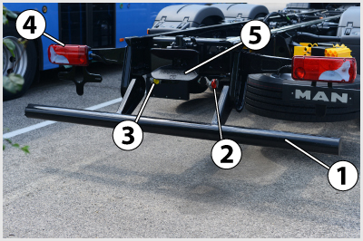
- 6. A képen látható tehergépkocsi alváz 1-es jelű alkatrésze... #704583
- a hátsó aláfutásgátló.
- az alváz kereszttartója.
- a pótkocsi vontatására szolgáló vonószerkezet.
- a rakomány beemelésére szolgáló emelőszerkezet.
- 7. A képen látható szerkezet... #704632
- egy kézi működtetésű fülkebillentő szivattyúja.
- egy kézi működtetésű felépítmény billentő szivattyúja.
- a rögzítőfék működtetése.
- a szervokormány olajszint-ellenőrző és olajleeresztő egysége.
- 8. A képen látható fülkebillentő szivattyú adattáblán az 1-es jelű piktorgram arra utal, hogy... #704633
- a fülkebillentést a rögzítőfék behúzása után végezzük.
- a fülkebillentést a rögzítőfék oldása után végezzük.
- 9. Mire figyelmeztet a képen a bekeretezett visszajelző lámpa? #704713
- Arra, hogy a fülkebillentő rendszer nincs megfelelően reteszelve.
- Arra, hogy a billenő felépítmény nincs megfelelően reteszelve.
- Arra, hogy a tompított fényszóró magasság beállítása nem megfelelő.
- 10. Mikor és mennyi időre ajánlott a szellőzést belső keringetésre kapcsolni a gépjármű üzemeltetése során? #704756
- Csak akkor célszerű, ha a kinti kellemetlen szagok vagy füst bejutását akarjuk megakadályozni. Utána ki kell kapcsolni, mert a szélvédő párásodhat, illetve elhasználódik a vezető- és utastér levegője.
- Bármeddig lehet, mert így a szellőzés és a fűtés energiafelhasználása kisebb lesz.
- Párás időben célszerű, mert a belső keringetés elősegíti a párátlanítást a szélvédőn.
- 11. Milyen helyzetben állítható meg a billenő rakterű járműveknél a billenő felépítmény? #704766
- Bármely megemelt helyzetben megállítható.
- Csak a két szélső helyzetben lehet megállítani.
- Csak a két szélső és a félig megemelt helyzetben lehet megállítani.
- Terhelten csak a szélső helyzetekben, üresen bármely helyzetben rögzíthető.
- 12. Mi a passzív biztonsági berendezések rendeltetése? #704772
- A passzív biztonsági berendezések mérséklik a bekövetkezett balesetek káros következményeit.
- A passzív biztonsági berendezések elősegítik a balesetek megelőzését.
- 13. A biztonsági öv működése akkor megfelelő, ha... #704776
- hirtelen megrántáskor megakad, és nem mozdul tovább kifelé.
- kis húzásra már megakad, és nem mozdul tovább kifelé.
- hirtelen megrántáskor megakad, majd lassan tovább mozdul kifelé.
- 14. Milyen részekből áll az alvázkeret? #704795
- Két hossztartóból és több kereszttartóból.
- Két hossztartóból.
- Egy hossztartóból és több kereszttartóból.
- 15. A gépjármű ablakait biztonsági üvegből készítik. Mire jelent ez a gyakorlatban? #704827
- Ha az ablak pl. ütközés során kitörik, a keletkező szilánkok nem okoznak mély sérülést.
- Ütközés során az ablakok nem törnek ki.
- Megnehezíti a gépjármű eltulajdonítását azáltal, hogy az üveget nem lehet betörni.
- 16. Mi az aktív biztonsági berendezések rendeltetése? #704889
- Az aktív biztonsági berendezések elősegítik a balesetek megelőzését.
- Az aktív biztonsági berendezések mérséklik a bekövetkezett balesetek káros következményeit.
- 17. Az állóhelyi fűtés... #704943
- egy előre beállított időpontban, vagy távvezérlő jelére aktiválja a fűtőrendszert, ezzel növelve a vezető kényelmét, és kialakításánál fogva alkalmas lehet a motor hűtőrendszerének előmelegítésére is.
- akkor működik, amikor a járművel megállunk, mert ekkor a menetszél nem tudná a vezetőfülkébe bejuttatni a motor hőjét.
- léghűtéses motoroknál biztosítja az utastér fűtését.
- 18. Mire figyelmeztet a képen a bekeretezett visszajelző lámpa? #714653
- Az ablakmosó tartályában alacsony a folyadékszint.
- Az ablakmosó folyadéktartálya nem megfelelő folyadékkal van feltöltve.
- Az ablakmosó folyadéktartálya befagyott.
- 19. Mi a csörlőberendezés alkalmazásának célja? #714654
- Elakadt járművek mentése, saját elakadt jármű önmentése, elromlott járművek, nehéz tárgyak rakfelületre vontatása.
- Meghibásodott jármű vontatása vonórúd hiányában.
- Konténer raktérre történő felrakása és rögzítése.
- Kerékcsere esetén a jármű emelése.
- 20. A tehergépkocsik és a pótkocsik vázszerkezete általában miért alvázkeretes? #714670
- Ez a megoldás nagyobb erők (terhek) elviselésére alkalmas és egy alváztípusra többféle felépítmény felszerelését teszi lehetővé.
- Így nagyobb haladási sebesség érhető el, különösen kanyarban.
- Így jóval kisebb lehet a jármű menetkész tömege.
- Mert csak így oldható meg a vonójármű és a pótkocsi összekapcsolása.
- 21. Mit akadályoz meg a tehergépkocsikra és pótkocsikra szerelt aláfutásgátló? #714671
- Baleset esetén személygépkocsik aláfutását a tehergépkocsi, vagy pótkocsi alváza alá.
- Pótkocsi felkapcsolása esetén a vonóháromszög beszorulását a tehergépjármű alá.
- Élő állatok bejutását a tehergépjármű alá.
- Illetéktelen személyek behatolását a tehergépkocsi alá.
- 22. Amikor a billenthető vezetőfülke megfelelően rögzített, reteszelt állapotban van, akkor a műszerfalon található ellenőrző lámpa... #714672
- nem világít.
- folyamatosan világít.
- 23. Mire figyelmeztet a képen a bekeretezett visszajelző lámpa? #714674
- A biztonsági övek bekapcsolására.
- A légzsákrendszer hibájára.
- A vezetőülés rugózásának hibájára.
- 24. Hogyan működik az esőérzékelő ablaktörlő? #714675
- Az ablaktörlőrendszer önműködően felismeri az eső intenzitását, és ahhoz igazítja az ablaktörlő működését.
- Eső esetén a visszajelző lámpa jelzi, hogy milyen fokozatba kell kapcsolni az ablaktörlő motorját.
- Ha eláll az eső, kikapcsolja a vezető által működtetett ablaktörlőt, így kímélve a szerkezetet és megnövelve annak élettartamát.
- 25. Hogyan viselkedik a többrétegű, ragasztott szélvédőüveg sérülés esetén (betörik a szélvédő)? #714676
- A repedések pókhálószerűen helyezkednek el, de nem törik súlyos sérülést okozó darabokra a szélvédő.
- A ragasztás miatt a szélvédő egyben esik ki a járműből, így nem keletkeznek sérülést okozó éles felületek.
- Az üveg apró, borsószem nagyságú darabokra törik, amelyek karcolhatnak, de nem okoznak mély sérülést.
- 26. Melyek az aktív biztonsági berendezések? #714677
- Kétkörös fékrendszer, megfelelő gumiabroncs, nagy fényerejű, helyesen beállított fényszórók, ABS, ASR, ESP stb.
- Biztonsági övek, övfeszítők, légzsákok, biztonsági szélvédő stb.
- Biztonsági kocsitest, besüllyesztett ajtókilincsek, energiaelnyelő zónák, aláfutásgátlók stb.
- Tűzoltó készülék, elakadásjelző háromszög, láthatósági mellény.
- 27. Melyek a passzív biztonsági berendezések? #714678
- Légzsákok, biztonsági kormányoszlop, biztonsági övek, fejtámlák stb.
- Nagyteljesítményű motor, megfelelő fényerősségű fényszóró, fűthető hátsó szélvédő, ablakmosó- berendezés stb.
- Fűthető hátsó szélvédő, menetdinamikai szabályozórendszer (ESP), az útviszonyoknak megfelelő mintázatú, jó állapotú gumiabroncs stb.
- 28. Mi mutatja, hogy működőképes a légzsák? #714679
- A gyújtás bekapcsolásakor a műszerfalon levő ellenőrző lámpa rövid ideig világít, majd kialszik.
- A gyújtás bekapcsolását követően a műszerfalon levő ellenőrző lámpa folyamatosan világít.
- Nem jelzi vissza semmi, csak szervízben, diagnosztikai műszerrel lehet ellenőrizni a működőképességét.
- Csak ebben az esetben lehet bekapcsolni a biztonsági övet.
- 29. A képen látható fülkebillentő szivattyún az 1-es jelű hatlapfejű alkatrészre kell helyezni a... #721228
- a fülkebillentésre szolgáló kézi hajtószár kulcsát.
- megfelelő méretű villáskulcsot.
- a megfelelő méretű csillagkulcsot.
- 30. Milyen részekből áll a hidraulikus fülkebillentő-rendszer? #721229
- A szivattyúból, a kettős működésű munkahengerből és a fülkereteszelő berendezésből.
- A szivattyúból és a fülkereteszelő berendezésből.
- A szivattyúból és a kettős működésű munkahengerből.
- 31. Ha a visszajelző lámpa jelzi az ablakmosó-tartályban levő folyadék szintjének csökkenését, akkor ennek a lámpának a színe... #721230
- sárga.
- villogó zöld.
- kék.
- piros.
- 32. A billenthető vezetőfülkéjű gépjármű billenő fülkéjét hány rögzítőrendszerrel kell felszerelni? #721231
- Legalább két, egymástól független rögzítőrendszerrel, melyek közül az egyik meghibásodása nem vonhatja maga után a másik meghibásodását.
- Legalább egy rögzítőrendszerrel, de annak biztonságosnak kell lennie.
- Legalább három, egymástól független rögzítőrendszerrel, amelyek közül az egyik meghibásodása nem vonhatja maga után a másik kettő meghiábásodását.
- 33. A klímaberendezés milyen módon végzi el a szélvédő párátlanítását? #721232
- A klímaberendezés a hűtés mellett a levegőt szárítja is, ezáltal az utastérben megjelenő pára gyorsabban távozhat.
- Külön levegőcsatornákon juttat több meleg levegőt a szélvédőre, így arról gyorsabban eltávozik a nedvesség.
- A ventilátor fordulatszámát maximumra, és a jármű szellőző rendszerét belső szellőztetésre állítja.
- 34. Miért alkalmaznak egyes haszongépjárműveknél rugózással ellátott vezetőülést? #724228
- Mert így a gépjárművezető igénybevételének csökkenése által nő az utazás biztonsága.
- Mert így meg lehet spórolni a rugók alkalmazását a futóműveknél, ezáltal kisebb bekerülési költségű lesz a gépjármű.
- Mert így különböző testsúlyú vezetők számára is megfelelő lesz a vezetőülés.
Tachográf (1 db., 1 pont)
- 35. Mi a tachográf feladata? #704749
- A járműsebesség, a menet- és állásidő, valamint a megtett út egyidejű regisztrálása.
- A motor fordulatszámának mérése, a nem megengedett fordulatszám-tartomány kijelzése.
- A jármű öndiagnosztikai rendszerének regisztrálásra alkalmas része.

- 36. Milyen típusú tachográf látható az ábrán? #704750
- Analóg kétvezetős tachográf.
- Digitális kétvezetős tachográf.
- Analóg egyvezetős tachográf.
- 37. A gépjárművezető gépjárművezetői kártyájáról legalább hány naponta kell a tárolt adatokat letölteni? #704751
- 28 naponta.
- 7 naponta.
- 365 naponta.
- 38. Egy gépjárművezető hány gépjárművezetői tachográf kártyával rendelkezhet? #704752
- Csak egy gépjárművezetői kártyával.
- Legfeljebb három gépjárművezetői kártyával rendelkezhet.
- Korlátlan számú gépjárművezetői kártyával rendelkezhet.
- 39. A gépjárművezetői kártyán kívül milyen digitális tachográf kártyák vannak még? #704753
- Műhelykártya, ellenőri kártya és üzembentartói kártya.
- Műhelykártya és ellenőri kártya.
- Ellenőri kártya, műhelykártya és biztosítói kártya.
- 40. Be kell-e helyeznie a digitális tachográfba gépkocsivezetői kártyáját az elindulás előtt? #704967
- Igen.
- Csak akkor, ha a járművel 15 km/h-nál gyorsabban fog haladni.
- Nem szükséges.
- 41. Jelzi-e a digitális tachográfkészülék a vezetési idő túllépésének veszélyét járművezetés közben? #704968
- Igen.
- Csak akkor ad figyelmeztetést, amikor az idő túllépése már megtörtént.
- Nem.
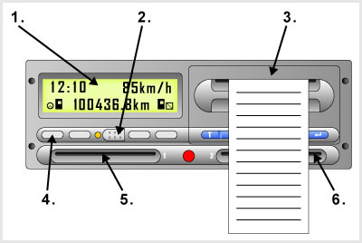
- 42. A képen látható digitális tachográfkészüléken... #704969
- az 1-es jelű a kijelző, a 2-es a kalibrálásra és letöltésre alkalmas adapter csatlakozója, a 4-es pedig a tevékenység típusának kiválasztására szolgáló kapcsoló.
- az 1-es jelű a kijelző, a 4-es a tevékenység típusának kiválasztására szolgáló kapcsoló, a 6-os pedig a kiíró.
- a 2-es jelű a tevékenység típusának kiválasztására szolgáló kapcsoló, a 4-es a visszajelző lámpa, az 5-ös pedig a kiíró.
- 43. Elindulhat-e azonnal gépkocsijával, amint a vezetői kártyáját a digitális tachográfkészülékbe elhelyezte? #704970
- Csak azt követően, hogy a digitális tachográf a kártyáját már felismerte, és Ön válaszolt a kijelzőn megjelenő kérdésekre.
- Addig nem, amíg a kártya ellenőrzését követően a tachográf ellenőrző lámpája nem vált zöld színűre.
- Igen.
- 44. Hogyan működik tovább a digitális tachográf, ha a gépkocsivezetői kártya memóriája megtelik? #704971
- A készülék automatikusan felülírja a kártyán található legrégebbi adatokat.
- A készülék tömöríti a kártyán található adatokat, amelyeket ezután már csak szakműhelyben lehet olvashatóvá tenni.
- A tachográf nem rögzít több adatot a kártyára.
- 45. Hány nap eseményeit tárolja el a digitális tachográf fedélzeti egysége? #704972
- 365 nap.
- 28 nap.
- 180 nap.
- 46. Mely kártyatípusokkal lehetséges a fedélzeti egység letöltése? #704973
- A műhely-, az üzembentartói és az ellenőri kártyákkal.
- Csak a járművezető kártyájával.
- Csak a műhelykártyával.
- 47. Melyik egység tárolja a digitális tachográf által rögzített adatokat? #704974
- A gépkocsivezetői kártya, illetve a fedélzeti egység is egymástól függetlenül.
- Csak a járművezető kártyája.
- Csak a tachográf fedélzeti egysége.
- 48. Mit tapasztal akkor, amikor a gépkocsivezetői kártya digitális tachográfba történő behelyezése nélkül indul el? #704975
- A kártya nélküli vezetésről figyelmeztető üzenetet kap a tachográf kijelzőjén.
- A kártyáját menet közben már nem tudja behelyezni. Ehhez a járművel meg kell állni, a motort le kell állítani.
- Erről nem kap külön jelzést vagy figyelmeztetést.
- 49. Hány évig érvényes a digitális tachográfban használt gépjárművezetői kártya? #721218
- 5 évig érvényes.
- 1 évig érvényes.
- 2 évig érvényes.
- 50. Járművezetőként Önnek hány érvényes gépjárművezetői kártyája lehet a digitális tachográfhoz? #721219
- Csak egy, amely tartalmazza a fényképét és az adatait.
- Legfeljebb kettő, és a második csak külön hatósági engedéllyel használható.
- Több is lehet, mert országonként külön kártyát kell kiváltani.
- 51. Milyen eszköz a tachográf? #721220
- A gépkocsi sebességét, menet- és állásidejét, valamint megtett útját rögzítő berendezés.
- Kilométer-számláló.
- A gépjármű üzemanyag-takarékos vezetését elősegítő, tájékoztató műszer.
- 52. Hány, különböző jogosultsági szintű kártya létezik a digitális tachográfhoz? #721221
- Négy típusa létezik: a gépjárművezetői, az üzembentartói, a műhely- és az ellenőri.
- Két típusa van: a gépkocsivezetői és a műhelykártya.
- Három: a gépjárművezetői, az üzembentartói és az ellenőri kártya.
- 53. Hogyan kell behelyezni a gépjárművezetői kártyát a digitális tachográfba? #724219
- A kártya chip részével felfelé.
- A kártya chip részével lefelé.
- Nem kötött a kártya behelyezési módja.
- 54. Hogy kell a gépkocsivezetői kártyát behelyezni a digitális tachográfba? #724220
- A chip felfelé nézzen.
- A chip lefelé nézzen.
- Tetszőleges helyzetben.
- 55. Kötelező-e a digitális tachográfot 2 évente kalibrálni? #724221
- Igen.
- Csak abban az esetben, amikor új, főként, ha más méretű gumiabroncsot szerelnek fel a járműre.
- Nem.
- 56. Gépkocsija digitális tachográffal van felszerelve. Ön elvesztette a gépjárművezetői kártyáját. Szükséges-e a munkanap végén kinyomatot készítenie az aznapi fuvartevékenységének igazolására? #724222
- Igen.
- Nem szükséges.
- 57. Hány évig érvényes a digitális tachográfban használt gépkocsivezetői kártya? #724223
- Öt évig.
- Három évig.
- Egy évig.
- 58. Rögzíti-e a gépjármű sebességtúllépéseit a digitális tachográf? #724225
- Beállítástól függően a berendezés rögzíti a gépjármű egy percet meghaladó folyamatos gyorshajtását.
- Minden esetben a 90 km/h-nál nagyobb sebességű haladást rögzíti.
- Igen, a berendezés képes az adott útszakaszon érvényes megengedett haladási sebességhez képest rögzíteni a sebességhatár átlépését.
Belsőégésű motorok (Otto és dízel) működése, felépítése (1 db., 1 pont)
- 59. A dízelmotorok fajlagos tüzelőanyag-fogyasztása az Otto-motorokéhoz képest... #704404
- alacsonyabb.
- ugyanannyi.
- magasabb.
- 60. Melyik állítás igaz a négyütemű dízel- és Otto-motorokra? #704453
- Szívó- és kipufogónyílásait szelepek nyitják, illetve zárják.
- Szívónyílását a dugattyú, kipufogónyílását szelep nyitja és zárja.
- Kipufogónyílását a dugattyú, szívónyílását szelep nyitja és zárja.
- Résvezérléssel működnek, szívó- és kipufogónyílásait is a dugattyú nyitja és zárja.
- 61. Melyik igaz a négyütemű dízelmotorra az alábbi megállapítások közül? #704492
- A felső holtpont előtt - az égéstérben összesűrített levegőbe - gázolajat porlaszt a befecskendező egység.
- Külső keverékképzésű, tehát a hengertérbe a szívóütemben levegő-gázolaj keveréket szív be.
- A felső holtpont közelében, a sűrítési ütem végén a befecskendezett gázolajat elektromos szikrával gyújtják meg.
- A felső holtpont közelében, a sűrítési ütem végén a befecskendezett gázolajat az izzítógyertyával gyújtják meg.
- 62. A képen látható motorfordulatszámmérőn a gazdaságos üzemelés fordulatszám-tartománya... #704605
- a 700 és 1.500 1/min (percenkénti) motorfordulatszám közé esik.
- az 1.500 és 2.500 1/min (percenkénti) motorfordulatszám közé esik.
- a 2.500 és 3.000 1/min (percenkénti) motorfordulatszám közé esik.
- a 700 és 1500 1/s (másodpercenkénti) motorfordulatszám közé esik.
- 63. Milyen ütem lehetséges a négyütemű Otto-, vagy dízelmotor hengerében, ha a dugattyú a felső holtpont felé mozog, és mind a szívó- mind a kipufogószelep zárva van? #704722
- Sűrítés.
- Kipufogás.
- Terjeszkedés.
- Szívás.
- 64. Mi a V-motorok alkalmazásának előnye a soros hengerelrendezéshez képest? #704724
- Rövidebb, kompaktabb motor, jobb helykihasználással.
- Nagyobb teljesítmény.
- Magasabb fordulatszám.
- 65. Tehergépjárműveken általában hol helyezik el a motort? #704736
- Legtöbb esetben a jármű elején (orrmotoros), esetenként az alváz alatt (alacsony belépésű fülke kialakítása érdekében).
- Minden esetben a jármű elején (orrmotoros).
- A jármű eljén (orrmotoros), és a jármű hátsó részében (farmotoros) egyaránt elhelyezhetik.
- 66. A mai, korszerű dízelmotorok égéstere többnyire... #704737
- osztatlan (a befecskendezés közvetlenül a hengertérbe történik).
- előkamrás (a befecskendezés a hengerfejben kialakított előkamrába történik).
- örvénykamrás (a befecskendezés a hengerfejben kialakított örvénykamrába történik).
- 67. Melyik motornak kisebb a kompresszióviszonya? #704839
- Az Otto-motornak.
- A dízelmotornak.
- Mindkét motornak közel azonos a kompresszióviszonya.
- 68. Milyen részekből áll a négyütemű motor forgattyús hajtóműve? #704845
- Dugattyú, dugattyúcsap, hajtórúd, forgattyús tengely, lendítőkerék.
- Henger, hengerfej, forgattyús ház, olajteknő.
- Hengertömb, dugattyú, forgattyús ház, forgattyús tengely, olajteknő.
- 69. Mi a hengerfejtömítés feladata? #704870
- A hengertér, a kenő- és hűtőfolyadékcsatornák, illetve a külvilág biztonságos elválasztása egymástól.
- A hengerfej és a hengertömb elektromos szigetelése.
- A kipufogó és szívócsonkok megfelelő tömítése.
- 70. Négyütemű dízelmotornál mit szív be a dugattyú a nyitott szívószelepen keresztül az égéstérbe? #704883
- Levegőt.
- Benzin-levegő keveréket.
- Gázolaj-levegő keveréket.
- Benzin-gázolaj-levegő keveréket.
- 71. Korszerű, osztatlan égésterű, négyütemű dízelmotornál eredeti térfogatának hányad részére sűríti össze a dugattyú a levegőt a hengerben? #704905
- 1/14-1/18 részére.
- 1/9-1/13 részére.
- 1/20-1/30 részére.
- 1/3-1/4 részére.
- 72. A dízelmotor hengerébe befecskendezett gázolajat... #704910
- a levegő összesűrítése következtében fejlődő hő gyújtja meg.
- villamos gyújtószikra gyújtja meg.
- az előkamrában levő izzógyertya gyújtja meg.
- a felhevült dugattyú gyújtja meg.
- 73. Mit jelent a belső keverékképzés kifejezés? #704916
- A levegő a tüzelőanyaggal a hengeren belül találkozik és ott alakul ki a keverék.
- A levegő a tüzelőanyaggal a szívócső belsejében találkozik, és ott is keveredik össze.
- A levegő és a benzin keveréke a karburátor keverőterében alakul ki.
- 74. Melyik motornak jobb a hatásfoka és ezáltal alacsonyabb a fajlagos tüzelőanyag-fogyasztása? #704953
- A dízelmotoré.
- Az Otto-motoré.
- A dízelmotor és az Otto-motor hatásfoka azonos.
- 75. Hogyan hat a hidraulikus szelephézag kiegyenlítő működése a szelephézag nagyságára? #704955
- A szelepvezérlés a motor üzeme alatt mindig éppen hézagmentes állapotban üzemel.
- A szelephézag értéke mindig a beállított legkisebb értéken tartható.
- A szelephézag értéke két beállított szélsőérték között folyamatosan szabályozható.
- 76. A dízelmotorok sűrítési viszonya... #714514
- magasabb, mint az Otto-motoroké.
- nem tér el lényegesen a Otto-motorokétól.
- alacsonyabb, mint a Otto-motoroké.
- 77. Milyen ütem zajlik a négyütemű Otto- és dízelmotorok hengerében, amikor a dugattyú az alsó holtpont felé halad? #714515
- Szívás vagy expanzió (terjeszkedés).
- Sűrítés.
- Sűrítés vagy terjeszkedés.
- 78. Mitől indul meg a befecskendezett gázolaj égése a dízelmotorok hengerében? #714516
- A nagy nyomás hatására létrejövő magas hőmérsékleten öngyulladás következik be.
- Elektromos szikragyújtástól.
- Elektromos izzítógyertya hatására.
- 79. Milyen ütem zajlik a négyütemű Otto- és dízelmotorok hengerében, amikor a dugattyú a felső holtpont felé halad? #714517
- Kompresszió (sűrítés) vagy kipufogás.
- Szívás vagy terjeszkedés.
- Sűrítés vagy szívás.
- 80. A négyütemű Otto- és dízelmotorok... #724162
- szívó- és kipufogónyílásait is szelepek nyitják, illetve zárják.
- kipufogónyílását szelep nyitja és zárja, szívónyílása a henger falán található, amelyet a dugattyú nyit és zár.
- résvezérléssel működnek, kipufogó- és szívónyílásaikat a dugattyú nyitja és zárja.
- szívónyílását szelep nyitja és zárja, kipufogónyílása a henger falán található, amelyet a dugattyú nyit és zár.
- 81. A dízelmotorok sűrítési viszonya... #724163
- magasabb, mint a benzinmotoroké.
- nem tér el lényegesen a benzinmotorokétól.
- alacsonyabb, mint a benzinmotoroké.
- 82. Mit jelent a külső keverékképzés kifejezés? #724164
- A tüzelőanyag és a levegő elkeveredése a munkatéren kívül (karburátorban, szívócsőben) történik.
- A tüzelőanyag és a levegő elkeveredése az előkamrában történik.
- A tüzelőanyag és a levegő elkeveredése a dugattyúkamrában történik.
- 83. Milyen részekből áll a motortest? #724168
- Hengerfej, henger, forgattyúsház, olajteknő.
- Dugattyú, hajtórúd, forgattyústengely.
- Dugattyú, vezérműtengely, szelepek.
- 84. Nyáron, nagy melegben miért csökken a motorok teljesítménye? #724169
- Mert kisebb a levegő sűrűsége és így a szívási ütemben a motorba jutó levegőmennyiség is kisebb.
- Mert nagy melegben kisebb befecskendezési nyomást lehet alkalmazni.
- Mert kisebb mértékben tud összekeveredni a meleg levegő a tüzelőanyaggal.
- 85. Mi a jelentése az OHC szelepvezérlésnek? #724170
- Felülvezérelt, felülszelepelt szelepvezérlés.
- Alulvezérelt, felülszelepelt szelepvezérlés.
- Alulvezérelt, alulszelepelt szelepvezérlés.
Dízelmotorok tüzelőanyagellátó rendszerei (1 db., 1 pont)
- 86. Milyen módon állíthatók le a dízelmotorok? #704409
- A gázolaj-befecskendezés megszüntetésével.
- Az izzítógyertyák kikapcsolásával.
- A szívócső elzárásával.
- A gyújtógyertyák áramkörének megszakításával.
- 87. Miért van szükség a gázolaj szűrésére? #704458
- Mert a szennyeződések jelentősen megnövelik a szivattyúelemek és a porlasztók kopását.
- Mert a szennyeződések elzárhatják a porlasztókhoz vezető nyomócsöveket.
- Mert a szennyeződések hátrányosan befolyásolják a motor égésfolyamatát.
- 88. A gázolaj útjának megfelelő sorrendben milyen szerkezeti egységeket mutat az ábra a dízel tüzelőanyag ellátó rendszerben? #704475
- Tüzelőanyagtartály - tápszivattyú - főszűrő - befecskendező szivattyú - porlasztók.
- Tüzelőanyagtartály - befecskendező szivattyú - főszűrő - porlasztó - tápszivattyúk.
- Tüzelőanyagtartály - főszűrő - porlasztó - tápszivattyú - befecskendező szivattyúk.
- 89. Mi történik, amikor a dízemotor tüzelőanyag-ellátó rendszerébe üzem közben levegő kerül? #704503
- Leáll a motor.
- A motor tüzelőanyag-fogyasztása jelentősen megnövekszik.
- A motor teljesítménye kis mértékben csökken.
- Semmi, ez nem befolyásolja érdemben a motor működését.
- 90. A képen látható 2-es jelű alkatrész egy... #704590
- tüzelőanyag szűrő vízzsákja.
- tüzelőanyag-tartály szintjelzője.
- motorolaj szűrő vízzsákja.
- 91. Okozhat-e meghibásodást a Common Rail rendszerben, ha a gépjárműbe véletlenül benzint tankolnak gázolaj helyett? #704744
- Igen, mert a benzin nem képes megfelelően kenni az extrém nagy nyomáson működő alkatrészeket, ezért azok nagyon rövid időn belül tönkremennek.
- Nem, legfeljebb nem indul be a motor.
- Nem, de a motor működése bizonytalanná válik, ezért viszonylag gyorsan ki kell cserélni a tartályban a benzint gázolajra.
- 92. Mi a Common Rail befecskendező rendszer legfőbb előnye? #704746
- A befecskendezési nyomás és a befecskendezési időpontok tág határok között változtathatók, a befecskendezés több szakaszra is bontható, a beporlasztás a nagy nyomásnak köszönhetően kiváló minőségű.
- Az alkalmazott alacsony befecskendezési nyomás kevésbé terheli a befecskendező rendszer szekezeti elemeit.
- Elektromos hajtású szivattyúkkal működik, melyek hajtása így nem terheli közvetlenül a motort.
- 93. Mekkora általában a Common Rail befecskendezőrendszerek legnagyobb befecskendezési nyomása? #704747
- 1350-2000 bar.
- 100-300 bar.
- 4,5-5,5 bar.
- 94. Mi a feladata a közös tárolócsőnek a Common Rail rendszerekben? #704748
- A tüzelőanyagot nagy nyomáson tárolja, innen jut el a gázolaj az egyes hengerek elektromágneses, vagy piezo-vezérlésű befecskendezésű fúvókáihoz.
- A porlasztótól vezeti vissza a résolajat a hűtőbe, majd a tartályba.
- Térfogatának változtatásával szabályozza a befecskendezőrendszer nyomását.
- 95. Mi a feladata a tápszivattyúnak (kisnyomású szivattyúnak) a dízel tüzelőanyag-ellátórendszerekben? #704964
- A tartályból felszívott gázolajat a többlépcsős szűrőn keresztül a befecskendezőszivattyú közös tüzelőanyag-csatornájába, adagolóporlasztós rendszereknél az adagolóelemekhez, Common Rail rendszereknél a nagynyomású szivattyúfokozat bementéhez juttatja.
- A gázolajat a befecskendezőszivattyúból a megfelelő nyomáson a befecskendezőfúvókán keresztül az égéstérbe juttatja.
- A nagynyomású körből szállítja vissza a résolajat a tüzelőanyag-tartályba.
- 96. Milyen feladatokat lát el a korszerű dízelmotorok elektronikus motorvezérlő rendszere? #704965
- Alapjárat szabályozás, fordulatszám korlátozás, a motor működési paramétereihez (gázpedálállás, fordulatszám, katalizátorok működése stb.) igazodó befecskendezés, sebességkorlátozás, együttműködés más elektronikus rendszerekkel (ASR, ESP, váltóvezérlés).
- A befecskendező rendszer alkatrészeinek összehangolt működését biztosítja a legalacsonyabb tüzelőanyagfogyasztás érdekében.
- A kipufogóredszerbe épített katalizátorok működését szabályozza és hangolja össze, valamint elvégzi az AdBlue folyadék adagolását is.
- 97. Mi az adagolóporlasztós befecskendező rendszerek legfőbb előnye a hagyományos adagolószivattyús változatokhoz képest? #704966
- Az adagoló és a porlasztóelem egy házban foglal helyet, így a nagynyomású szakasz rövid, nincsenek nyomáslengések és jóval nagyobb befecskendezési nyomás valósítható meg.
- Az elektromágneses fuvókaműködtetés pontosabb befecskendezési időzítést tesz lehetővé.
- Az adagoló és a porlasztóelem egy házban foglal helyet, nincsenek nyomáslengések és a befecskendező fúvóka nyitásához jóval kisebb nyomás is elegendő.
- 98. A képen látható tehergépkocsi műszerfalon a 3-as jelű műszer... #714532
- a fordulatszámmérő, amely a motor percenkénti fordulatszámának százal elosztott értékét mutatja.
- a sebességmérő, amely a jármű sebességét mérföld/órában mutatja.
- a feszültségmérő, amely az elektromos hálózat feszültségét jelzi.
- 99. A képen látható tehergépkocsi műszerfalon a 3-as jelű fordulatszámmérőn látható zöld sárga és piros jelzések jelentése a következő:... #714533
- zöld - gazdaságos üzemelés fordulatszám-tartománya, sárga - megengedhető, de kevésbé gazdaságos fordulatszám-tartomány, piros - túlpörgés.
- zöld - megfelelő alapjárati fordulatszám-tartomány, sárga - üzemi fordulatszám-tartomány, piros - túlpörgés.
- zöld - gyorsítás fordulatszám-tartománya, sárga - tartós haladás fordultszám-tartománya, piros - túlpörgés.
- 100. Mi a közös nymócsöves (Common Rail) befecskendezőrendszerben található magasnyomású szivattyú feladata? #714536
- A közös nyomócső (tárolócső) számára a szükséges magas nyomást folyamatosan, a befecskendezéstől függetlenül létrehozza és fenntartja.
- A tartályból felszívja a tüzelőanyagot és a szűrőn keresztül eljuttatja a befecskendezőszivattyú közös tüzelőanyag csatornájába.
- A mindenkori befecskendezési igénynek megfelelő tüzelőanyag mennyiséget adagolja.
- 101. A képen látható tehergépkocsi műszerfalon az 1-es jelű kombinált műszer... #721105
- a tüzelőanyag-tartály és az AdBlue tartály szintjelzője.
- a pillanatnyi és az átlagos tüzelőanyag-fogyasztást mutatja.
- a vezetési stílus gazdaságosságának megítélésére szolgál.
- 102. A képen látható 1-es jelű alkatrész egy... #721106
- tüzelőanyag szűrő.
- motorolaj szűrő.
- kenőolaj tartály.
- központi zsírzóberendezés.
Dízelmotorok szívó- és kipufogórendszerei, katalizátorok (1 db., 1 pont)
- 103. A repedt, lyukas, tömítetlen kipufogórendszert a lehető leghamarabb ki kell javíttatni, mert... #704432
- az utastérbe kipufogógáz szivároghat, ami mérgezést okoz, illetve a kipufogás ilyenkor nagy zajjal jár.
- a motor túlmelegedhet.
- a motor fogyasztása jelentősen megnövekedhet.
- 104. Korszerű nehéz haszonjárműveken van-e lehetőség a száraz, papírbetétes levegőszűrő állapotának ellenőrzésére járó motor esetén? #704447
- Igen, a műszerfalon elhelyezett műszerrel vagy kontroll-lámpával.
- Nem, ilyen ellenőrzést csak szakműhelyben tudnak végezni.
- Igen, a szűrőre csatlakoztatható mérőberendezéssel.
- 105. Amikor a levegőszűrő már részlegesen eltömődött, akkor... #704473
- a motor tüzelőanyag-fogyasztása magasabb.
- a motor teljesítménye és fogyasztása is megnövekszik.
- a motor hűtése romlik, és ezért túlmelegedhet.
- 106. Miért szükséges levegőszűrőt alkalmazni a beszívott levegő tisztítására? #704505
- A motor alkatrészeinek kisebb kopása, hosszabb élettartama érdekében.
- A jobb keverékképzés érdekében.
- Mert a szennyeződések nagymértékben rontják a motor égésfolyamatát.
- 107. A képen látható 1-es jelű alkatrész a tehergépkocsi... #704634
- AdBlue tartálya.
- tüzelőanyag-tartálya.
- kenőolajtartálya.
- szervoszivattyújának olajtartálya.
- 108. A képen látható 1-es jelű AdBlue tartály arra utal, hogy a tehergépkocsit... #704635
- SCR rendszerű, nitrogénoxidokat lebontó katalizátorral szerelték fel.
- részecskeszűrővel szerelték fel.
- oxidációs katalizátorral szerelték fel.
- katalizátorral nem szerelték fel.
- 109. Milyen gyakran kell a tehergépkocsi képen látható 1-es jelű AdBlue tartályát a tüzelőanyagtályhoz viszonyítva tölteni? #704636
- Ritkábban.
- Gyakrabban.
- Ugyanolyan gyakran.
- 110. Mire figyelmeztet a képen a bekeretezett visszajelző lámpa? #704715
- A légszűrő eltömődésére.
- A katalizátorok rendellenes működésére.
- Arra, hogy a fülkebillentő rendszer nincs megfelelően reteszelve.
- 111. Miért kell megszűrni a motorba beszívott levegőt? #704754
- Mert a beszívott porszemcsék koptatják a hengert és a por az olajjal elkeveredve a csapágyak kopását is növeli.
- Mert a beszívott por rontja a motor friss töltettel való feltöltődését.
- Mert a beszívott por miatt a befecskendezett tüzelőanyag nem tud tökéletesen elkeveredni a levegővel.
- 112. Mi a száraz papírbetétes levegőszűrő működési elve? #704755
- A levegő átáramlik a szűrőbetét anyagán, a porszemcsék fennakadnak a papír pórusain.
- A levegőből a por a centifugális erő hatására válik ki.
- A levegőben levő port megköti a szűrőházban levő olaj.
- 113. Hogyan regenerálják a korszerű haszongépjármű-motorok részecskeszűrőit? #704758
- Automatikusan: a motor elektronikus szabályozórendszere időnként célzottan megemeli a kipufogógáz hőmérsékletét, ezzel a lerakódott koromrészecskék elégve távozhatnak a részecskeszűrőből.
- A járművet 5-10.000 km-enként szakszervizbe kell vinni, ahol elvégzik ezt a műveletet.
- A járművezetőnek a motor leállítását megelőzően, alapjárati fordulatszámon a megfelelő nyomógombot kell kb. egy percig működtetnie.
- 114. Mik a katalizátorokkal is felszerelt kipufogórendszer feladatai? #704759
- A forró kipufogógáz veszélytelen elvezetése a motortól a szabadba, a károsanyag- és zajkibocsátásra vonatkozó előírások betartásával.
- A motor hűtése a forró kipufogógázok elvezetése által.
- A motor rázkódásának és zajkibocsátásának csökkentése.
- 115. Mely károsanyagok kibocsátását korlátozzák a közúti gépjárművek kipufogógázaiban az EURO előírások? #704760
- A szénmonoxid, az elégetlen szénhidrogének, a nitrogénoxidok és a koromrészecskék mennyiségét.
- A szénmonoxid, a széndioxid és az elégetlen szénhidrogének mennyiségét.
- A szénmonoxid, a nitrogén és a koromrészecskék mennyiségét.
- 116. Milyen káros összetevő mennyiségének csökkentését lehet elérni a kipufogógáz visszavezetéssel (EGR)? #704761
- A nitrogénoxidokét.
- A szénmonoxidét.
- A koromtartalomét (részecskékét).
- 117. Mi az oxidációs katalizátorok feladata a haszongépjárművek dízlemotorjainak kipufogórendszerében? #704762
- Az elégetlen szénhidrogének és a szénmonoxid oxidálása ártalmatlan vegyületekké (víz és széndioxid), illetve a nitrogénmonoxid továbboxidálása nitrogéndioxiddá a további feldolgozáshoz.
- A mögötte található részecskeszűrő működéséhez a megfelelő kipufogógáz-hőmérséklet beállítása.
- A nitrogénoxidok semlegesítése.
- 118. Mi a szelektív katalitikus redukciót végző SCR katalizátorok feladata? #704763
- A kipufogógázban található, mérgező nitrogéndioxidok átalakítása a befecskendezett AdBlue folyadék felhasználásával ártalmatlan vegyületekké.
- Az elégetlen szénhidrogének és a szénmonoxid tovább oxidálása.
- A széndioxid kibocsátás csökkentése az üvegházhatás elkerülése érdekében.
- 119. Milyen gyakran kell a tehergépkocsi képen látható 1-es jelű AdBlue tartályát a tüzelőanyagtályhoz viszonyítva tölteni? #714529
- Ritkábban.
- Gyakrabban.
- Ugyanolyan gyakran.
- 120. Korszerű, nehéz tehergépkocsikon lehet-e ellenőrizni a jármű üzeme alatt a levegőszűrő eltömődését? #714530
- Igen, a műszerfalon levő ellenőrző lámpával, vagy ellenőrző műszerrel.
- Nem, ez csak szakszervízben lehetséges diagnosztikai műszerrel.
- 121. Hogyan lehet a dízelmotor által kibocsátott kormot (részecskéket) kiszűrni a kipufogógázból? #714531
- Dízel részecskeszűrő (DPF) segítségével lehet kiszűrni.
- Hármas hatású katalizátorral lehet kiszűrni.
- AdBlue folyadék befecskendezésvel lehet semlegesíteni.
- 122. A képen látható 1-es jelű alkatrész a tehergépkocsi... #721101
- AdBlue tartálya.
- tüzelőanyag-tartálya.
- kenőolajtartálya.
- szervoszivattyújának olajtartálya.
- 123. A képen látható 1-es jelű AdBlue tartály arra utal, hogy a tehergépkocsit... #721102
- SCR rendszerű, nitrogénoxidokat lebontó katalizátorral szerelték fel.
- részecskeszűrővel szerelték fel.
- oxidációs katalizátorral szerelték fel.
- katalizátorral nem szerelték fel.
- 124. Ha a száraz, papírbetétes levegőszűrő eltömődött, akkor a motor... #724174
- teljesítménye csökken, fogyasztása nő.
- teljesítménye és fogyasztása is csökken.
- teljesítménye nő, fogyasztása csökken.
- teljesítménye és fogyasztása is nő.
Dízelmotorok égésfolyamata, feltöltés, rendellenességek, füstölés (1 db., 1 pont)
- 125. Részt vehet-e a közúti forgalomban, ha dízelmotorral felszerelt gépjárművének kipufogógázában a koromtartalom a megengedett határértéket meghaladja? #704415
- A fokozott környezetszennyezés miatt ez nem megengedett.
- Csak lakott területen kívül.
- Igen, ha a motor működésében egyébként más rendellenesség nem tapasztalható.
- 126. A turbófeltöltős dízelmotort... #704434
- célszerű a beindítást követően, illetve a leállítás előtt legalább fél percig alapjáraton üzemeltetni, hogy a turbótöltő tengelye megfelelő kenést kapjon.
- mindig nagy fordulatszámon kell leállítani, mert így a turbótöltő kitisztul.
- a beindítást követően egy percig magas fordulatszámon kell üzemeltetni, hogy a turbótöltő is elérje az üzemi fordulatszámát.
- 127. A turbótöltő tengelyének csapágyazása... #704450
- a motor olajozási rendszeréhez kapcsolódik.
- önkenő, külön olajozást nem igényel.
- rendszeres zsírozást igényel.
- 128. Mire következtet abból, ha téli hidegben a motor kipufogócsövén enyhén fehéres színű füst távozik? #704514
- Megszokott jelenség hideg időben, hogy az égés során keletkező vízgőz lecsapódik.
- Megnövekedett kenőolaj-fogyasztásra.
- Fagyálló folyadék került az égéstérbe.
- 129. Ha megnövekszik a dízelmotor gyulladási késedelme, akkor a motor járása... #704521
- kopogó, kemény lesz.
- nyugodtabb, egyenletesebb lesz.
- egyenetlen, rángató lesz.
- 130. Mi a tüzelőanyag beporlasztása és meggyulladása között eltelt idő helyes elnevezése? #704734
- Gyulladási késedelem.
- Füsthatár.
- Működési késedelem.
- 131. A töltőlevegő-visszahűtés alkalmazása lehetővé teszi... #704895
- a feltöltött motor további teljesítménynövelését és kedvezőbb fajlagos tüzelőanyag-fogyasztás elérését.
- a motor élettartamának megnövekedését a turbófeltöltő hőterhelésének csökkentésével.
- az utastér hatékonyabb szellőzésének és légkondícionálásának kialakítását.
- 132. Mi a füsthatár? #704954
- Az a legnagyobb beporlasztott tüzelőanyag-mennyiség, ami még légfelesleggel égethető el.
- Jogszabály által meghatározott maximális károsanyag-kibocsátás.
- Az a legkisebb beporlasztott tüzelőanyag-mennyiség, ami még gyulladóképes keveréket biztosít.
- 133. Milyen színű kipufogófüstöt eredményez, ha hengertömbrepedés vagy a hengerfejtömítés tönkremenetele miatt fagyálló folyadék kerül az égéstérbe? #704956
- Sűrű fehér színűt.
- Sűrű fekete színűt.
- Kékes színűt.
- 134. Milyen színű a kipufogófüst, ha motorolaj került az égéstérbe? #704957
- Kékes színű.
- Sűrű fehér színű.
- Enyhén fehéres színű.
- 135. Mi a ’turbólyuk’? #704963
- Turbótöltött motorok esetében hirtelen gázadáskor, a feltöltő tehetetlensége miatt tapasztalható késedelem a nagyobb teljesítmény leadása és a fordulatszám emelkedése tekintetében.
- A turbótöltő háza a túlterhelés okozta túlhevülés miatt kiéghet.
- A szívó- és a kipufogócsöveken a turbótöltő csatlakoztatására kialakított nyílás.
- 136. Turbófeltöltővel felszerelt dízelmotor esetében vezethet-e meghibásodáshoz, ha a motort magas fordulatszámon járatva állítja le? #714524
- Igen, mivel a leállítás után még magas fordulaton tovább forgó turbina tengelyének kenése megszűnik.
- Nem, sőt a turbótöltött motort mindig így célszerű leállítani.
- Igen, mert így a turbótöltő túlpöröghet.
- 137. Milyen hibára utal, és mit tanácsos tenni, amikor a motor kipufogócsövéből sűrű, fehér színű kipufogógáz távozik? #714525
- A hengerfejtömítés hibájára vagy hengertömbrepedésre. A motort nem szabad tovább üzemeltetni!
- Megnövekedett kenőolaj-fogyasztásra. A motor mechanikai állapotát mielőbb felül kell vizsgálni.
- Szokványos jelenség, nem igényel beavatkozást.
- 138. Mi a szerepe az izzógyertyáknak a hideg dízelmotor beindításakor? #714526
- Az égéstérbe belépő levegő felmelegítése.
- A befecskendezett gázolaj meggyújtása hideg motor esetében.
- Az égéstér és a henger falának felmelegítése.
- A tüzelőanyagtartályban található gázolaj felmelegítése.
- 139. Mi a turbófeltöltő alkalmazásának célja négyütemű dízelmotornál? #714527
- Több levegőben több tüzelőanyag égethető el, ami teljesítménynövekedést eredményez.
- Így magasabb tüzelőanyag befecskendezési nyomást lehet elérni.
- Így magasabb lehet a motor maximális fordulatszáma.
- Csak így lehet közvetlen befecskendezést alkalmazni.
- 140. Miben különböznek alapvetően az Otto- és dízelmotorok? #724173
- A tüzelőanyag levegő keverék meggyújtásának módjában.
- A keverékképzés módjában.
- A működési ütemek számában.
Motorok hűtése, hűtőrendszer (1 db., 1 pont)
- 141. A motor és a hűtő közti csőszakaszba épített termosztát... #704422
- segíti a motor gyorsabb felmelegedését, meggátolja a túlhűtést.
- álló motornál is lehetővé teszi a gépkocsi fűtését.
- határolja a hűtőrendszer nyomását.
- megakadályozza a hűtőfolyadék felforrását.
- 142. A motor működése szempontjából az a legkedvezőbb, ha a hűtőfolyadék hőmérséklete... #704428
- közelítőleg 80-95 Celsius fok között van.
- kb. 50-60 Celsius fok-os.
- legalább 100 Celsius fok-os.
- 143. Ellenőrizhető-e járó motor esetén a hűtőfolyadék hőmérséklete? #704443
- Igen, a műszerfalon elhelyezett hőmérséklet-kijelzővel (analóg, digitális).
- Igen, a termosztát szolgál erre a célra.
- Nem, erre csak álló helyzetben van lehetőség, a hűtőben vagy a kiegyenlítő tartályban megmérve a hőmérsékletet.
- 144. Hogyan célszerű leállítani gépkocsija motorját tartós, megerőltető hegymenetet követően? #704445
- Alapjáraton kb. 1 percig működtetve a motort, elősegítve a lehűlését.
- A motort kb. 1 percig maximális fordulatszámon járatva, mert így tud a motor a leggyorsabban visszahűlni.
- A motort azonnal leállítva, mert a motor így hűl le a leghamarabb.
- 145. Ha a motor nem melegedett még fel, akkor a termosztát... #704486
- zárja a hűtőtest felé vezető csőágat, így hamarabb felmelegszik a motor az üzemi hőmérsékletére.
- csökkenti a vízszivattyú fordulatszámát, így a motor gyorsabban éri el az üzemi hőmérséklet-tartományát.
- kikapcsolja a ventilátor hajtását, hogy a motor rövidebb idő alatt érje el az üzemi hőmérsékletét.
- elektromos fűtőszálával járulékosan melegíti a hűtőfolyadékot.
- 146. Milyen hűtőrendszer-kialakításokat alkalmaznak a gépjárművek motorjainak hűtésére? #704511
- Általában folyadékhűtést, esetenként léghűtést.
- Leggyakrabban léghűtést.
- Kizárólag folyadékhűtést.
- 147. A képen látható 2-es jelű alkatrész egy tehergépkocsi... #704640
- hűtőjének kiegyenlítő tartálya.
- tüzelőanyag-tartálya.
- AdBlue tartálya.
- ablakmosótartálya.
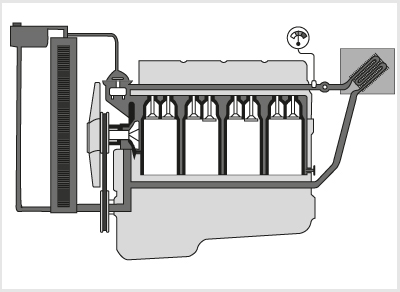
- 148. Milyen hűtőrendszer látható az ábrán? #704739
- Zárt rendszerű folyadékhűtésű.
- Nyitott rendszerű folyadékhűtésű.
- Ventilátoros léghűtés, folyadékos fűtőberendezéssel kiegészítve.
- 149. Mi a viszkokuplungos ventilátorhajtás működési elve? #704740
- A szerkezet a hűtőn átáramló levegő, vagy a hűtőfolyadék hőmérsékletének függvényében egy változtatható folyadéktöltésű tengelykapcsoló segítségével szabályozza a ventilátor fordulatszámát.
- A ventilátor meghajtása egy szabályozható működtetésű, száraz súrlódó tengelykapcsolón keresztül történik.
- A ventilátor meghajtása hidrodinamikus tengelykapcsolón keresztül történik, ezáltal növelhető a ventilátor hajtónyomatéka.
- 150. A korszerű tehergépjárművek motorjain... #704741
- A hosszú élettartamú mikrobordás szíjak feszességét automatikus, görgős feszítők állítják be, ezért csak az ékszíjak állapotát és a feszítőgörgők működését kell időnként ellenőrizni.
- Már nincsenek ékszíjhajtások, minden segédberendezést fogaskerekek hajtanak.
- Végtelen élettartamú, nyúlás nélküli ékszíjakat alkalmaznak, ezért ezek semmilyen ellenőrzést nem igényelnek.
- 151. Mi a léghűtés hátránya a folyadékhűtéssel szemben? #704958
- A motor zajosabb, és magasabb üzemi hőmérsékleten működik.
- Bonyolultabb a szerkezeti kialakítása.
- A motor később éri el az üzemi hőmérsékletét.
- 152. Milyen hűtőfolyadékkal tölthetők fel a korszerű motorok hűtőrendszerei? #704959
- Minden évszakban általában etilénglikol alapú bekevert hűtőfolyadékkal, vagy az előírt fagyáspontra beállított tömény hűtőfolyadék és desztillált vagy ioncserélt víz keverékével.
- Nyáron vízzel, télen fagyálló folyadékkal.
- Desztillált vagy ioncserélt vizzel.
- 153. Milyen problémát okozhat, ha a vízszivattyút, ventilátort, generátort stb. meghajtó ékszíjat az előírtnál jobban megfeszítik? #704960
- A megfeszített tengelyek és csapágyak, valamint az ékszíj idő előtt tönkremegy.
- Az ékszíj nem tudja megfelelően meghajtani a segédberendezéseket, mert csúszni fog.
- A szükségesnél magasabb fordulatszámon fognak forogni az ékszíj által meghajtott segédberendezések.
- 154. Hogyan szabályozza a termosztát a hűtőfolyadék hőmérsékletét? #714633
- Amíg a hűtőfolyadék hideg, addig a termosztát a hűtőtömbbe vezető csövet elzárja.
- Amíg a hűtőfolyadék hideg, addig a termosztát nem kapcsolja be a ventilátort.
- Ha a hűtőfolyadék meleg, akkor a termosztát magasabb fordulatszámra állítja a vízszivattyút.
- 155. A motor normál üzemi hőmérsékletén a hűtőfolyadék hőmérséklete... #714634
- 80-95 Celsius-fok.
- 60-70 Celsius-fok.
- 70-80 Celsius-fok.
- 156. Üzem közben hogyan lehet ellenőrizni a hűtőfolyadék hőmérsékletét? #714635
- A műszerfalon található hőfokmérő-műszerrel.
- A kiegyenlítő tartályban levő folyadék hőmérsékletének ellenőrzésével.
- A hűtőrendszerben levő termosztáttal.
Motorok kenése, kenőrendszer (1 db., 1 pont)
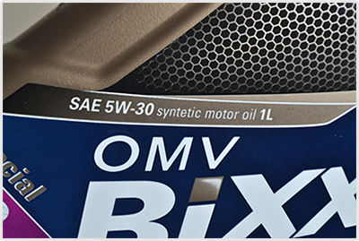
- 157. Egy motorolaj címkéjén a képen látható SAE 5W 30 jelölés a motorolaj... #704472
- viszkozitási indexe, melynek értéke ebben az esetben egy télen és nyáron egyaránt használható olajra utal.
- teljesítményszintjét jelöli és ebben az esetben egy kizárólag Otto-motorokban felhasználható olajra utal.
- teljesítményszintjét jelöli és ebben az esetben egy kizárólag dízelmotorokban felhasználható olajra utal.
- teljesítményszintjét jelöli és ebben az esetben egy nagy teljesítményű motorokban felhasználható olajra utal.
- 158. Milyen a négyütemű Otto-, illetve dízelmotor olajozási rendszere? #704537
- Minden esetben szivattyús olajozású, melyet részben szóró olajozással egészíthetnek ki.
- Szóró olajozású.
- Keverékolajozású.
- 159. A képen látható 1-es jelű alkatrész... #704587
- a motor kenőolajszintjének ellenőrzésére szolgáló szintjelző pálca.
- a motor vészleállítására szolgáló kapcsoló.
- a motor emelésére szolgáló gyűrű.

- 160. Milyen folyadék be-, illetve utántöltésére szolgál a képen látható 1-es jelű betöltő nyílás... #704591
- Motorolaj.
- AdBlue adalék.
- Hűtőfolyadék.
- ablakmosó-folyadék.
- 161. Mire figyelmeztet a képen a bekeretezett visszajelző lámpa? #704712
- A motorolaj rendellenesen alacsony nyomására.
- A motorolaj rendellenesen alacsony szintjére.
- Nem megfelelő tüzelőanyag tankolására.
- A tüzelőanyag szűrő befagyására.
- 162. Üzem közben általában mekkora a megfelelő olajnyomásérték a szivattyús kenési rendszerben? #704742
- 1-5 bar.
- 0,1-0,3 bar.
- 10-15 bar.
- 163. Mi a motorolajok két fő jellemzője, melyeket az utántöltésnél figyelembe kell venni? #704743
- A viszkozitási fokozat és a teljesítményszint.
- A sűrűség és a kéntartalom.
- A teljesítményszint és az ár.
- 164. Mi a gépjármű motorok kenőrendszerének feladata? #704961
- A súrlódási ellenállás és az alkatrészek kopásának csökkentése, hő elvezetése, a dugattyú és a hengerfal közötti tömítés javítása, valamint a szennyeződések elvezetése és kiszűrése.
- A szívó- és kipufogószelepek zárófelületeinek és szelepszárainak kenése, a folyadékhűtés által nem elérhető alkatrészek hűtése.
- A motor és a sebességváltó között található tengelykapcsoló tárcsái kopásának csökkentése és azok hűtése.
- 165. Mi az olaj útja a nyomóolajozású kenési rendszerben? #704962
- Olajteknő, olaj előszűrő, szivattyú, szűrő, olajfőcsatorna.
- Szivattyú, olajfőcsatorna, szűrő, olajteknő.
- Előszűrő, szűrő, olajfőcsatorna, szivattyú.
- 166. Hogyan lehet ellenőrizni szivattyús kenési rendszerű motornál a motorolaj nyomását? #714636
- A műszerfalon található olajnyomásmérő-műszerrel vagy az alacsony olajnyomásra figyelmeztető visszajelző lámpával.
- Csak szakszervizben lehet ellenőrizni, speciális mérőműszerrel.
- Mérőpálcával, amely lenyúlik a motor olajteknőjébe.
- 167. Szivattyús olajzású motor üzeme közben tudja-e a járművezető ellenőrizni az olajnyomást? #721201
- Igen, a fülkéből, a visszajelző lámpa vagy az olajnyomásmérő műszer segítségével.
- Igen, a szintjelző pálca szolgál erre a célra.
- Nem, erre csak megfelelő diagnosztikai műszer csatlakoztatása esetén van lehetőség.
- 168. Négyütemű Otto- és dízelmotornál milyen kenőrendszert alkalmaznak? #721202
- Kombinált szóró- és nyomóolajozásút.
- Keverékolajozásút.
- Keverék- és szóró olajozású kombinációját.
Elektromos rendszerek, akkumulátor, generátor, indítómotor, vezetékek, csatlakozók, biztosítékok (1 db., 1 pont)
- 169. Milyen szerepet tölt be a biztosíték az áramkörben? #704411
- Zárlat bekövetkezésekor megszakítja az áramkört, hogy az áramerősség ne haladhassa meg a megengedett értéket.
- Akkor szakítja meg az áramkört, ha a feszültség meghaladja a megengedett értéket.
- A generátor túltöltése esetén megszakítja az áramkört, ezzel védi a fogyasztókat.
- Rövidzárlat esetén tartalék áramkörre kapcsol.
- 170. Mi a gépjármű generátorának a feladata? #704495
- Igény szerint a fogyasztók közvetlen energiaellátása, illetve az akkumulátor töltése.
- A lemerült akkumulátor töltése.
- Bizonyos villamos fogyasztók közvetlen áramellátása.
- A tüzelőanyag-levegő keverék előállítása a motor részére.
- 171. Miért tilos a kiolvadt biztosítékot dróttal, szöggel vagy egyéb fémtárggyal kiváltani? #704534
- Mert zárlat esetén a vezetékek izzásba jöhetnek, és ezzel tüzet okozhatnak.
- Mert ebben az esetben a túlfeszültség miatt hamarabb kiégnek az izzólámpák, tönkremennek a fogyasztók.
- Mert ebben az esetben lemerülhet az akkumulátor.
- Mert így bizonyos fogyasztók működése rendellenessé válthat.

- 172. A képen látható 1-es jelű biztosíték színe és számfelirata... #704545
- arra az áramerősségre utal, amelynél az kiolvad.
- egyértelműen meghatározza, hogy az melyik áramkör biztosítására szolgál.
- arra a hálózati feszültségre utal, amelynél az alkalmazható.
- azt a járműtípust határozza meg, amelyben az használható.
- 173. A képen látható 1-es jelű biztosítékot szükség esetén vezetékdarabbal, dróttal helyettesíteni... #704546
- tilos.
- lehet.
- lehet, de csak a lehető legrövidebb időre.
- világítóberendezéseket tápláló áramkörök kivételével lehet.
- 174. A képen látható 1-es jelű alkatrész... #704547
- egy olvadó biztosíték, amely a gépjármű egy bizonyos áramkörét védi a túlterheléstől.
- egy ellenőrző lámpát tartalmazó kapcsoló, amellyel a gépjármű egy bizonyos áramkörét lehet tesztelni.
- egy járműdiagnosztikai célokra használt ellenőrző lámpa.

- 175. A képen... #704549
- két, egymással sorba kapcsolt 12 V-os akkumulátor látható.
- két, egymással párhuzamosan kapcsolt 12 V-os akkumulátor látható.
- egy 24 V-os akkumulátor látható.
- egy 12 V-os akkumulátor látható.
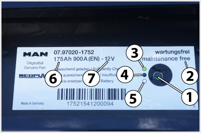
- 176. A képen látható akkumulátor adattábláján a 2-es jelű feliratok és az 1-es jelű ’varázsszem’ arra utalnak, hogy... #704581
- az gondozásmentes.
- az rendszeres karbantartást, szükség esetén utántöltést igényel.
- az utántöltést csak akkor igényel, ha a ’varázsszem’ színe zöldről fehérre vált.
- az utántöltést csak akkor igényel, ha a ’varázsszem’ színe zöldről feketére vált.

- 177. A képen látható 1-es jelű alkatrész... #704602
- a generátor.
- az önindító.
- az ablaktörlő motor.
- a vízszivattyú.
- 178. Mire figyelmeztet a képen a bekeretezett visszajelző lámpa? #704711
- Az izzítógyertyák, vagy a lángindító működésére, vagy annak hibájára.
- A generátor hibájára.
- Valamelyik izzó kiégésére.
- 179. Milyen kialakítású a gépjárművek villamos hálózata? #704767
- Egyvezetékes rendszerű, amelyben az akkumulátor negatív pólusát kötik össze a jármű fém vázszerkezetével.
- Egyvezetékes rendszerű, amelyben az akkumulátor pozitív pólusát kötik össze a jármű fém vázszerkezetével.
- Kétvezetékes, ahol minden fogyasztóhoz egy pozitív és egy negatív vezeték van bekötve.
- 180. Mi a biztosíték feladata a jármű villamos hálózatában? #704768
- Rövidzárlat esetén a biztosíték megszakítja az áramkört.
- Rövidzárlat esetén lecsökkenti a fogyasztóra jutó áramerősség nagyságát.
- Egy villamos berendezés meghibásodása esetén hibajelet küld a vezérlőegységnek.
- Rövidzárlat esetén tartalék áramkörre kapcsol.
- 181. Hogyan állítják elő a nehéz haszongépjárművek elektromos rendszerében szokásos 24 V-os fedélzeti feszültséget? #704769
- Két 12 V feszültségű akkumulátor sorba kapcsolásával.
- Két 12 V feszültségű akkumulátor párhuzamos kapcsolásával.
- Egy 24 V feszültségű akkumulátorral.
- Négy 6 V feszültségű akkumulátor sorba kapcsolásával.
- 182. Milyen indítómotort alkalmaznak leggyakrabban a nehéz haszongépjárművek dízelmotorjának beindításához? #704770
- Leggyakrabban 24 V feszültségű csúszóarmatúrás indítómotort alkalmaznak.
- Leggyakrabban 12 V feszültségű csúszófogaskerekes indítómotort alkalmaznak.
- Leggyakrabban hidromotoros indítóberendezést alkalmaznak.
- 183. A képen látható akkumulátor adattábláján a 7-es jelű 12 V felirat... #714510
- az akkumulátor névleges feszültségét jelzi.
- a megengedhető töltőáram nagyságát jelzi.
- az akkumulátor celláinak számát jelenti.
- 184. Az akkumulátor kivezető pólusai... #714511
- közül a pozitív a nagyobb átmérőjű.
- azonos átmérőjűek.
- közül a negatív a nagyobb átmérőjű.
- közül a testelést megvalósító a nagyobb átmérőjű.
- 185. Mi a feladata a nehéz haszongépjárműveken alkalmazott akkumulátor-főkapcsolónak? #714512
- A jármű áramtalanítása akkor, ha azt hosszabb ideig nem használjuk.
- A bekapcsolásával hozzuk működésbe az izzógyertyát.
- Leválasztja a nagyobb fogyasztókat a jármű elektromos rendszeréről.
- Kíméli az akkumulátort, mert ha működtetik, akkor a fogyasztókat csak a gépjármű generátora látja el árammal.
- 186. Járó motor esetén megengedett-e az akkumulátor főkapcsolójának kikapcsolása? #714538
- Nem.
- Igen.
- 187. Amikor két darab - egymással folyamatosan sorba kapcsolt - 12 V feszültségű akkumulátor van a járművön, akkor... #714539
- valamennyi fogyasztó, illetve a generátor is 24 V feszültségű.
- valamennyi fogyasztó, illetve a generátor is 12 V feszültségű.
- valamennyi fogyasztó 12 V, a generátor pedig 24 V feszültségű.
- valamennyi fogyasztó, illetve a generátor is 6 V feszültségű.
- 188. A képen látható... #714540
- 1-es jelű alkatrész egy biztosíték, a 2-es jelű alkatrész egy relé.
- 1-es jelű alkatrész egy relé, a 2-es jelű alkatrész egy biztosíték.
- 189. A képen látható 1-es jelű alkatrész... #714595
- a generátor.
- az önindító.
- a vízszivattyú.
- az örvényáramú tartósfék.
- 190. Mi a generátor feladata? #714596
- Az akkumulátor töltése és a villamos fogyasztók árammal való ellátása.
- A motor álló helyzetében a villamos fogyasztók árammal való ellátása.
- Az Otto-motor gyújtóberendezésében a nagyfeszültség előállítása.
- A villamos fogyasztók árammal történő ellátása, ha az akkumulátor lemerült, vagy kiszerelték a gépjárműből.
- 191. A képen látható akkumulátorok által megvalósított hálózati feszültség... #721099
- 24 V.
- 12 V.
- 6 V.
- 220 V.
- 192. A képen látható akkumulátor adattábláján a 6-os jelű 175 Ah felirat... #721100
- az akkumulátor kapacitását jelzi.
- a megengedhető töltőáram nagyságát jelzi.
- az akkumulátor töltési idejét jelzi.
- 193. Mi történik akkor, ha a generátor vezetéke vagy az akkumulátor saruja meglazul járó motor esetén? #721108
- Kedvezőtlen esetben akár a generátor is meghibásodhat.
- Ez nem befolyásolja a jármű elektromos rendszereinek működését.
- 194. A képen látható 3-as jelű alkatrész... #721163
- egy ékszíjfeszítő görgő.
- a motor forgattyús tengelyére szerelt ékszíjtárcsa, amely a generátort és más segédberendezéseket hajtja.
- a generátor ékszíjtárcsája.
- 195. A képen látható 2-es jelű alkatrész... #721164
- a generátort meghajtó ékszíj.
- az önindító által meghajtott ékszíj.
- az olajszivattyút hajtó ékszíj.
- a vezérműtengelyt meghajtó ékszíj.
- 196. Amikor a dízelmotoros tehergépjármű elektromos hálózata 24 V feszültségű, akkor ezt a feszültséget... #721176
- két - egymással sorba kapcsolt - 12 V feszültségű akkumulátor biztosítja.
- egy darab indítóakkumulátor biztosítja, amelynek névleges feszültsége 24 V.
- két - egymással párhuzamosan kapcsolt - 12 V feszültségű akkumulátor biztosítja.
- egy 12 V feszültségű akkumulátor és egy transzformátor biztosítja.
- 197. A képen látható 3-as jelű vezeték... #724160
- a két 12 V-os akkumulátor sorba kapcsolására szolgál.
- az akkumulátorok közös testvezetéke.
- az önindító áramellátásáról gondoskodik.
- a generátorhoz vezet.
Világító- és jelzőberendezések (1 db., 1 pont)
- 198. Melyik a tompított, illetve a távolsági fényszóró a képen? #704423
- A 2-es jelű a tompított, az 1-es pedig a távolsági fényszóró.
- Az 1-es jelű a tompított, a 2-es pedig a távolsági fényszóró.
- 199. Megfelelő működés esetén az irányjelző percenkénti felvillanásainak száma... #704451
- 60-120.
- 30-60.
- 120-150.
- 15-20.
- 200. Gépkocsijának vagy vontatmányának féklámpái meghibásodtak. Részt vehet-e így a közúti forgalomban? #704466
- Nem.
- Igen, de a hibát minél előbb ki kell javíttatnia.
- 201. Az aszimmetrikus kialakítású tompított fényszóró... #704501
- az út bal oldalát kisebb távolságban világítja meg, mint az úttest jobb szélét.
- az út bal oldalát nagyobb távolságban világítja meg, mint az úttest jobb szélét.
- kialakítása különböző a jármű jobb és bal oldalán.
- 202. A képen látható 1-es jelű bekanyarodási lámpa feladata, hogy... #704551
- a bekanyarodó jármű vezetője számára a kanyarodás irányában megnövelje a bevilágított területet.
- a közlekedés többi résztvevője számára jelezze a járművezető kanyarodási, irányváltoztatási szándékát.
- helyettesítse az irányjelző lámpát, ha az elromlott.
- 203. A képen látható 1-es jelű világítótest... #704552
- a nappali menetjelző lámpa.
- a tompított fényszóró.
- a távolsági fényszóró.
- az első ködlámpa.
- 204. A képen látható nyergesvontató hátsó lámpatestjeiben a 2-es jelű lámpa... #704554
- az irányjelző.
- a féklámpa.
- a helyzetjelző.
- 205. A képen látható nyergesvontató hátsó lámpatestjeiben a 3-as jelű lámpa... #704555
- a féklámpa.
- az irányjelző.
- a hátrameneti lámpa.
- 206. A képen látható nyergesvontató hátsó lámpatestjeiben a 4-es jelű lámpa... #704556
- a hátrameneti lámpa.
- a munkahely-megvilágító lámpa.
- a helyzetjelző.
- 207. A képen látható nyergesvontató hátsó lámpatestjeiben az 1-es jelű lámpák... #704557
- a helyzetjelzők.
- az irányjelzők.
- a hátsó helyzetjelző ködlámpák.
- 208. Milyen funkciója van a képen látható, folyamatosan világító, 2-es jelű világítótestnek? #704558
- Oldalsó helyzetjelző.
- Munkahely megvilágító lámpa.
- Oldalsó irányjelző.
- 209. Mire szolgál a képen látható 2-es jelű kezelőelem forgatógombja? #704575
- A tompított fényszóró magasságát állítja, ezzel a jármű különböző terhelési állapotaiban elkerülhető a szembejövő járművek vezetőinek vakítása.
- A tompított fényszóró fényerejének megváltoztatására, így alkalmazkodni lehet a különböző látási viszonyokhoz.
- A műszerfal megvilágításának fényerejét változtatja.
- 210. A képen látható 1-es jelű visszajelző lámpa... #704701
- a ködfényszóró bekapcsolt állapotát jelzi.
- a tompított fényszóró bekapcsolt állapotát jelzi.
- a hátsó helyezetjelző ködlámpa bekapcsolt állapotát jelzi.
- a távolsági fényszóró bekapcsolt állapotát jelzi.
- 211. A képen látható 2-es jelű visszajelző lámpa... #704702
- a tompított fényszóró bekapcsolt állapotát jelzi.
- a ködfényszóró bekapcsolt állapotát jelzi.
- a hátsó helyezetjelző ködlámpa bekapcsolt állapotát jelzi.
- a távolsági fényszóró bekapcsolt állapotát jelzi.
- 212. A képen látható 3-as jelű visszajelző lámpa... #704703
- a hátsó helyezetjelző ködlámpa bekapcsolt állapotát jelzi.
- a ködfényszóró bekapcsolt állapotát jelzi.
- a tompított fényszóró bekapcsolt állapotát jelzi.
- a távolsági fényszóró bekapcsolt állapotát jelzi.
- 213. A képen látható 7-es jelű visszajelző lámpák a jobb és baloldali... #704704
- irányjelzők működését mutatják.
- helyzetjelzők működését mutatják.
- tompított fényszórók működését mutatják.
- távolsági fényszórók működését mutatják.
- 214. Mire figyelmeztet a képen a bekeretezett visszajelző lámpa? #704714
- a távolsági fényszóró bekapcsolt állapotát jelzi.
- a tompított fényszóró bekapcsolt állapotát jelzi.
- a ködfényszóró bekapcsolt állapotát jelzi.
- a hátsó helyezetjelző ködlámpa bekapcsolt állapotát jelzi.
- 215. Milyen alakú hátsó fényvisszaverőket kell alkalmazni a pótkocsikon? #714680
- Háromszög alakút.
- Négyszög alakút.
- Hatszög alakút.
- Kör alakút.
- 216. A hátsó helyzetjelző ködlámpa által kibocsátott fény... #714687
- piros, visszajelző lámpájának fénye pedig sárga.
- piros, visszajelző lámpájának fénye pedig zöld.
- borostyánsárga, visszajelző lámpájának fénye pedig piros.
- borostyánsárga, visszajelző lámpájának fénye pedig sárga.
- 217. Milyen színű fénnyel jelzi a távolsági fényszórók működését a visszajelző lámpa? #714688
- Kék.
- Piros.
- Borostyánsárga.
- 218. Milyen színű lehet kizárólag a jármű hátrameneti (tolató) lámpáinak fénye? #714689
- Színtelen (fehér).
- Piros.
- Kadmiumsárga.
- Borostyánsárga vagy fehér.
- 219. Beszerelhet-e eltérő színű fényt kibocsátó izzókat a gépjármű fényszóróiba? #714690
- Nem.
- Igen, ha az izzókészletében csak ilyet talál.
- 220. A képen látható 1-es jelű bekanyarodási lámpa - a tompított fényszórók bekapcsolását követően - akkor világíthat, ha... #714691
- a jármű vezetője az irányjelzőt bekapcsolja, vagy a kormánykereket az egyenesmeneti állásból kitéríti és a jármű sebessége nem haladja meg a 40 km/h-t.
- azt a jármű vezetője bekapcsolja és a jármű sebessége nem haladja meg a 40 km/h-t.
- a jármű vezetője az irányjelzőt bekapcsolja és a kormánykereket az egyenesmeneti állásból kitéríti.

- 221. A képen látható 1-es jelű világításkapcsolóval a kép szerinti helyzetben... #714692
- a helyzetjelző lámpákat, a tompított fényszórót, az első ködfényszórót és a hátsó helyzetjelző ködlámpát is bekapcsolták.
- a helyzetjelző lámpákat, az első ködfényszórót és a hátsó helyzetjelző ködlámpát kapcsolták be.
- az első ködfényszórót és a hátsó helyzetjelző ködlámpát kapcsolták be.
- 222. A képen látható 6-os jelű visszajelző lámpa... #714693
- a hátsó helyzetjelző ködlámpa bekapcsolt állapotát jelzi.
- a ködfényszóró bekapcsolt állapotát jelzi.
- a tompított fényszóró bekapcsolt állapotát jelzi.
- a pótkocsi helyzetjelő lámpáinak bekapcsolt állapotát jelzi.
- 223. A képen látható 5-ös jelű visszajelző lámpa... #714694
- a ködfényszóró bekapcsolt állapotát jelzi.
- a hátsó helyzetjelző ködlámpa bekapcsolt állapotát jelzi.
- a tompított fényszóró bekapcsolt állapotát jelzi.
- 224. A képen látható hátsó lámpatestben a 2-es jelű lámpa... #714695
- az irányjelző.
- a féklámpa.
- a helyzetjelző.
- 225. A képen látható hátsó lámpatestben a 4-es jelű lámpa... #714696
- a hátrameneti lámpa.
- a munkahelymegvilágító lámpa.
- a helyzetjelző.
- 226. A képen látható 1-es jelű alkatrész... #714697
- egy első méretjelző lámpa.
- egy első kiegészítő irányjelző lámpa.
- egy első helyzetjelző lámpa.
- 227. Mit tapasztal, ha a képen látható 1-es jelű világításkapcsoló állásban elforgatja a 2-es jelű kezelőelem forgatógombját? #714698
- A tompított fényszóró magasságát állítja, ezzel változik a bevilágított útszakasz hosszúsága.
- A tompított fényszóró fényerejét változtatja.
- A műszerfal megvilágításának fényerejét változtatja.
- 228. A képen látható 1-es jelű világítótestek... #714699
- munkahelymegvilágító lámpák.
- hátrameneti lámpák.
- tompított fényszórók.
- 229. A tompított fényszórónak... #714700
- aszimmetrikus kivitelűnek kell lennie.
- szimmetrikus kivitelűnek kell lennie.
- szimmetrikus, a távolsági fényszórónak aszimmetrikus kivetelűnek kell lennie.
- 230. Az irányjelző lámpák visszajelző lámpája... #714701
- a bekapcsolt állapotot és a berendezés hibáját (izzólámpa kiégése) egyaránt jelzi, színe zöld.
- a bekapcsolt állapotot és a berendezés hibáját (izzólámpa kiégése) egyaránt jelzi, színe piros.
- a berendezés hibáját (izzólámpa kiégése) jelzi, színe piros.
- 231. Oldalsó fényvisszaverőt és helyzetjelzőt... #714702
- a 6 m-nél hosszabb járművekre kötelező felszerelni.
- minden járműre kötelező felszerelni.
- minden járműre fel lehet szerelni.
- 232. A gépjárműre felszerelt hangjelző berendezés hangjának... #714703
- folyamatos, egyenletes hangmagasságúnak és erősségűnek kell lennie.
- folyamatosan növekvő erősségűnek kell lennie.
- változó hangmagasságúnak és erősségűnek kell lennie.
- 233. Tiszta időben, éjjel milyen távolságra kell a távolsági fényszórónak megvilágítania az úttest felületét? #721237
- Legalább 100 m-es távolságra.
- Legalább 200 m-es távolságra.
- Legalább 40 m-es távolságra.
- 234. Hány ködfényszóró szerelhető fel a gépkocsi elejére? #721238
- Kettő.
- Kettő esetleg négy darab.
- Bármennyi, csak páros számú legyen.
- Kettő vagy három.
- 235. Fel kell-e szerelni a járműveket első és hátsó fényvisszaverővel? #721239
- Hátul minden esetben kötelező, elöl a pótkocsikon kötelező.
- Igen, elöl és hátul is kötelező.
- Lehet, de nem kötelező.
- Elöl minden esetben kötelező, hátul csak a pótkocsikon kötelező.
- 236. Milyen színű a gépkocsi hátsó helyzetjelző ködlámpájának működését jelző lámpa fénye a műszerfalon? #721240
- Borostyánsárga.
- Vörös.
- Kék.
- Zöld.
- 237. Tiszta időben, éjjel milyen távolságra kell a tompított fényszórónak megvilágítania az úttest felületét anélkül, hogy a szemben közlekedő jármű vezetőjét elvakítaná? #721242
- Legalább 40 méter távolságra.
- Legalább 200 m-re.
- Legalább 100 m-re.

- 238. A gépjármű fényszórója elé helyezett papírlapon az aszimmetrikus tompított fényszóró világítási képét ellenőrzi. Melyik a megfelelő átvilágítási kép? #721243
- Az 1-es változat.
- A 2-es változat.
- A 3-as változat.
- 239. A képen látható 1-es jelű világítótest a kormánykerék elfordításának, vagy az irányjelző bekapcsolásának hatására kigyulladó... #721245
- bekanyarodási lámpa.
- tompított fényszóró.
- nappali menetjelző lámpa.
- távolsági fényszóró.
- 240. A képen látható 1-es jelű bekanyarodási lámpa kanyarodás esetén sem világít, ha nincs bekapcsolva a gépjármű... #721246
- tompított, vagy távolsági fényszórója.
- helyzetjelzője.
- ködfényszórója.
- 241. A képen látható nyergesvontató hátsó lámpatestjeiben az 5-ös jelű lámpa... #721247
- a hátsó helyzetjelző ködlámpa.
- az irányjelző.
- a hátrameneti lámpa.
- 242. A képen látható hátsó lámpatestben az 1-es jelű lámpák... #721248
- a helyzetjelzők.
- az irányjelzők.
- a hátrameneti lámpák.
- 243. A képen látható első lámpatestben a 2-es jelű lámpa... #721249
- a helyzetjelző.
- a távolsági fényszóró.
- a tompított fényszóró.

- 244. A világításkapcsoló képen látható állásában... #721250
- a helyzetjelző lámpák vannak bekapcsolva.
- a tompított fényszóró van bekapcsolva.
- a távolsági fényszóró van bekapcsolva.
- 245. A képen látható 7-es jelű kezelőelem... #721251
- a tompított fényszóró magasságállítását végzi.
- a műszerfal megvilágításának erősségét szabályozza.
- a ködfényszóró fényerejét szabályozza.
- a tompított fényszóró fényerejét szabályozza.
- 246. Milyen járműveken kötelező felszerelés a képen látható 1-es jelű méretjelző lámpa? #721252
- Melyeknek szélessége meghaladja a 2,1 métert.
- Minden járművön.
- Minden tehergépkocsin.
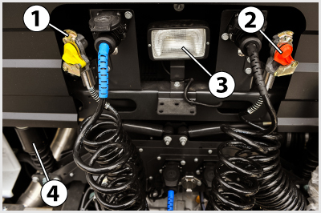
- 247. A kép egy nyergesvontató fülkéjének hátfalát és annak környezetét mutatja. A 3-as jelű alkatrész... #721254
- egy munkahely-megvilágító lámpa.
- a hátrameneti lámpa.
- a hátsó helyzetjelző ködlámpa.
- 248. A képen látható 1-es jelű világítótest... #721255
- a tompított fényszóró.
- a távolsági fényszóró.
- a ködfényszóró.
- 249. A képen látható 2-es jelű világítótest... #721256
- a távolsági fényszóró.
- a tompított fényszóró.
- a ködfényszóró.
- a bekanyarodási lámpa.
- 250. Az első és hátsó méretjelző lámpa... #721258
- a 2,1 m-nél szélesebb járműveken kötelező.
- a 2,1 m-nél szélesebb járműveken felszerelhető.
- bármilyen járműre felszerelhető.
- 251. Milyen színű lehet a hátsó helyzetjelző lámpák fénye? #724232
- Piros.
- Kadmiumsárga.
- Fehér.
- Borostyánsárga.
- 252. Milyen színű fényt bocsáthat ki a gépkocsi belső világítása? #724233
- Kadmiumsárgát vagy színtelent (fehéret).
- Borostyánsárgát.
- Sárga kivételével bármilyet.
- 253. Milyen színű fényt bocsáthatnak ki a járművek féklámpái? #724234
- Kizárólag piros.
- Fehér vagy kadmiumsárga.
- Borostyánsárga.
- Borostyánsárga vagy piros.
- 254. A képen látható 3-as jelű világítótest... #724235
- az első ködlámpa.
- a távolsági fényszóró.
- a tompított fényszóró.
- a bekanyarodási lámpa.
- 255. A képen látható 2-es jelű világítótest... #724236
- a tompított fényszóró.
- a bekanyarodási lámpa.
- a nappali menetjelző lámpa.
- az első ködlámpa.
- 256. A képen látható hátsó lámpatestben a 3-as jelű lámpa... #724237
- a féklámpa.
- az irányjelző.
- a hátrameneti lámpa.
- 257. A képen látható hátsó lámpatestben az 5-ös jelű lámpa... #724238
- a hátsó helyzetjelző ködlámpa.
- az irányjelző.
- a hátrameneti lámpa.
- 258. A képen látható 1-es jelű oldalsó fényvisszaverő... #724239
- a 6 m-nél hosszabb gépjárműveken kötelező felszerelés.
- minden gépjárművön kötelező felszerelés.
- minden gépjárművön választható felszerelés.
- 259. A képen látható 2-es jelű oldalsó helyzetjelző lámpa... #724240
- a 6 m-nél hosszabb gépjárműveken kötelező felszerelés.
- minden gépjárművön kötelező felszerelés.
- minden gépjárművön választható felszerelés.
- 260. A képen látható első lámpatestben az 1-es jelű lámpa... #724241
- a tompított fényszóró.
- a helyzetjelző.
- a ködfényszóró.
- 261. Lehet-e a képen látható, 7-es jelű fényszóró magasságállítással felszerelt jármű tompított fényszórójaként Xenon-lámpát alkalmazni? #724242
- Nem, mert a szembejövők vakításának elkerülése érdekében ilyen esetben a fényszórót automatikus magasságállítással kell felszerelni.
- Igen, mert a szembejövők vakításának elkerülése érdekében ilyen esetben mindig kell kézi magasságállítást alkalmazni.
- 262. Milyen színű fényt bocsáthat ki a távolsági fényszóró? #724245
- Színtelen (fehér) vagy kadmiumsárga fényt.
- Csak színtelen (fehér) fényt.
- Borostyánsárga fényt.
- 263. Milyen színű fényt bocsáthatnak ki a gépkocsira szerelt helyzetjelző lámpák? #724246
- Az első helyzetjelző lámpa csak színtelen (fehér) vagy kadmiumsárga, a hátsó helyzetjelző lámpa csak piros fényt bocsáthat ki.
- Az első helyzetjelző lámpa csak borostyánsárga, a hátsó helyzetjelző lámpa csak piros fényt bocsáthat ki.
- Az első- és a hátsó helyzetjelző lámpák csak színtelen (fehér) vagy kadmiumsárga fényt bocsáthatnak ki.
- 264. Milyen színű fényt bocsáthat ki a gépkocsira szerelt hátrameneti lámpa? #724247
- Csak színtelen (fehér) fényt bocsáthat ki.
- Színtelen (fehér) vagy kadmiumsárga fényt bocsáthat ki.
- Csak borostyánsárga fényt bocsáthat ki.
- 265. Az irányjelző lámpa... #724248
- csak borostyánsárga fényt bocsáthat ki.
- elöl borostyánsárga, hátul piros fényt bocsáthat ki.
- csak kadmiumsárga fényt bocsáthat ki.
- 266. Milyen színű lehet a távolsági fényszórók bekapcsolt állapotát visszajelző lámpa? #724249
- Csak kék színű lehet.
- Zöld vagy kék színű lehet.
- Csak borostyánsárga lehet.
Erőátviteli rendszer, tengelykapcsoló, sebességváltó (1 db., 1 pont)
- 267. Szükséges-e - automatikus utánállítás nélküli rendszer esetén - a tengelykapcsoló holtjátékát ellenőrizni? #704416
- Igen, mivel a holtjáték a betétek kopásával folyamatosan csökken.
- Igen, mivel a holtjáték a betétek kopásával folyamatosan nő.
- Nem, mert a holtjáték csak kis mértékben változik.
- 268. Amennyiben a tengelykapcsoló csúszik, ... #704437
- menet közben - nagyobb gázadásnál - a motor felpörög, a jármű viszont nem gyorsul.
- a sebességfokozatok kapcsolása csak nehezebben és zajosan végezhető el.
- a motor gyakran lefullad.
- a jármű jobban gyorsul, de megnő a tüzelőanyag fogyasztása.
- 269. Amennyiben a tengelykapcsolónak túl nagy a holtjátéka, a kapcsolat a motor és a sebességváltómű között... #704438
- nem oldható teljesen, a sebességváltás recsegéssel jár.
- nem megfelelő, a tengelykapcsoló ilyenkor folyamatosan csúszik.
- megfelelő, de a tengelykapcsoló működtetése kényelmetlenné válik.
- 270. Mi a tengelykapcsoló szerepe a gépjármű erőátviteli rendszerében? #704455
- Oldható kapcsolatot hoz létre a jármű motorja és a sebességváltó között.
- Oldható kapcsolatot valósít meg a sebességvátó és a differenciálmű között.
- Lehetővé teszi a kétoldali hajtott kerekek különböző fordulatszámú forgását kanyarmenet esetén.
- Lehetővé teszi a motor segédberendezések hajtásának átmeneti lekapcsolását.

- 271. Mi az erőátviteli berendezés főbb elemeinek kapcsolódási sorrendje az ábra alapján a motortól a hajtott kerekek felé haladva? #704456
- Tengelykapcsoló - sebességváltó - kardántengely - differenciálmű.
- Differenciálmű - sebességváltó - kardántengely - tengelykapcsoló.
- Tengelykapcsoló - kardántengely - differenciálmű - sebességváltó.
- Differenciálmű - tengelykapcsoló - sebességváltó - kardántengely.
- 272. A fokozatosan kopó súrlódóbetétek miatt a tengelykapcsoló holtjátéka a használattal... #704474
- egyre csökken.
- nő.
- változatlan marad.
- 273. Mi az osztómű szerepe a gépjárművek erőátviteli rendszerében? #704497
- Összkerékhajtás esetén megosztja a hajtást a mellső és hátsó tengelyek között.
- A sebességváltó igénybevételét csökkenti.
- Szétosztja a hajtást a jobb és bal oldali kerekek között.
- Ha csak kisebb teljesítményre van szüksgég, akkor lekapcsolja a belsőégésű motor bizonyos hengereit.
- 274. A képen látható 1-es jelű forgatógomb... #704574
- egy automata sebességváltó vezérlőgombja.
- egy gépjármű világításkapcsolója.
- egy tehergépkocsi fülkebillentő szerkezetének a vezérlőgombja.
- 275. A képen látható 2-es jelű alkatrész... #704592
- a tengelykapcsoló hidraulikus működtető rendszerének folyadéktartálya.
- az AdBlue adalék tartálya.
- az ablakmosó-folyadék tartálya.
- 276. A képen látható 1-es jelű váltókarral és az azon található 2-es és 3-as jelű kapcsolókkal beállítható előremeneti fokozatok száma... #704594
- 16.
- 8.
- 4.
- 277. A képen látható 1-es jelű váltókar és az azon található 2-es és 3-as jelű kapcsolók egy... #704595
- 4x2x2 fokozatú szorzóváltó fokozatainak kapcsolására szolgálnak.
- 2x2x2 fokozatú szorzóváltó fokozatainak kapcsolására szolgálnak.
- 4x4x2 fokozatú szorzóváltó fokozatainak kapcsolására szolgálnak.
- 278. A képen látható 1-es jelű forgatógomb... #704618
- egy automata sebességváltó vezérlőgombja.
- egy gépjármű világításkapcsolója.
- egy retartder (lassítófék) vezérlőgombja.
- egy fényszóró magasságállító vezérlőgombja.
- 279. A képen látható automata váltó vezérlőgomb 3-as jelű N helyzetében a váltó... #704619
- üres állásban van.
- előremeneti automata állásban van.
- hátrameneti állásban van.
- 280. A képen látható automata váltó vezérlőgomb 2-es jelű R helyzetében a váltó... #704620
- hátrameneti állásban van.
- üres állásban van.
- előremeneti automata állásban van.
- 281. A képen látható automata váltó vezérlőgomb 4-es jelű D helyzetében a váltó... #704621
- előremeneti automata állásban van.
- üres állásban van.
- hátrameneti állásban van.
- 282. Miért célszerű hegyvidéki utakon haladva az automata váltó vezérlőgombot 5, 6 és 7-es jelű D3, D2, D1 helyzetek valamelyikébe állítani? #704622
- Mert ezekben az állásokban emelkedőn elkerülhető a szükségtelen fel-le kapcsolás, lejtőn pedig nagyobb motorfékhatás érhető el.
- Mert ezekben az állásokban nagyobb teljesítményt ad le a motor.
- Mert ezekben az állásokban erőteljesebben működik az üzemi fék.
- 283. A képen látható kardántengely feladata... #704639
- a nyomaték továbbítása a sebességváltótól a hajtott híd felé, nyomatékingadozás nélkül lehetővé téve a hajtott híd rugózásból adódó mozgását.
- a nyomaték növelése annak toábbításakor a sebességváltótól a hajtott híd felé.
- a nyomaték elosztása a két oldali hajtott kerekek között, lehetővé téve azok fordulatszámának különbségét is (pl. kanyarodáskor).
- 284. Mi a sebességváltó feladata? #704771
- A motor forgatónyomatékának módosítása, hátramenet biztosítása és a kerekek tartós függetlenítése a motortól.
- A motor fordulatszámának módosítása a menetellenállások megváltozásának arányában.
- Csúszós úton a kerekek kipörgésének megakadályozása és a hátramenet biztosítása.
- Az ütközés veszélyének felismerése esetén a jármű sebességének gyors csökkentése.
- 285. A képen látható 1-es és 2-es jelű tehergépkocsi hátsó futóművek közül melyik a hajtott? #714588
- Az 1-es jelű.
- A 2-es jelű.
- Mindkettő.
- Egyik sem.
- 286. Mi a tengelykapcsoló feladata? #714589
- Lehetővé teszi a motor és a sebességváltó átmeneti szétválasztását menet közben és álló helyzetben.
- Lehetővé teszi a kardántengely és a differenciálmű összekapcsolását.
- Lehetővé teszi a sebességváltó és a kardántengely átmeneti szélválasztását menet közben és álló helyzetben.
- Lehetővé teszi a motor segédberendezések hajtásának átmeneti lekapcsolását.
- 287. Miként lehet a motor forgatónyomatékát a mechanikus, kézi kapcsolású sebességváltóműben módosítani? #714648
- Eltérő mértékű áttételt biztosító fogaskerékpárokkal.
- Változtatható áttételű ékszíjhajtással.
- Különbözőképpen összekapcsolható bolygóművekkel.
- Változtatható áttételű lánchajtással.
- 288. A képen látható automata váltó vezérlőgomb 3-as jelű helyzetébe kapcsolva... #714649
- előremeneti automata állásban van.
- üres állásban van.
- hátrameneti állásban van.
- 289. Amennyiben a tengelykapcsoló nem emel ki, ... #714664
- a sebességfokozatok kapcsolása csak nehezebben és zajosan végezhető el.
- menet közben - nagyobb gázadásnál - a motor felpörög, a jármű viszont nem gyorsul.
- a motor gyakran lefullad.
- 290. Egy orrmotoros, hátsókerékhajtású járműnél milyen sorrendben követik egymást az erőátviteli rendszer elemei a motortól indulva? #721160
- Tengelykapcsoló, sebességváltó, kardántengely, differenciálmű, féltengelyek, kerekek.
- Tengelykapcsoló, féltengely, sebességváltó, kardántengely, kerekek.
- Sebességváltó, tengelykapcsoló, kardántengely, differenciálmű, kerekek.
- Tengelykapcsoló, kardántengely, sebességváltó, differenciálmű, féltengelyek, kerekek.
- 291. A képen látható 1-es jelű automata váltó vezérlőgomb... #721210
- üres állásban van.
- előremeneti automata állásban van.
- hátrameneti állásban van.
- 292. Hogyan kétszerezi meg az előtétváltóval szerelt sebességváltó a fokozatok számát? #721211
- Megfelezi az adott sebességfokozatok közötti lépcsőt.
- Létrehoz egy országúti és egy terepfokozatot.
- A sebességváltó után beiktat egy további lassító áttételt.
- 293. Amikor a tengelykapcsolónak egyáltalán nincs holtjátéka, akkor a kapcsolat a motor és a sebességváltómű között... #721224
- nem megfelelő, a tengelykapcsoló megcsúszik.
- nem oldható teljesen, a sebességváltás recsegéssel jár.
- megfelelő, mert így lehetséges a motor nyomatékának továbbítása a sebességváltó felé.
- 294. Hogyan változik a tengelykapcsoló holtjátéka a súrlódó tárcsa kopásának következtében (ha a működtető rendszer nincs felszerelve automatikus utánállítással)? #724194
- A pedálon mérhető holtjáték csökken.
- A pedálon mérhető holtjáték nő.
- A pedálon mérhető holtjáték nem változik.
- 295. Egy gépjármű erőátviteli rendszerében hol található a féltengely? #724195
- A differenciálmű és a hajtott kerék között.
- A sebességváltó és a differenciálmű között.
- A motor és a sebességváltó között.
- A sebességváltóban.
- 296. Állandó összkerékhajtású gépjárműveknél hogyan akadályozzák meg az erőátviteli láncban a tengelyek közötti esetleges fordulatszám-különbségből adódó befeszülést? #724196
- Az osztóműbe épített központi differenciálművel.
- Azonos méretű gumiabroncsok alkalmazásával.
- Differenciálzárak alkalmazásával.
- 297. Haszongépjárműveken mi a kéttárcsás száraz súrlódású tengelykapcsoló alkalmazásának a célja? #724227
- A négy súrlódó felület miatt nagyobb nyomaték átvitelére alkalmas és kisebb működtető erőt igényel.
- Ha az egyik tárcsa meghibásodik, a másik is képes a teljes nyomaték átvitelére.
- Kisebb a meghibásodás lehetősége.
Kardántengely, differenciálmű, osztómű, differenciálzárak (1 db., 1 pont)
- 298. Többnyire mikor lehet a gépjármű differenciálzárját bekapcsolni? (Ha a járművet azzal felszerelték.) #704419
- Ha a jármű áll, és hajtott kerekei nem forognak.
- Menet közben bármikor, csak a tengelykapcsolót kell kinyomni.
- Ha a jármű lassú, egyenletes sebességgel halad.
- 299. Kizárólag milyen útviszonyok mellett kapcsolhatja be gépjárműve differenciálzárját/differenciálzárjait? #704446
- Laza vagy síkos útfelületen, amikor az elakadás, illetve a hajtott kerekek kipörgésének veszélye fenyeget.
- Kis ívű kanyarban haladva.
- Szilárd útburkolaton és csak egyenes haladás közben.
- 300. A differenciálzár kapcsolásával... #704471
- a jobb és bal oldali féltengelyek közvetlenül összekapcsolhatóak.
- a sebességváltó fokozatainak könnyebb bekapcsolása válik lehetővé.
- kiiktatható az erőátviteli rendszerből a tengelykapcsoló.
- A sebességváltó alsó és felső áttételi sora között lehet átkapcsolni.
- 301. Mi a differenciálmű szerepe a gépjárműben? #704494
- A hajtott kerekek fordulatszám-különbségének kiegyenlítését végzi, elsősorban kanyarban.
- A hűtőventilátor változó fordulatszámú hajtását biztosítja.
- Havas, jeges úton megakadályozza a hajtott kerekek kipörgését.
- A sebességváltó fokozatainak recsegésmentes kapcsolását teszi lehetővé.
- 302. Mi a kardántengely rendeltetése a klasszikus felépítésű tehergépjárműveknél? #704529
- A forgatónyomaték átvitele az alvázra szerelt sebességváltóműtől az úttest egyenetlenségeit követni képes differenciálműhöz.
- A forgatónyomatékot továbbítja a motortól a sebességváltó felé.
- A hajtott merev hídban továbbítja a forgatónyomatékot a differenciálműtől a kerekek felé.
- 303. A képen látható 1-es jelű alkatrész egy tehergépkocsi... #704637
- kardántengelye.
- hajtott hídja.
- kipufogócsöve.
- 304. A képen látható 3-as jelű alkatrész a... #704638
- kardánvilla.
- kardánkereszt.
- kardántengely közbenső csapágyazása.
- 305. Mire figyelmeztet a képen a bekeretezett visszajelző lámpa? #704707
- A kereszt differenciálzár bekapcsolt állapotára.
- A hossz diferenciálzár bekapcsolt állapotára.
- A differenciálmű alacsony olajszintjére.
- 306. Mi a kardántengely feladata? #704773
- A forgatónyomaték továbbítása a sebességváltótól a differenciálműig, vagy a differenciálműtől a független felfüggesztésű hajtott kerekekig.
- A forgatónyomaték továbbítása a motortól a differenciálműig.
- A forgatónyomaték továbbítása a tengelykapcsolótól a differenciálműig.
- A forgatónyomaték továbbítása a motortól a differenciálműig, vagy a tengelykapcsolótól a sebességváltóig.
- 307. A kardántengely működés közben törésszögén kívül változtathatja-e a hosszát is? #704774
- Igen.
- Nem.
- 308. Mi a differenciálmű feladata? #704775
- Nyomatéknövelő áttétel és a két oldali hajtott kerekek üzem közbeni fordulatszámkülönbségének lehetővé tétele (pl. kanyarodáskor).
- A sebesságváltó fokozatainak megkétszerezése.
- A sebességváltó fokozatainak szétválasztása közúti és terep fokozatokra.
- A kormánykerék forgó mozgásának lengő mozgássá alakítása a kormányzott kerekek elfordítása céljából.
- 309. Hogyan kapcsolható be a differenciálzár? #704777
- Általában csak álló helyzetben vagy a jármű lassú, egyenes meneti haladásakor lehet bekapcsolni.
- Kizárólag csak a jármű álló helyzetében, álló motornál lehet bekapcsolni.
- Bármilyen helyzetben bekapcsolható, de a haladási sebesség nem lehet magasabb mint 40 km/h.
- 310. Ha egy összkerékhajtású gépjárművön több kereszt- és hosszdifferenciálzár is van, akkor milyen sorrendben kell bekapcsolni azokat? #704778
- Először a hosszdifferenciálzárat, majd a hátsó kereszt- a végén pedig az első kereszt-differenciálzárat kell bekapcsolni.
- Bármilyen sorrendben be szabad kapcsolni a differenciálzárakat.
- Csak a keresztdifferenciálzárak bekapcsolása után szabad a hosszdifferenciálzárat bekapcsolni.
- 311. Mi az osztómű feladata az erőátviteli rendszerben? #704779
- A terepjáróképesség fokozása érdekében a sebességváltóból kijövő nyomaték elosztása az első és hátsó tengelyek között.
- A fékerő megfelelő elosztása a jármű tengelyei között.
- A hajtott kerekek közötti fordulatszám-különbség kiegyenlítésa a gépjármű ívmenete során.
- 312. Hol történik az elsőkerékhajtás bekapcsolása kapcsolható összkerékhajtású járműnél? #704780
- Az osztóműben levő kapcsolóval lehet bekapcsolni.
- A sebességváltóban található tengelykapcsolóval lehet bekapcsolni.
- Az első tengely differenciálzárjának működtetésével lehet bekapcsolni.
- 313. Lehet-e állandóan bekapcsolva használni a kapcsolható összkerékhajtást? #704781
- Nem, a kapcsolható összkerékhajtást csak terepen, illetve csúszós úton célszerű bekapcsolni. A tengelyek közötti fordulatszámkiegyenlítés hiányában épített úton megnő az erőátviteli rendszer terhelése, a gumiabroncskopás és a tüzelőanyag-fogyasztás.
- Igen, mert így minden körülmények között javulnak a jármű menettulajdonságai.
- Igen, mert így csökkenthető a jármű tüzelőanyag-fogyasztása.
- 314. Mi tájékoztatja a gépjárművezetőt a differenciálzár bekapcsolt állapotáról? #714520
- A műszerfalon elhelyezett visszajelző lámpa jelzi.
- A differenciálzár kapcsoló helyzete mutatja a bekapcsolt állapotot.
- Semmi nem tájékoztatja, mert csak addig szabad bekapcsolva hagyni ameddig az akadályt el nem hagyja a jármű.
- 315. Amikor a differenciálzárat bekapcsolja, a műszerfalon lévő visszajelző lámpa... #724172
- sárga fénnyel világít.
- pirosan villog.
- sárgán villog.
- kék fénnyel világít.
- 316. A képen látható 4-es jelű alkatrész a... #724204
- kardánkereszt.
- kardánvilla.
- kardántengely közbenső csapágyazása.
Kormányberendezés (1 db., 1 pont)
- 317. Általában milyen elven működő kormányszervót építenek a tehergépkocsikba? #704435
- Hidraulikus rendszerű kormányszervót.
- Sűrített levegővel működő kormányszervót.
- Rugós működtetésű (mechanikus) kormányszervót.
- Mágneses kormányszervót.
- 318. Melyik a helyes állítás a gépkocsik kormányzásával kapcsolatban? #704452
- A kormányzás általában a jármű első tengelyének két végén csuklósan ágyazott tengelycsonkok elfordításával valósul meg.
- A gépkocsik kormányzását az egész első tengely elfordításával valósítják meg.
- A gépkocsi kormányzása a hátsó tengely kerekeinek a kanyarodással ellentétes irányba történő elfordításával történik.
- A kormányzás a jármű egyik oldali kerekeinek fékezésével valósul meg.
- 319. Működik-e a hidraulikus kormányszervo a motorhibás gépkocsi vontatásakor? #704470
- Nem.
- Igen.
- 320. Mi utal arra menet közben, hogy meghibásodott a hidraulikus kormányszervo? #704504
- A gépjármű kormányzásához a megszokottnál jelentősen nagyobb erőkifejtés szükséges.
- A műszerfalon elhelyezett, borostyánsárga visszajelző lámpa fényjelzése.
- A műszerfalon elhelyezett olajnyomásmérő műszer mutatója a piros mezőben látható.
- Nem lehet kormányozni a géjárművet.

- 321. A képen látható 1-es jelű alkatrész... #704578
- a kormánytolórúd.
- a keresztstabilizátor.
- a laprugó.
- a lengéscsillapító.
- 322. A járműnek (járműszerelvénynek) olyan mértékben kell kormányozhatónak lennie, hogy... #704799
- 12,5 méter sugarú körön belül meg tudjon fordulni.
- 6 méter sugarú körön belül meg tudjon fordulni.
- 30 méter sugarú körön belül meg tudjon fordulni.
- 3 méter sugarú körön belül meg tudjon fordulni.
- 323. A sebességfüggő szervokormányok... #704800
- alacsonyabb sebességnél növelik, nagyobb sebességnél csökkentik a rásegítő hatást.
- alacsonyabb sebességnél csökkentik, nagyobb sebességnél növelik a rásegítő hatást.
- csak nagy sebességeknél kapcsolják be a rásegítést.
- a jármű kerekeitől kapják a hajtásukat, ezért csak nagy sebességeknél fejtenek ki számottevő rásegítő hatást.
- 324. Melyek a kormányrudazat részei? #704801
- A nyomtávrúd a nyomtávkarok, az irányzókar és a kormánytolórúd.
- A kormánykerék, a kormányoszlop és a nyomtávrúd.
- A kormányoszlop és a kormánytolórúd.
- 325. Mi a kormánytrapéz feladata? #704802
- A gépjármű kormányzott kerekei fordulási szögeltérésének biztosítása.
- Megkönnyíti a járműszerelvény kormányzását.
- Szervohatásával csökkenti a kormányzási erőt.
- Közvetíti a kormánykerék elfordulását a kormányműhöz.
- 326. Miből adódik a kormányszerkezet normális holtjátéka? #704803
- A kormánymű csapágyazásának és az áttételt biztosító szerkezeti elemeinek (pl. fogaskerék-, vagy orsó-anya kapcsolódás), a gömbcsuklók és a tengelycsonk csapszegek holtjátékából.
- A gumiabroncsok rugalmasságából.
- Az alváz rugalmasságából.
- A kormányzott kerekek beállítási szögeiből: a csapterpesztéből, az utánfutásból és a kerékdőlésből, illetve ezek összeadódásából.
- 327. Miért van szükség szervokormányok alkalmazására? #704804
- Mert - különösen nagy tömegű járművek esetén - a kormányzott kerekek elfordítása rásegítés nélkül már túl nagy erőt követelne a járművezetőtől.
- Mert a nagy tömegű járművek kormányművei önzáróak és rásegítés nélkül nem lehetne azokat az egyenesmeneti állásba visszaállítani.
- Mert rásegítés nélkül túl nagy lenne a kormányszerkezet holtjátéka.
- Mert rásegítés nélkül a nagy tömegű gépjárművek nem lennének alkalmasak pótkocsi vontatására.
- 328. Mi a célja a segédfutóművek hidraulikus kényszerkormányzásának. #704806
- A kanyarodási sugár és a gumiabroncskopás csökkentése.
- A járművezető tehermentesítése.
- A mellső futómű kerekeinek és kormányszerkezetének tehermentesítése.
- 329. Üzem közben miből lehet felismerni, hogy a szervokormány nem működik? #704807
- A kormányzási erő jelentősen megemelkedik.
- A műszerfalon található visszajelző lámpa jelzi.
- A hidraulikus rendszerbe bekötött nyomásmérő műszer jelzi.
- A szervokormány jellegzetes, búgó hangjából.
- 330. Lehet-e érzékelhető holtjátéka a hibátlan kormányszerkezetnek? #714619
- Igen, lehet.
- Egyáltalán nem lehet.
- 331. Milyen elven működő kormányszervót építenek általában a tehergépkocsikba? #714620
- Hidraulikus rendszerű kormányszervót.
- Sűrített levegővel működő kormányszervót.
- Rugós működtetésű (mechanikus) kormányszervót.
- 332. A gépkocsik kormányzása... #714621
- tengelycsonk kormányzás.
- tengely kormányzás.
- forgózsámolyos kormányzás.
- vonórudas kormányzás.
- 333. Haszongépjárművek szervokormányműveihez általában milyen rásegítő erőt alkalmaznak? #714622
- Hidraulikus rásegítő erőt.
- Pneumatikus rásegítő erőt.
- Elektromos rásegítő erőt.
- Szervorugók által szolgáltatott rásegítő erőt.
Gumiabroncsok fajtái, méretei, alkalmazása, keréktárcsák (1 db., 1 pont)
- 334. Milyen kerékpánt megoldásokat használnak a nagy teherbírású járműveken? #704408
- Korábban legtöbbször trilex, illetve lapos ágyazású pántokat használtak, mára elterjedtek a mélyágyazásúak.
- Csak többrészes, trilex kerékpántokat.
- Csak aszimmetrikus, lapos ágyazású kerékpántokat.
- Csak mélyágyazású könnyűfém keréktárcsákat.
- 335. Használhat-e tehergépjárművén vagy pótkocsiján olyan gumiabroncsot, amelyen a bordázat közötti hornyokat utólagos bemarással mélyítették? #704444
- Csak akkor, ha a gumiabroncsot a gyártója erre alkalmasnak jelölte, és az utánvágást a megfelelő engedélyekkel és technológiával rendelkező szakműhelyben, a vonatkozó előírások betartásával végezték.
- Nem, ilyet semmilyen körülmények között nem lehet használni.
- Igen, bármiféle korlátozás nélkül.
- Igen, de csak nem kormányzott tengelyeken.
- 336. A gépjárművek és pótkocsik gumiabroncsai... #704477
- tömlős, illetve tömlő nélküli kialakításúak egyaránt lehetnek.
- kizárólag tömlős kialakításúak lehetnek.
- kizárólag tömlő nélküli kialakításúak lehetnek.
- tömör vagy fúvott kivitelűek lehetnek.
- 337. Miért ajánlatos a téli hónapokban a nyári gumiabroncsok helyett télit használni? #704532
- Azért, mert a téli abroncs havas, síkos úton jobban tapad, mint a nyári.
- Azért, mert a téli abroncsok gördülési ellenállása kisebb, és ezért alacsonyabb a jármű üzemanyag-fogyasztása.
- Azért, mert a téli abroncsok élettartama hosszabb.
- Azért, mert a téli abroncsok defekttűrése hideg időben jobb.
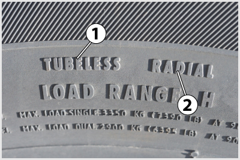
- 338. Mire utal a képen látható gumiabroncson az 1-es jelű TUBELESS felirat? #704559
- Az abroncs tömlő nélküli kivitelben készült.
- Az abroncs csak tömlővel használható.
- Az abroncs futófelületének hornyai utánvágással mélyíthetők.
- Az abroncs futófelülete felújítható.
- 339. Mire utal a képen látható gumiabroncson a 2-es jelű RADIAL felirat? #704560
- Az abroncs radiál szövetszerkezetű.
- Az abroncsot a gyártás során átvilágítással ellenőrizték.
- Az abroncs csak mélyágyázású kerékrtárcsára szerelhető fel.
- Az abroncs kör keresztmetszetű.
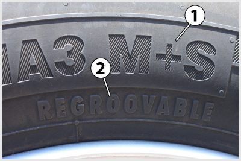
- 340. Mit jelent a képen látható gumiabroncson az 1-es jelű M+S felirat? #704561
- Ez egy téli gumiabroncs.
- Ez egy nyári gumiabroncs.
- Ez egy tömlő nélküli gumiabroncs.
- Ez egy radiális szövetszerkezetű gumiabroncs.

- 341. Mit jelent a képen látható gumiabroncson a 2-es jelű 275 felirat? #704562
- A gumiabroncs szélessége 275 mm.
- A gumiabroncs magassága 275 mm.
- A gumiabroncs belső átmérője 275 mm.
- A gumiabroncs külső átmérője 275 mm.
- 342. Mit jelent a képen látható gumiabroncson a 3-as jelű /70 felirat? #704563
- A gumabroncs magassága a szélességének 70 százaléka.
- A gumabroncs szélessége a magasságának 70 százaléka.
- A gumiabroncs profilmélysége 70 mm.
- A gumiabroncs külső átmérője 70 col.
- 343. Mit jelent a képen látható gumiabroncson az 5-ös jelű 22.5 felirat? #704564
- Az abroncs belső átmérője 22,5 col.
- Az abroncs külső átmérője 22,5 col.
- Az abroncs szélessége 22,5 col.
- Az abroncs profilmélysége 22,5 mm.
- 344. Milyen típusú a képen látható 3-as jelű keréktárcsa? #704566
- Mélyágyazású.
- Trilex.
- Lapos ágyazású, osztott.

- 345. Mit jelent a képen látható gumiabroncson a 4-es jelű 150 felirat? #704630
- Az abroncs megengedhető maximális statikus terhelése szóló abroncsozásban a 150-es terheléskódnak felel meg.
- Az abroncs megengedhető maximális statikus terhelése iker abroncsozásban a 150-es terheléskódnak felel meg.
- Az abroncs megengedhető maximális sebessége szóló abroncsozásban 150 km/h.
- Az abroncs megengedhető maximális sebessége iker abroncsozásban 150 km/h.
- 346. Mit jelent a képen látható gumiabroncson az 6-os jelű J felirat? #704631
- Az abroncs megengedhető maximális sebessége a J sebességkódnak felel meg.
- Az abroncs megengedhető maximális statikus terhelése iker abroncsozásban a J terheléskódnak felel meg.
- Az abroncs megengedhető maximális statikus terhelése szóló abroncsozásban a J terheléskódnak felel meg.
- Az abroncs téli mintázatú.
- 347. Az alábbi megállapítások közül melyik felel meg a valóságnak? #704782
- A tömlős gumiabroncs tömlőjének sérülésekor a levegőnyomás hirtelen lecsökken, ami balesetveszélyt okoz.
- A tömlős gumiabroncsnál kevésbé fordulhat elő a durrdefekt.
- A tömlő nélküli gumiabroncsokat csak személygépkocsiknál szabad alkalmazni.
- A tömlő nélküli gumiabroncs legkisebb sérülésekor a levegőnyomás hirtelen lecsökken, ami balesetveszélyt okoz.
- 348. Miért célszerű a téli gumiabroncsokat a meleg idő beálltával nyárira cserélni? #704783
- Nem biztonságos a használatuk, mert a tapadóképességük ilyenkor nem megfelelő és gyorsabban is kopnak.
- Mert a téli gumiabroncs szerkezete melegben megkeményedik, így nem tudja a vonóerőt megfelelően átadni a talajra.
- Mert a nyári gumi jobban rugózik, és ezáltal javítja a menetkényelmet.
- Mert a téli gumiabroncs nyomása nyáron túl magas értékeket érhet el, növelve ezzel a durrdefekt veszélyét.
- 349. Hány Celsius-fokos hőmérséklettől célszerű a nyári gumiabroncsot lecserélni télire? #704784
- Plusz 7 Celsius-fok hőmérséklet alatt.
- Csak akkor ha a hőmérséklet elérte a fagypontot.
- Mínusz 7 Celsius-fok hőmérséklet alatt.
- Plusz 15 Celsius-fok hőmérséklet alatt.
- 350. Milyen gumiabroncsok szerelhetők fel a gépjármű és a pótkocsi azonos tengelyén levő kerekeire? #704786
- Amelyeknek mérete, szerkezete, teherbírása és mintázati jellege azonos.
- Amelyeknek mérete azonos, de lehetnek vegyesen nyári, vagy téli mintázatúak.
- Amelyeknek mérete azonos, de tetszés szerint lehetnek diagonál vagy radiál szerkezetűek.
- 351. Nagy teherbírású gépjármű kerekei téli útviszonyok között nehezebben tudják átvinni a talajra a megfelelő vonóerőt. Szabad-e ilyenkor jobban kapaszkodó, szögbetétes gumiabroncsot használni? #704787
- Nem.
- Igen.
- 352. A tehergépkocsi mélyágyazású kerékpántjának méretjelölése 22.5 x 7.50. Mit jelentenek a számok a méretjelölésben? #704788
- A kerékpánt átmérője 22,5 hüvelyk (coll), szélesége pedig 7,5 hüvelyk (coll).
- A kerékpánt szélessége 22,5 hüvelyk (coll), átmérője pedig 7,5 hüvelyk (coll).
- A kerékpánt átmérője 22,5 hüvelyk (coll), kerékcsavarjainak lyukkör sugara pedig 7,5 hüvelyk (coll).
- 353. Milyen abroncsok szerelhetők fel az egy tengelyen futó kerékpántokra? #714597
- Kizárólag olyan gumiabroncsok, amelyeknek a szerkezete, mérete, teherbírása és mintázati jellege is azonos.
- Tetszőleges mintázati jellegű, de azonos méretű, teherbírású és szövetszerkezetű gumiabroncsok.
- Tetszőleges szövetszerkezetű és mintázati jellegű, de azonos méretű és teherbírású gumiabroncsok.
- 354. Lehet-e a tehergépkocsikon és pótkocsijaikon utánvágott gumiabroncsokat használni? #714598
- Igen, de csak akkor, ha ezt a gumiabroncs gyártója az abroncson feltüntetett módon engedélyezi és az utánvágást a vonatkozó előírások betartásával végezték.
- Igen, korlátozás nélkül.
- Nem, az ilyen gumiabroncsok használata szigorúan tilos.
- Igen, de csak nem kormányzott tengelyeken.
- 355. Lehet-e egy gumiabroncsnak előírt forgásiránya? #714599
- Igen. Ha van, akkor ezt nyíllal jelölik a gumiabroncs oldalfalán és ezt figyelembe kell venni az abroncsok felszerelésénél.
- Nem, a gumiabroncsok forgásiránya minden esetben tetszőleges.
- Igen, de ennek figyelembevétele nem kötelező.
- 356. Mit jelent a képen látható gumiabroncson az 6-os jelű M+S felirat? #714607
- Ez egy téli gumiabroncs.
- Ez egy nyári gumiabroncs.
- Ez egy tömlő nélküli gumiabroncs.
- Ez egy radiális szövetszerkezetű gumiabroncs.
- 357. Mit jelent a képen látható gumiabroncson az 1-es jelű 275 felirat? #714610
- A gumiabroncs szélessége 275 mm.
- A gumiabroncs magassága 275 mm.
- A gumiabroncs belső átmérője 275 mm.
- A gumiabroncs külső átmérője 275 mm.
- 358. Mit jelent a képen látható gumiabroncson a 3-as jelű 22.5 felirat? #714611
- Az abroncs belső átmérője 22,5 col.
- Az abroncs külső átmérője 22,5 col.
- Az abroncs szélessége 22,5 col.
- Az abroncs profilmélysége 22,5 mm.
- 359. Hogyan ismerhető fel a tömlőnélküli gumiabroncs? #721166
- A gumiabroncson található Tubeless, TB vagy TBL feliratból.
- A gumiabroncson nem található szelep.
- A gumiabroncson található M+S feliratból.
- A gumiabroncs méretjelzésében található R betűről.
- 360. Ha a gumiabroncs oldalán a 315 R 22,5 méretjelölő szám van feltüntetve, akkor az... #721173
- radiál szövetszerkezetű gumiabroncs, amelynek szélessége 315 mm, a belső átmérője pedig 22,5 hüvelyk (col).
- radiál szövetszerkezetű gumiabroncs, amelynek belső átmérője 315 mm, szélessége pedig 22,5 hüvelyk (col).
- radiál szövetszerkezetű gumiabroncs, amelynek belső átmérője 315 mm, a külső átmérője pedig 22,5 hüvelyk (col).
- diagonál szövetszerkezetű gumiabroncs, amelynek szélessége 315 mm, a belső átmérője pedig 22,5 hüvelyk (col).
- 361. Mit jelent a képen látható gumiabroncson a 2-es jelű /70 felirat? #721174
- A gumiabroncs magasságának és szélességének aránya 70%.
- A gumiabroncs szélességének és magasságának aránya 70%.
- A gumiabroncs profilmélysége 70 mm.
- A gumiabroncs külső átmérője 70 col.
- 362. Ha a gumiabroncs oldalfalán a 10 R 22.5 jelölés látható, akkor az... #721175
- radiál gumiabroncs, amelynek szélessége 10 hüvelyk (col), belső átmérője pedig 22,5 hüvelyk (col).
- radiál gumiabroncs, amelynek belső átmérője 10 hüvelyk (col), szélessége pedig 22,5 hüvelyk (col).
- radiál gumiabroncs, amelynek belső átmérője 10 hüvelyk (col), szélessége pedig 22,5 cm.
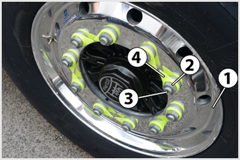
- 363. A képen látható 1-es jelű alkatrész egy... #721188
- mélyágyazású könnyűfém keréktárcsa.
- trilex keréktárcsa.
- lapos ágyazású, osztott keréktárcsa.
- 364. Milyen kerékpántokat alkalmaznak általában a tehergépjárműveken és pótkocsijaikon? #721189
- Ma már többnyire mélyágyazású kerékpántokat, de lehet még laposágyazású és trilex kerékpántokkal is találkozni.
- Általában laposágyazású kerékpántokat.
- Kizárólag trilex kerékpántokat.
- Osztott (laposágyazású vagy trilex) kerékpántokat.
- 365. Mit jelent a képen látható gumiabroncson a 4-es jelű R felirat? #724201
- Az abroncs radiál szövetszerkezetű.
- Ez egy téli gumiabroncs.
- Ez egy nyári gumiabroncs.
- Ez egy tömlő nélküli gumiabroncs.
- 366. Mire utal a gumiabroncs oldalfalán a 315/80 R 22.5 méretjelzésben a /80 jelölés? #724202
- Keresztmetszeti viszonyt jelent, amely a gumiabroncs magasságának és szélességének százalékos aránya.
- Sebességindex, amelynek km/h-ban kifejezett értéke táblázatból olvasható ki.
- Terhelésindex, amelynek kg-ban kifejezett értéke táblázatból olvasható ki.
Gumiabroncsok ellenőrzése, kopása, futóműbeállítás (1 db., 1 pont)
- 367. Tehergépjárművek és pótkocsik 0,75 m-t meghaladó átmérőjű gumiabroncsai addig használhatóak, amíg bordázatuk magassága a teljes felületen eléri... #704417
- a 3 mm-t.
- az 1,5 mm-t.
- a 4 mm-t.
- az 1 mm-t.
- 368. Mikor kell a gumiabroncsok nyomását ellenőrizni? #704424
- Még hideg gumiabroncs esetén, indulás előtt.
- Nagyobb sebességű haladást követően, amikor a gumiabroncsok elérték üzemmeleg állapotukat.
- Bármikor lehet ellenőrizni.
- Csak leszerelt keréken lehet megfelelően ellenőrizni.
- 369. A 0,75 m-t meg nem haladó átmérőjű abroncsok a tehergépkocsikon és nehéz pótkocsikon addig használhatóak, ameddig a futófelület bordázatának magassága a teljes felületen eléri... #704426
- az 1,6 mm-t.
- a 4 mm-t.
- a 3 mm-t.
- az 1 mm-t.
- 370. A jármű gumiabroncsaiban... #704479
- mindig az előírásnak megfelelő légnyomásértéket kell beállítani.
- télen alacsonyabb, nyáron magasabb nyomást kell beállítani.
- a járművezető tapasztalatainak megfelelő, optimális nyomást kell beállítani.
- akkora nyomást kell beállítani, hogy a talajjal érintkező rész környékén már ne legyen szemmel látható deformációja.

- 371. Mi okozhatja az ábrán látható gumiabroncs futófelületének rendellenes kopását? #704498
- A gumiabroncsban beállított nyomás nagyobb, mint az előírt érték.
- A lengéscsillapító meghibásodása vagy a kerék kiegyensúlyozatlansága.
- A gumiabroncsban beállított nyomás kisebb, mint az előírt érték.
- Rosszul beállított kerékdőlés vagy -összetartás.
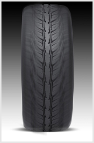
- 372. Mi okozhatja az ábrán látható gumiabroncs futófelületének rendellenes kopását? #704499
- A gumiabroncsban beállított nyomás kisebb, mint az előírt érték.
- Rosszul beállított kerékdőlés vagy -összetartás.
- A gumiabroncsban beállított nyomás nagyobb, mint az előírt érték.
- A lengéscsillapító meghibásodása vagy a kerék kiegyensúlyozatlansága.

- 373. Mi okozhatja az ábrán látható gumiabroncs futófelületének rendellenes kopását? #704500
- Rosszul beállított kerékdőlés.
- A lengéscsillapító meghibásodása vagy a kerék kiegyensúlyozatlansága.
- A gumiabroncsban beállított nyomás nagyobb, mint az előírt érték.
- A gumiabroncsban beállított nyomás kisebb, mint az előírt érték.
- 374. Milyen esetben melegedhet fel menet közben oly mértékben a jármű gumiabroncsa, hogy az akár meg is gyulladhat? #704508
- Ha a gumiabroncsban beállított nyomás jelentősen kisebb az előírtnál, vagy az abroncs nagymértékben túlterhelt.
- Nyári melegben.
- Rossz futómű-beállítás esetén.
- Ha a gumiabroncsban beállított nyomás jelentősen nagyobb az előírtnál.

- 375. Mi okozhatja az ábrán látható gumiabroncs futófelületének rendellenes kopását? #704531
- A lengéscsillapító meghibásodása vagy a kerék kiegyensúlyozatlansága.
- Rosszul beállított kerékdőlés vagy -összetartás.
- A gumiabroncsban beállított nyomás nagyobb, mint az előírt érték.
- A gumiabroncsban beállított nyomás kisebb, mint az előírt érték.

- 376. A képen a jármű sárvédőjén elhelyezett, 1-es jelű, 8,5 bar felirat arra utal, hogy... #704665
- a jármű gyártója által előírt abroncsnyomás 8,5 bar.
- a jármű légfékrendszerének névleges nyomása 8,5 bar.
- a jármű kenőolajnyomása 8,5 bar.
- a jármű mosásakor alkalmazható maximális víznyomás 8,5 bar.
- 377. Mikor kell a légnyomást megmérni a gumiabroncsokban? #704789
- Hetente kell légnyomásmérővel ellenőrizni, lehetőleg indulás előtt a gumiabroncs hideg állapotában.
- Havonta egyszer kell légnyomásmérővel ellenőrizni, a gumiabroncs meleg állapotában.
- Hetente kell ellenőrizni a légnyomást, de elegendő szemrevételezéssel, mert a nyomáscsökkenés jól látható a gumiabroncson.
- Naponta kell légnyomásmérővel ellenőrizni a gumiabroncs üzemmeleg állapotában.
- 378. Hogyan működnek az indirekt gumiabroncs-nyomásellenőrző rendszerek? #704790
- Az ABS, illetve ESP kerékfordulatszám-érzékelők jeleiből kiszámítva felismerik, ha valamelyik kerék nyomása és ezzel sugara kisebb a többinél.
- A kerekek középpontjának távolságát mérik meg a talajtól és ezeket hasonlítják össze.
- Az alacsony nyomású kerekek megváltozott rugózási tulajdonságait ismerik fel.
- 379. A kormányzott futómű kerekeinek mely beállításai járulnak hozzá a kormánykeréken érezhető visszatérítő hatás létrehozásához? #704805
- Az utánfutás és a csapterpesztés.
- A csapterpesztés és a kerékösszetartás.
- A kerékdőlés és a kerékösszetartás.
- 380. Szükséges-e a levegőnyomást csökkenteni a hosszabb út megtétele után felmelegedett gumiabroncsokban, ha az a hőmérséklet növekedésének hatására megemelkedett? #714600
- Nem szükséges.
- Igen, feltétlenül.
- Csak, ha a járművel autópályán közlekedik.
- Csak, ha a jármű sebessége eléri a 80 km/h-t.
- 381. Hatással van-e a jármű üzemanyag-fogyasztására, ha a gumiabroncsok levegőnyomása kisebb az előírtnál? #714601
- Igen, a fogyasztás megnövekszik.
- Igen, a fogyasztás kismértékben csökken.
- Nem, a fogyasztás nem változik.
- Igen, a fogyasztás jelentősen csökken.
- 382. A 3.500 kg megengedett össztömeget meghaladó gépjárművön és pótkocsin a 0,75 métert meg nem haladó átmérőjű gumiabroncs esetén a futófelület mintázatának a magassága a teljes futófelületen el kell hogy érje... #714602
- az 1,6 millimétert.
- a 3 millimétert.
- az 1 millimétert.
- a 4 millimétert.
- 383. A 3.500 kg megengedett össztömeget meghaladó gépjárművön és pótkocsin a 0,75 métert meghaladó átmérőjű gumiabroncs futófelületén a mintázat magassága a teljes futófelületen el kell hogy érje... #714603
- a 3 millimétert.
- az 1 millimétert.
- az 1,6 millimétert.
- a 4 millimétert.
- 384. Lehet-e a járművek gumiabroncs-nyomását üzem közben ellenőrizni? #714604
- Csak akkor, ha a jármű gumiabroncs nyomásellenőrző (TPM, TPMS) rendszerrel rendelkezik.
- Üzem közben csak a gumiabroncs nyomásszabályozó berendezéssel ellátott járműveknél lehet a nyomást ellenőrizni.
- A gépjármű üzeme közben nem lehet a nyomást ellenőrizni, csak álló helyzetben.
- Légfékes gépjárműveken igen, mert ezeknél a féktartályok nyomása megegyezik a gumiabroncsok nyomásával.
- 385. A nehéz haszongépjárművön és pótkocsiján hol kell feltüntetni a gumiabroncsok előírt nyomását? #714605
- Minden kerék közelében fel kell tüntetni (pl. a sárvédőn).
- A jármű kezelési útmutatójában kell feltüntetni és ennek a járművezetőnél kell lennie.
- A vezetőfülke bal első ajtajának belsejében kell egy adattáblán feltüntetni.
- A tanksapka közelében kell feltüntetni.
- 386. Ha a gumiabroncs futófelülete az ábrán látható módon, a külső vagy a belső oldalán kopik, akkor... #714608
- nem megfelelő a futómű beállítása.
- a lengéscsillapító meghibásodott.
- a gumiabroncs légnyomása az előírtnál alacsonyabb.
- a gumiabroncs levegőnyomása az előírtnál nagyobb.
- 387. Ha a gumiabroncs futófelülete a két szélén kopik, akkor... #714609
- a gumiabroncs levegőnyomása az előírtnál kisebb.
- a futómű beállítása nem megfelelő.
- a gumiabroncs levegőnyomása az előírtnál nagyobb.
- meghibásodott a lengéscsillapító, vagy eltörött a rugó.
- 388. Amikor a gumiabroncsok oldalfala az ikerkerekeken összeér, akkor... #721167
- a gumiabroncsok jelentősen túlmelegedhetnek, ezért élettartamuk lecsökken.
- a gépkocsi terhelhetősége megnövekszik.
- a gépkocsi elveszítheti a stabilitását.
- a kerekek helyesen vannak felszerelve a kerékagyra és nyomásuk is megfelelő.
- 389. Mi okozhatja azt, hogy ikerkerekeken a gumiabroncsok oldalfala összeér? #721168
- A gumiabroncsok levegőnyomása alacsonyabb az előírt értéknél, vagy az abroncsok túl vannak terhelve.
- A gumiabroncsok levegőnyomása jóval magasabb az előírt értéknél.
- A gumiabroncsokat helytelenül szerelték fel a keréktárcsára.
- A gumiabroncsokat helyesen szerelték fel a keréktárcsára.
- 390. Változik-e a gumiabroncs nyomása melegedés miatt a jármű üzeme során hosszabb úton? #721169
- A nyomás az abroncs melegedése miatt emelkedni fog, de azt nem kell csökkenteni, mert amikor lehűl, akkor az eredeti érték visszaáll.
- Nem fog megváltozni a levegőnyomás, mert a sebesség növekedésével nő a menetszél hűtőhatása is.
- A nyomás emelkedni fog, ezért azt időnként korrigálni kell, hogy mindig biztonságosan lehessen közlekedni.
- Nem változik meg, mert a gumiabroncsokat kötelező nyomásszabályozó rendszerrel felszerelni.
- 391. Milyen gyakran kell ellenőrizni a gumiabroncsokban az előírt légnyomást légnyomásmérő műszerrel? #721170
- Hetente egyszer, a gumiabroncs hideg állapotában.
- Minden reggel, indulás előtt.
- Naponta többször is, mert használat közben melegszik a gumiabroncs és megnő benne a légnyomás.
- Hetente egyszer, a gumiabroncs üzemmeleg állapotában.
- 392. Ha a gumiabroncs futófelülete az ábrán látható módon középen kopik, akkor... #721171
- a gumiabroncs nyomása az előírtnál magasabb.
- a futómű beállítása nem megfelelő.
- meghibásodott a lengéscsillapító, vagy eltörött a rugó.
- a gumiabroncs légnyomása az előírtnál alacsonyabb.
- 393. Ha a gumiabroncs futófelülete az ábrán látható módon, kagylósan kopik, akkor... #721172
- a lengéscsillapító meghibásodott.
- helytelen a futómű beállítása.
- túlságosan magas a gumiabroncs nyomása.
- a gumiabroncs légnyomása az előírtnál alacsonyabb.
- 394. Mi a futóműgeometrián belül a kerékdőlés jelentősége? #724197
- Előfeszített állapotban tartja a kerékcsapágyakat.
- Segíti a kormánykerék visszatérítését ívmenetből történő kikormányzáskor.
- Csökkent gumiabroncs nyomás esetén is vezethetővé teszi a gépjárművet.
- 395. Mi a következménye annak, ha az ikerkerekek távolsága az előírtnál kisebb? #724199
- A gumiabroncsok oldalfala összeérhet és a súrlódás okozta felmelegedés miatt sérülhet.
- Kisebb lesz a jármű nyomtávja ezáltal romlik a stabilitása.
- Nedves úton csökken az abroncsok vízkiszorító képessége.
Kerékcsere, gumiabroncsok szerelése, kerékkiegyensúlyozás (1 db., 1 pont)
- 396. Mi a kerék leszerelésének helyes műveleti sorrendje kerékcsere elvégzésekor? #704454
- A jármű rögzítése, a kerékcsavarok fellazítása, a jármű emelése, a csavarok leszerelése, végül a kerék leemelése a kerékagyról.
- A jármű emelése, a csavarok leszerelése, végül a kerék leemelése a kerékagyról.
- A jármű rögzítése, majd emelése, a csavarok leszerelése, végül a kerék leemelése a kerékagyról.
- 397. Amikor a gépjármű kerekei kiegyensúlyozatlanok, akkor nagy haladási sebességnél... #704464
- az első kerekek szitáló, ugráló mozgása miatt a kormánykerék erősen rángat, a jármű nehezen irányítható.
- a jármű felépítménye érezhetően beleng.
- a gumiabroncsok oly mértékben felmelegednek, hogy akár ki is gyulladhatnak.
- nehezebbé válik a sebességváltó fokozatainak kapcsolása.
- 398. Mikor van szükség a gépjármű kerekeinek kiegyensúlyozására? #704506
- Mindig, ha gumiabroncs- vagy tárcsacsere történt, továbbá gumiabroncs-szerelést követően (akkor is, ha ugyanazt a gumiabroncsot szerelik vissza ugyanarra a tárcsára).
- Csak a defektes gumiabroncs javítását követően.
- Minden alkalommal, ha a kereket le- és felszerelik.
- Havi rendszerességgel.
- 399. Kerékcsere esetén hová kell elhelyezni az emelőt a jármű megemeléséhez? #704791
- Az adott járműtípusra előírt emelési ponthoz kell elhelyezni az emelőt.
- A futóművek bármelyik kellően erős részéhez el lehet helyezni az emelőt.
- Az alváz bármelyik kellően erős részéhez el lehet helyezni az emelőt.
- 400. Kerékcsere esetén hogyan kell meghúzni a mélyágyazású kerékpánt kerékanyáit (kerékcsavarjait)? #704792
- Átlós irányban haladva, több lépcsőben elérve az előírt meghúzási nyomatékot.
- Több lépcsőben elérve az előírt meghúzási nyomatékot, de a meghúzási sorrend nem kötött.
- Sorban haladva, a lehető legnagyobb meghúzási nyomatékkal.
- Sorban haladva, több lépcsőben elérve az előírt meghúzási nyomatékot.
- 401. Szükséges-e ellenőrizni és utánhúzni a kerékanyákat (kerékcsavarokat) kerékcsere után? #704793
- Igen, kb. 50 km megtétele után kell az ellenőrzést és utánhúzást elvégezni.
- Ha a kerékcsere elvégzésekor a kerékanyákat (kerékcsavarokat) az előírt nyomatékkal meghúzták, akkor nem szükséges ellenőrizni.
- Kb. 1.000-2.000 km megtétele után szükséges elvégezni az ellenőrzést és utánhúzást.
- Igen, ha a jármű rendellenes viselkedéséből arra lehet következtetni, hogy a kerékanyák (kerékcsavarok) meglazulhattak.
- 402. A mélyágyazású keréktárcsára szerelt gumiabroncs cseréjét célszerű-e a gépjárművezetőnek elvégeznie? #704794
- Nem, mert szereléskor a szerelővas kárt okozhat a keréktárcsában és az használhatatlanná válhat.
- Igen, mert a szerelés könnyen elvégezhető.
- A gumiabroncs cseréjét biztonságosan végre tudja hajtani a gépjárművezető, de csak nagy fizikai erőkifejtés árán.
- 403. Ha a teljes értékű pótkerék forgásiránya kötött, akkor mire kell ügyelni a felszerelése esetén? #704796
- Defekt esetén felszerelhető az előírt forgásiránnyal ellentétesen forgó helyre is, de óvatosan kell a továbbiakban vezetni és mielőbb gondoskodni kell a helyes forgásirányú kerék felszereléséről.
- Csak a megfelelő forgásirányú helyre szabad felszerelni.
- Csak a nem kormányzott kerekekre szabad felszerelniés a kerekeket a járművön ennek figyelembevétel, szükség szerint át kell csoportosítani.
- Csak a nem hajtott kerekekre szabad felszerelni és a kerekeket a járművön ennek figyelembevétel, szükség szerint át kell csoportosítani.
- 404. Mit okoz a kerék kiegyensúlyozatlansága? #704797
- Nagyobb sebességnél az első kerekek szitáló mozgása miatt romlik a jármű kormányozhatósága és csökken a gumiabroncsok élettartama.
- Rendellenes egyoldalas gumiabroncs kopást fog eredményezni hosszabb használat esetén.
- Egyenes menetben is folyamatosan működni fog a differenciálmű, ezért az hamarabb elhasználódik.
- Hangos, kereplő zaj keltését.
- 405. Trilexpántos keréknél kerékcsere esetén mi a kerékanyák helyes meghúzási sorrendje? #704798
- A kerékanyákat körkörösen sorban haladva, több lépésben kell meghúzni az előírt meghúzási nyomatékra.
- A kerékanyákat átlósan haladva, több lépésben kell meghúzni az előírt meghúzási nyomatékra.
- Tetszőleges sorrendben lehet meghúzni a kerékanyákat az előírt meghúzási nyomatékra.
- A kerékanyákat átlósan haladva, egy lépésben kell meghúzni az előírt meghúzási nyomatékra.
- 406. Milyen módon kell a kerékcsavarokat, illetve kerékanyákat meghúzni a kerékcserét követően mélyágyas kerékpánt esetén? #714612
- Mindig átlós irányban, fokozatosan meghúzva az előírt nyomatékkal.
- Tetszőleges sorrendben, a lehető legnagyobb nyomatékkal meghúzva.
- Sorban egymás után, rögtön az előírt nyomatékra húzva.
- Sorban egymás után, több lépésben az előírt nyomatékra húzva.
- 407. Mire szolgálnak a képen látható 4-es jelű alkatrészek? #721179
- Elfordulásukból a kerékanyák meglazulására lehet következtetni.
- A kerékanyák helyes oldási és meghúzási sorrendjét mutatják.
- A kerékanyák megfelelő meghúzási nyomatékát mutatják.
- Ezek a kerékanyák tömítő alátétei.
- 408. Mi a kerék leszerelésének helyes sorrendje? #721180
- Jármű rögzítése, emelő emelési pont alá helyezése, kerékcsavarok meglazítása, jármű emelése, kerékcsavarok eltávolítása, kerék leemelése.
- Jármű rögzítése, jármű emelése, kerékcsavarok meglazítása majd eltávolítása, kerék leemelése.
- Kerékcsavarok meglazítása, jármű emelése, kerékcsavarok eltávolítása, kerék leemelése.
- 409. Küllős agyra hogyan történik a trilexpánt felszerelése? #721181
- A kerékpántot fel kell tolni a küllőkre, fel kell helyezni a szorítókörmöket, majd az ezeket rögzítő anyákat meg kell húzni.
- Ugyanúgy történik a felszerelés, mint a tárcsás keréknél.
- A kerékpántot fel kell tolni a küllőkre, majd a rögzítő csavarokat meg kell húzni.
Kerékfelfüggesztés, rugózás, lengéscsillapítás, emelés-süllyesztés (1 db., 1 pont)
- 410. A lengéscsillapítók hibája esetén... #704418
- a kerekek és az útfelület kapcsolata romlik, csökken a jármű stabilitása, a gumiabroncsok kopása pedig rendellenessé válik.
- nehezebbé válik a sebességváltás.
- megnő a fékbetétek kopása.
- csökken a jármű gyorsítóképessége.
- 411. Milyen funkciója van a képen látható 2-es jelű hátsó futóműnek? #704567
- Ez egy emelhető segédfutómű, amelyet akkor eresztenek le, ha a jármű hátsó tengelyterhelése ezt szükségessé teszi.
- Ez egy mankókerekes futómű, amelyre egyenetlen úton való haladáskor van szükség, hogy a jármű ne akadjon el.
- Ez egy segédfutómű, amelyre a jámű pótkerekeit rögzítik.
- 412. A képen látható 1-es és 2-es jelű tehergépkocsi hátsó futóművek közül melyik a nem hajtott? #704568
- A 2-es jelű.
- Az 1-es jelű.
- Mindkettő.
- Egyik sem.
- 413. A képen látható 2-es jelű alkatrész... #704579
- a laprugó.
- a kormánytolórúd.
- a hídtest.
- a lengéscsillapító.
- 414. A képen látható 4-es jelű alkatrész... #704580
- a lengéscsillapító.
- a keresztstabilizátor.
- a kormánytolórúd.
- a hídtest.

- 415. A képen látható 3-as jelű alkatrész a tehergépkocsi hátsó híd felfüggesztés... #704646
- keresztstabilizátora.
- segéd laprugókötege.
- fő laprugókötege.
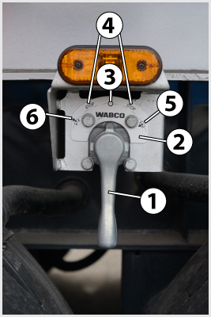
- 416. Mi a képen látható emelő-süllyesztő szelep rendeltetése? #704670
- A jármű felépítményének megfelelő magassága állítható be vele rakodás, cserefelépítmény, konténer le- és felvétele, illetve pótkocsi felkapcsolása esetén.
- A jármű szintmagassága szabályozható vele azért, hogy alkalmazkodni lehessen a különböző út- és terepviszonyokhoz.
- A jármű szintmagassága szabályozható vele azért, hogy a különböző országokban érvényes eltérő előírásokhoz alkalmazkodni tudjon a jármű.
- A billenő felépítmény mozgatása végezhető vele.
- 417. Mire szolgál a képen látható kezelőegység? #704706
- Az elektronikus légrugózás emelő-süllyesztő funkcióinak vezérlésére.
- A vezetőülés beállítására.
- A fülkebillentés működtetésére.
- A billenthető felépítmény vezérlésére.
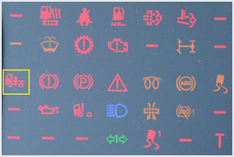
- 418. Mire figyelmeztet a képen a bekeretezett visszajelző lámpa? #704708
- Az elektronikus légrugózás működésével kapcsolatos hibára vagy rendellenességre.
- A fülkebillentés működésével kapcsolatos hibára vagy rendellenességre.
- A billenő felépítmény működésével kapcsolatos hibára vagy rendellenességre.
- 419. Általában milyen a tehergépkocsik és pótkocsijaik kerékfelfüggesztése? #704716
- Általában kapcsolt kerékfelfüggesztésű (merev hidas).
- Általában kettős kereszt-lengőkaros felfüggesztésű.
- Általában ferde- vagy hosszlengőkaros.
- Általában rugózatlan.
- 420. Az emelhető segédfutómű felemelésével... #704717
- csökken a gördülési ellenállás, a tüzelőanyag-fogyasztás és a gumiabroncsok kopása, illetve növelhető a vele párban futó hajtott tengely terhelése.
- kedvezőbb teherelosztás biztosítható az első és a hátsó tengelyek között.
- nagyobb stabilitás biztosítható a terepen mozgó jármű számára.
- nő a jármű terhelhetősége.
- 421. Mi a független kerékfelfüggesztések előnye a kapcsolt (merev hidas) felfüggesztésekhez képest? #704809
- A kerekek be- és kirugózhatnak anélkül, hogy a másik kereket elbillenésre kényszerítenék. Ezáltal jobbak a jármű menettulajdonságai és stabilitása.
- Nagyobb terhek elviselésére alkalmas.
- Nagyobb fékerők és vonóerők átadására alkalmas.
- Kormányzott kerekek felfüggesztése csak így oldható meg.
- 422. Mi a stabilizátor feladata a kerék felfüggesztésében? #704810
- Kanyarban a felépítmény túlzott mértékű dőlésének megakadályozása.
- A vonóerő elosztása a terhelési viszonyoknak megfelelően.
- Hirtelen gázadáskor a kerekek kipörgésének a megkadályozása.
- 423. Gépjárműveken és pótkocsikon általában milyen típusú lengéscsillapítót alkalmaznak? #704811
- Hidraulikus, teleszkópos lengéscsillapítókat.
- Lamellás, súrlódásos lengéscsillapítókat.
- Hidraulikus, karos lengéscsillapítókat.
- Mágneses lengéscsillapítókat.
- 424. Milyen típusú rugózással valósítható meg az alvázmagasság-állítás? #704812
- Légrugózással.
- Laprugókkal.
- Csavarrugókkal.
- Gumirugókkal.
- 425. Mikor célszerű tartósan felemelni az emelhető segédtengelyt? #704814
- Terheletlen, illetve kis terhelésű járműnél.
- Maximálisan terhelt járműnél.
- Meghibásodott jármű vontatásakor.
- Túlterhelt jármű esetén.
- 426. Milyen járműveknél alkalmaznak segédrugóval kombinált laprugót? #704815
- Azoknál, melyeknél nagy a jármű saját tömege és össztömege közötti különbség.
- Azoknál, melyeknél lágy rugózás megvalósítása a cél.
- Azoknál, melyeknél alváz magasságállítást kívánnak megvalósítani.
- Azoknál, melyeknél a főrugó törése esetén is biztosítani kell a rugózás működőképességét.
- 427. Milyen rugózási rendszerek terjedtek el leginkább a korszerű nehéz haszonjárműveknél? #704816
- Laprugós és légrugós.
- Tekercs és torziós rugós.
- Hidarulikus és gázrugós.
- Gumirugós.
- 428. A képen látható 1-es jelű karral... #714587
- a jármű felépítményének emelése és süllyesztése végezhető.
- a billenő felépítmény mozgása vezérelhető.
- a jármű terhelésének megfelelő fékerőhatárok állíthatók be.
- a jármű terhelésének megfelelő rugózás állítható be.
- 429. Mi történik akkor, ha a lengéscsillapítók állapota nem megfelelő, és nem képesek hatásosan csillapítani a lengéseket? #714624
- Jelentősen leromlik a gépjármű menetstabilitása és az utazás kényelme, valamint a gumiabroncsok kopása is rendellesé válik, illetve megnövekszik.
- Kényelmetlenebbé válik az utazás a gépkocsiban.
- Valamelyest megnövekszik a gumiabroncsok kopása.
- Nehezebbé válik a sebességváltás.
- 430. A képen látható emelő-süllyesztő szelep 2-es jelű tábláján a 4-es jelű helyzetek... #721157
- a süllyesztéssel, vagy emeléssel beállított helyzet megtartását jelentik.
- a normál rugózást jelentik.
- a folyamatos emelést jelentik.
- a folyamatos süllyesztést jelentik.
- 431. Mi a célja az alvázmagasság állításának? #721158
- Félpótkocsik fel- és lekapcsolásának, illetve rakodási feladatoknak (pl. konténerek fel- és levétele) a megkönnyítése.
- A jármű hasmagasságának növelése rossz minőségű úton, illetve légellenállásának csökkentése nagy sebességű haladásnál.
- A rugó úthosszának megnövelése, ezáltal a menetkényelem javítása.
- A járműmagasság vonatkozásában a különböző országokban érvényes eltérő előírások teljesíthetősége.
- 432. Tehergépkocsiknál mi a hátsó ikertengely alkalmazásának oka? #721187
- Az ikertengely két tengelyén megoszlik a terhelés, így nő a jármű megengedett össztömege.
- Jelentős tüzelőanyag-fogyasztáscsökkenést okoz az ikerkerekekkel szemben.
- Megkönnyíti a kerékcserét és a jármű kanyarodási sugara is kisebb lesz.
- 433. A lengéscsillapítók meghibásodására következtethetünk, ha... #721196
- a gépkocsi menet közben jelentősen beleng és a kerékfelfüggesztés esetenként az ütközőjére felüt.
- nehezebbé válik a sebességváltás.
- az első kerekek szitáló, ugráló mozgása miatt a kormánykerék erősen rángat, a jármű nehezen irányítható.
- a gumiabroncsok oly mértékben felmelegednek, hogy akár ki is gyulladhatnak.
- 434. A képen látható emelő-süllyesztő szelep 2-es jelű tábláján a 3-as jelű helyzet... #724193
- a normál rugózást jelenti.
- a folyamatos emelést jelenti.
- a folyamatos süllyesztést jelenti.
- a süllyesztéssel, vagy emeléssel beállított helyzet megtartását jelenti.
- 435. A képen látható 3-as jelű alkatrész... #724210
- a keresztstabilizátor.
- a kormánytolórúd.
- a laprugó.
- a lengéscsillapító.
- 436. A képen látható tehergépkocsi hátsó híd felfüggesztés... #724211
- egy fő és egy segéd laprugóköteget tartalmaz oldalanként.
- egy laprugóköteget tartalmaz oldalanként.
- egy légrugót és egy laprugóköteget tartalmaz oldalanként.
- két légrugót tartalmaz oldalanként.
- 437. Miért alkalmaznak a tehergépkocsiknál általában kapcsolt (merev hidas) kerékfelfüggesztést? #724212
- Mert egyszerűbb, olcsóbb és nagy terhek elviselésére alkalmas.
- Mert nagyobb sebesség elérését teszi lehetővé.
- Mert lágyabb rugózást lehet vele megvalósítani.
- Mert ebben a kategóriában hajtott futóművet csak így lehet kialakítani.
Fékrendszerek funkció (üzemi, biztonsági, rögzítő, lassító stb.) és felépítés szerint (hidraulikus, légfék, EBS, kombinált stb.), fékelőírások (1 db., 1 pont)
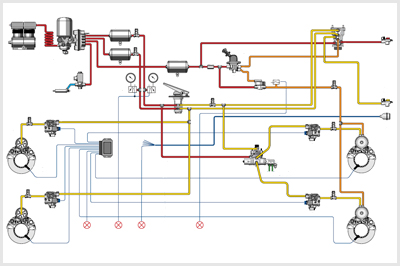
- 438. Az ábrán bemutatott légfékberendezés... #704442
- kétkörös.
- egykörös.
- háromkörös.
- 439. Befolyásolja-e a járművekre előírt fékezési követelményeket a jármű terhelési állapota? #704465
- Nem.
- Igen, a teljes terhelésű járművek esetében a követelmények enyhébbek.
- Igen, a teljes terhelésű járművek esetében a követelmények szigorúbbak.
- Igen, a részterhelésű járművek esetében a követelmények enyhébbek.
- 440. A gépjárművek üzemi fékrendszerének... #704476
- az összes kereket fékeznie kell.
- elegendő a jármű első kerekeit fékeznie.
- elegendő a jármű hátsó kerekeit fékeznie.
- elegendő egy tengely kerekeit fékeznie.
- 441. A kerekekre ható biztonsági fékberendezés képes arra, hogy... #704480
- a gépkocsit az üzemi fékberendezés üzemzavara esetén is biztonsággal megállítsa.
- a gépkocsit váratlan akadály felbukkanásakor automatikusan lefékezze.
- a gépkocsit a vezető rosszulléte esetén megállítsa.
- 442. A megfelelően működő légfékberendezés működési késedelme nem lehet nagyobb, mint... #704482
- 0,6 s.
- 0,2 s.
- 1 s.
- 2 s.
- 443. A rögzítőfék rendszernek képesnek kell lennie a gépjárművet... #704483
- 18%-os lejtőn vagy emelkedőn rögzíteni.
- 20%-os lejtőn vagy emelkedőn rögzíteni.
- 12%-os lejtőn vagy emelkedőn rögzíteni.
- 5%-os lejtőn vagy emelkedőn rögzíteni.

- 444. Melyik fékberendezés rendszervázlata ismerhető fel az ábrán? #704491
- A kétkörös, kombinált, sűrített levegővel működtetett hidraulikus fékrendszeré.
- A kétkörös légfékrendszeré.
- A kétkörös hidraulikus fékrendszeré.
- A sűrített levegős rásegítésű kétkörös hidraulikus fékrendszeré.

- 445. Milyen kialakítású fékberendezés ismerhető fel az ábrán? #704512
- Kétkörös, hidraulikus fékrendszer, elöl tárcsa-, hátul dobfékekkel.
- Egykörös, hidraulikus fékrendszer, elöl-hátul dobfékekkel.
- Kétkörös, hidraulikus fékrendszer, elöl-hátul tárcsafékekkel.
- Kétkörös, hidraulikus fékrendszer, elöl-hátul dobfékekkel.
- 446. Mekkora késedelemmel működik a hidraulikus fékberendezés? #704526
- Kb. 0,2 s.
- Kb. 0,5 s.
- Kb. 0,8 s.
- Kb. 1-1,15 s.
- 447. Melyik a főfékhenger, illetve a vákuumos fékrásegítő az ábrán látható fékrendszerben? #704527
- Az 1-es jelű a fékrásegítő, a 4-es a főfékhenger.
- A 2-es jelű a fékrásegítő, a 3-as a főfékhenger.
- A 3-as jelű a fékrásegítő, a 4-es a főfékhenger.
- Az 5-ös jelű a fékrásegítő, a 4-es a főfékhenger.
- 448. Mi a vákuumos fékrásegítő feladata egy hidraulikus fékrendszerben? #704530
- Fékezés esetén növeli a fékezőerőt, ezért a fékpedálra csak kisebb nyomóerőt kell gyakorolni.
- Csökkenti a fékrendszer alkatrészeinek igénybevételét.
- A biztonsági fékrendszer funkcióját tölti be, akkor lép működésbe, ha az üzemifék-rendszer meghibásodik.
- A rögzítő fékrendszer funkcióját látja el.
- 449. Miért építik a korszerű haszongépjárművek légfékberendezését két üzemifék-körös kivitelben? #704533
- Mert ha az egyik fékkör meghibásodik, akkor a másikkal a gépjármű még fékezhető marad.
- Mert így az egyik fékkörrel a vontató, a másikkal a pótkocsi kerékfékei működtethetők.
- Mert így az első és hátsó tengelyeken különböző fékerők valósíthatók meg.
- Mert így az üzemi és a rögzítőfék rendszer függetleníthető egymástól.

- 450. Az ábrán látható hidraulikus fékberendezésen... #704726
- az 1-es a fékfolyadék tartály, a 3-as a dobfékszerkezet munkahengere.
- a 2-es a fékrásegítő, a 4-es a dobfékszerkezet munkahengere.
- az 1-es a hidraulika tartály, a 4-es a főfékhenger.
- a 3-as a tárcsafék munkahengere, a 4-es pedig a dobféké.
- 451. Milyen legyen az üzemi fékrendszer fékhatása? #704863
- A fékhatásnak a kétoldali kerekeken megközelítőleg azonosnak kell lennie.
- A fékhatásnak minden keréken azonosnak kell lennie.
- A fékhatásnak minden tengelyen azonosnak kell lennie.
- A fékhatásnak a kormányzott kerekeken kell a legkisebbnek, a hajtott kerekeken pedig a legnagyobbnak lennie
- 452. Milyen fékrendszerrel kell ellátni a gépkocsikat? #704864
- Üzemi-, biztonsági- és rögzítő fékrendszerrel.
- Üzemi-, biztonsági- és tartósfék fékrendszerrel.
- Üzemi- és rögzítő fékrendszerrel.
- Üzemi-, rögzítő- és tartósfék fékrendszerrel.
- 453. Milyen célt szolgál a gépjárművön (esetleg pótkocsin) alkalmazott tartósfék (lassítófék)? #704865
- Lehetővé teszi a járműnek hosszú lejtőn történő tartós, vagy gyakori fékezését a kerékfékszerkezetek túlmelegedése és kopása nélkül.
- Az üzemi fék meghibásodása esetén lehetővé teszi a jármű lassítását és megállítását.
- Megnöveli az üzemi fék fékhatását, mivel azzal párhuzamosan működtethető.
- Ezzel végzik a jármű rögzítőfékezését, de lassításra is használható.
- 454. Mire kell alkalmasnak lennie a gépjármű biztonsági fékrendszerének? #704866
- Az üzemi fékrendszer üzemzavara esetén a járművet meg kell állítania a biztonsági fékezésre előírt hatásossággal.
- A járművet elgurulás ellen meg kell tartania az előírt meredekségű lejtőn.
- Alkalmasnak kell lennie a jármű tartós lassítására a fék hatásosságának csökkenése nélkül.
- 455. Mi az EBS (elektronikus fékrendszer) jellemzője? #704867
- Elektronikusan vezérelt légfékrendszer számos kiegészítő funkcióval.
- Blokkolásgátlóval ellátott légfékrendszer.
- Elektronikus, terhelésfüggő fékerőszabályozóval ellátott légfékrendszer.
- Blokkolásgátlóval és kipörgésgátlóval ellátott fékrendszer.
- 456. Fel kell-e szerelni a rugóerőtárolós rögzítőféket olyan figyelmeztető berendezéssel, amely jelzi ha a munkahengerben a nyomás a rugó oldási nyomása alá csökken? #704877
- Igen.
- Nem.
- 457. Kötelező-e gépjárművekre különálló biztonsági fékrendszert szerelni? #714590
- Nem kötelező abban az esetben, ha üzemzavar esetén az üzemi fékberendezés vagy a rögzítőfék-berendezés kielégíti a biztonsági fékezésre előírt követelményeket.
- Igen, minden gépkocsira.
- Csak autóbuszok esetében kötelező.
- 458. Milyen fékezést kell az előírások szerint minden esetben, kötelezően lehetővé tenniük a gépjármű fékberendezéseinek? #714591
- Üzemi, rögzítő és biztonsági fékezést.
- Üzemi, tartós és biztonsági fékezést.
- Üzemi, biztonsági és motorfékezést.
- Rögzítő, biztonsági és motorfékezést.
- 459. Milyen fékrendszer látható az alábbi rajzon? #714592
- Kétkörös, hidraulikus fékrendszer.
- Alacsony nyomású kétkörös légfékrendszer.
- Hidraulikus fékrendszer sűrített levegős rásegítéssel.
- Sűrített levegő működtetésű hidraulikus fékrendszer.
- 460. Milyen fékrendszer látható az alábbi rajzon? #714593
- Kétkörös légfékrendszer.
- Kétkörös hidraulikus fékrendszer vákuumos rásegítéssel.
- Kétkörös hidraulilkus fékrendszer magasnyomású levegőrásegítéssel.
- Kétkörös hidraulikus fékrendszer sűrített levegő működtetéssel.
- 461. A rajzon látható fékrendszer... #714594
- kombinált, sűrített levegő működtetésű hidraulikus fékrendszer.
- magasnyomású kétkörös légfékrendszer.
- hidraulikus fékrendszer vákuumos rásegítéssel.
- magasnyomású kétkörös hidraulikus fékrendszer.
- 462. Az üzemi fékberendezés akkor megfelelő, ... #721161
- ha a fékhatás egy tengely kétoldali kerekein közel azonos, és a jármű fékezés közben nem tér el a menetiránytól.
- ha minden keréken teljesen megegyező fékhatást fejt ki.
- ha a fékhatás a mellső kerekeken legalább kétszer akkora, mint a hátsókon.
- ha minden tengelyen teljesen megegyező fékhatást fejt ki.
Sűrített levegő ellátó rendszerek, víztelenítés (hagyományos és légszárító), fagymentesítés (1 db., 1 pont)
- 463. A légfékrendszer légszárítója... #704410
- megköti, majd a regeneráció során a szabadba juttatja a légsűrítőből beáramló levegőben található vízpárát, de kiszűri az olajos kokszot is.
- visszavezeti és elpárologtatja a légtartályokban lecsapódott kondenzvizet.
- fagymentesítő adalékot juttat a sűrített levegőbe.
- lehűti a rajta áthaladó levegőt, így abból kicsapódik a vízpára, amit a légszárító a szabadba juttat.
- 464. A légfékrendszer nyomását a nyomásszabályozó általában úgy szabályozza, hogy... #704481
- a beállított nyomástartomány felső határán a légsűrítőt üresjáratra kapcsolja (szabadba köti), alsó határán pedig ismét töltési helyzetbe kapcsolja.
- a beállított rendszernyomás felső határértékén piros figyelmeztető lámpát gyújt ki a műszerfalon.
- a beállított rendszernyomás felső határán a tartályokból a felesleges levegőt kiengedi.

- 465. A képen látható szerkezet egy... #704539
- légfékrendszerbe épített légszárító.
- olajszűrő.
- tüzelőanyag-szűrő.
- levegőszűrő.
- 466. A képen látható 1-es jelű alkatrész... #704540
- a légszárító patronja.
- az olajszűrő cserélhető eleme.
- a tüzelőanyag-szűrő tisztítható eleme.
- a levegőszűrő cserélhető eleme.
- 467. A képen látható 1-es jelű légszárító patront... #704541
- szennyezettségétől függően egy-két évenként cserélni kell.
- 10.000 km-enként cserélni kell.
- 10.000 km-enként ki kell mosni.
- csak akkor kell cserélni, ha túl nagy a kompresszor olajfelhordása.
- 468. A képen látható 2-es jelű alkatrész... #704542
- az abroncsok töltésére használható.
- a nyomásszabályozó védősapkával ellátott állítócsavarja.
- a nyomásérzékelő villamos csatlakozója.
- 469. A képen látható szerkezet egy... #704543
- kompresszor.
- áramfejlesztő.
- turbófeltöltő.
- termosztát.
- 470. A képen látható kompresszor... #704544
- fogaskerék-hajtású.
- ékszíjhajtású.
- hajtását a beleépített villanymotor végzi.
- hidrosztatikus hajtású.

- 471. Mit jelent a gépjármű fedélzeti számítógépén a képen látható 1-es jelű kijelzés? #704642
- A két üzemi féklégtartály nyomása egyaránt 11,4 bar.
- A két üzemi fékkörbe kivezérelt kamranyomás egyaránt 11,4 bar.
- A vontató és a pótkocsi légtartályaiban a nyomás egyaránt 11,4 bar.
- Az üzemi fék megfelelő működéséhez szükséges tartálynyomás mindkét fékkörben 11,4 bar.
- 472. A képen látható négykörös védőszelep feladata... #704643
- a légfékrendszer köreinek biztonságos elválasztása az egyik kör, vagy a sűrítettlevegő-ellátórendszer hibája esetén.
- az üzemi fékrendszer fékmunkahengereinek biztonságos elválasztása egymástól.
- a rugóerőtárolós rögzítőfék indirekt működésmódjának biztosítása.
- 473. Lehet-e tölteni a gumiabroncsokat a gépjármű sűrítettlevegő-rendszeréből? #704723
- Igen, a nyomásszabályozón elhelyezett abroncstöltő csatlakozó, vagy a fékkörök vizsgálócsatlakozóinak felhasználásával.
- Nem, mert ehhez nem elég a rendszernyomás.
- Általában nem, csak olyan járműveken, amelyek speciális abroncsnyomás vátloztató rendszerrel vannak felszerelve.
- Nem, mert a jármű légfékrendszerében található sűrített levegő ehhez nem elég tiszta.
- 474. Miért kell eltávolítani a légtartályokban összegyűlt vizet? #704871
- Mert télen megfagyhat és ezzel üzemképtelenséget okozhat, illetve összenyomhatatlansága miatt csökkenti a tartályok hasznos energiatároló képességét.
- Mert a víz jóval nehezebb, mint a levegő.
- Mert növeli a fékrendszer időkésedelmét.
- 475. Lehet-e víz a jármű(szerelvény) tartályaiban, ha a gépjárművet légszárítóval szerelték fel? #704872
- Csak akkor, ha a légszárító patronja elszennyeződött, vagy a kompresszor nem képes a levegőfogyasztást kellő regenerációs idővel (üresjárattal) biztosítani.
- Igen, mert a légszárító csak részlegesen képes eltávolítani a vizet a sűrített levegőből.
- Nem.
- Igen, ha az átlagosnál magasabb a levegő páratartalma (pl. esős időben).
- 476. A sűrített levegő a kétkörös légfék légtartályaiba... #714655
- a többkörös védőszelepen keresztül jut be.
- visszacsapószelepen áthaladva jut be.
- minden esetben nyomáskorlátozó szelepen áthaladva, csökkentett nyomással lép be.
- a pedálszelepen áthaladva lép be.
- 477. A képen látható 1-es jelű alkatrész egy... #714656
- légfékrendszer-vizsgálócsatlakozó.
- hidraulikus gyorscsatlakozó.
- elektromos gyorscsatlakozó.
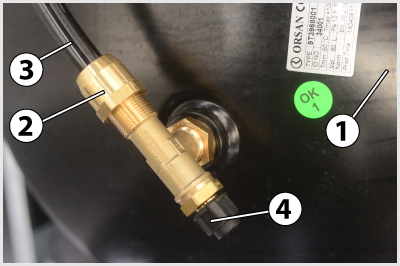
- 478. A képen látható 3-as jelű alkatrész egy... #714657
- légfékrendszerben alalmazott műanyag csővezeték.
- hidraulikus fékrendszerben alkalmazott műanyag csővezeték.
- tüzelőanyag-rendszerben alkalmazott műanyag csővezeték.
- kenőrendszerben alkalmazott műanyag csővezeték.
- 479. A képen látható 4-es jelű alkatrész egy... #714658
- légfékrendszerben alkalmazott vizsgálócsatlakozó.
- hidraulikus fékrendszerben alkalmazott vizsgálócsatlakozó.
- hidraulikus fékrendszerben alkalmazott gyorscsatlakozó.
- kenőrendszerben alkalmazott gyorscsatlakozó.
- 480. A képen látható szerkezet egy... #714659
- négykörös védőszelep.
- forgóelosztós adagolószivattyú.
- gyújtáselosztó.
- tápszivattyú.
- 481. A képen látható légszárító patronban található szilikát granulátum... #714704
- a komresszor töltési fázisában megköti, az üresjárati fázisban pedig a visszaáramló regeneráló levegőnek adja át a nedvességet.
- megköti és magában tartja a rajta áthaladó sűrített levegő nedvességtartalmát.
- lecsökkenti a sűrített levegőben található nedvesség fagyáspontját, megakadályozva ezzel a légfékrendszer lefagyását.
- 482. Mikor kell a levegőszárító berendezés szűrőbetétjét (patronját) kicserélni? #714706
- A gyári előírásnak megfelelően kb. 1-2 évente, illetve ha a vízkiválasztó képessége nem megfelelő.
- Akkor amikor már olyan mértékben eltömődött, hogy a levegőt nem képes átengedni.
- Havonta tiszítani kell és évente egyszer ki kell cserélni.
- 483. Kell-e külön levegőtisztító és fagymentesítő eszközt elhelyezni a légfékrendszerbe, ha abba légszárítót építettek? #721212
- Nem szükséges.
- Igen, erre ilyenkor is szükség van.
- 484. Mely alrendszerek biztonságos elválasztásáról és megfelelő feltöltési sorrendjéről gondoskodik a légfékrendszerben található négykörös védőszelep? #721216
- Az első üzemi fékkör, a második üzemi fékkör, a rugóerőtárolós rögzítő fékrendszer és a vele egy kört alkotó pótkocsifékező-rendszer, illetve a segédberendezések.
- Az első üzemi fékkör, a második üzemi fékkör, a légrugózás és a sebességváltó működtetés.
- Az első üzemi fékkör, a második üzemi fékkör, a pótkocsi töltő-, illetve a pótkocsifékező-rendszere.
- 485. A légfékrendszerbe épített légszárító... #721259
- víztelenítő képességét havonta ellenőrizni, a szűrőbetétet 1-2 évente cserélni kell.
- víztartályából a megkötött kondenzvizet naponta le kell ereszteni.
- szűrőpatronját havonta ki kell mosni benzinben.
- 486. Hogyan lehet eltávolítani a légtartályokból az esetlegesen összegyűlt vizet? #721261
- A légtartály alján levő kézi működtetésű víztelenítő szelep elbillentésével, esetleg automata víztelenítőszeleppel.
- A tartály alján levő kondenzvíz-leeresztő csavar kicsavarásával.
- A légtartály után kötött víz-olaj leválasztóval.
- A légtartály oldalán található tisztítónyílás szabaddá tételével.
- 487. Hogyan választja ki a légfékrendszer levegőszárítója a levegőben levő vizet? #721262
- A szűrőben levő granulátum megköti a nedvességet, majd a kompresszor üresjáratában a regeneráló tartályból, vagy a rendszerből visszaáramló levegő kiviszi azt a szabadba.
- A szűrőben levő granulátum kiszűri a vizet és eltárolja a regeneráló tartályban, amelyből időnként le kell azt engedni.
- A levegőt felmelegíti, így a benne található nedvesség kicsapódik és a szűrőn át a szabadba távozik.
- A levegőt lehűti, így a benne található nedvesség kicsapódik és a szűrőn át a szabadba távozik.
- 488. A képen látható kompresszor esetében... #724215
- az 1-es jelű alkatrész a hengerfej, a 2-es a henger, a 3-as a forgattyúház.
- az 1-es jelű alkatrész a henger, a 2-es a hengerfej, a 3-as a forgattyúház.
- az 1-es jelű alkatrész a hengerfej, a 2-es a forgattyúház, a 3-as a henger.
- az 1-es jelű alkatrész a henger, a 2-es a forgattyúház, a 3-as a hengerfej.
Üzemi fékrendszer, rögzítő fékrendszer (1 db., 1 pont)

- 489. Hogyan végzi el a jármű rögzítőfékezését az ábrán látható rugóerő-tárolós fékhenger? #704421
- A rögzítőfékszelep az 1-es jelű hengerből kiengedi a sűrített levegőt (megszünteti a túlnyomást), ezáltal az előfeszített 2-es jelű rugó képes elmozdítani a 3-as dugattyút, illetve a 4-es fékrudazatot.
- A rögzítőfékszelep sűrített levegőt enged az 1-es jelű hengerbe, amelynek nyomása a 3-as dugattyút és a 4-es fékrudazatot a 2-es rugó ellenében elmozdítja.
- 490. A rögzítőfék-rendszer... #704439
- legalább a jármű egy tengelyén található összes kereket fékezi, és képes arra, hogy a járművet tartósan rögzítse, akár a vezető távollétében is.
- a jármű összes kerekét fékezi, és képes arra, hogy a járművet tartósan rögzítse, akár a vezető távollétében is.
- a sebességváltó legalacsonyabb fokozatának bekapcsolásával rögzíti a járművet.
- legalább a jármű egy kerekét fékezi, és képes arra, hogy a járművet tartósan rögzítse, akár a vezető távollétében is.
- 491. Amikor a többkörös légfékberendezés valamelyik fékköre tömítetlen, meghibásodik, akkor a védőszelep... #704440
- nem engedi leürülni az ép körök légtartályait, sőt lehetővé teszi azok további töltését is.
- elektromos jelet ad a műszerfalon található fékrendszer figyelmeztető lámpának.
- működésbe hozza a biztonsági fékrendszert.
- 492. Mi figyelmezteti a járművezetőt arra, hogy a rugóerő-tárolós fékhenger a kerekeket rögzíti? #704457
- A műszerfalon elhelyezett piros fényű visszajelző lámpa.
- A műszerfalon elhelyezett nyomásmérő műszer mutatója.
- A rögzítőfékszelep karjának helyzete.
- Az, hogy a motort nem lehet beindítani.
- 493. Mi a dinamikus fékerőszabályzó rendeltetése? #704468
- A tengelyterhelés függvényében módosítja a fékerőt.
- Az útfelület állapotának (száraz, nedves, havas stb.) megfelelően módosítja a kerékfékerőket.
- Megakadályozza a kerekek blokkolását.
- Megakadályozza a hajtott kerekek kipörgését.
- 494. Mi történik akkor, ha a rugóerő-tárolós fékhengerekkel működtetett rögzítőfék-berendezés légtartályában, a rögzítőfék oldott állapotában a túlnyomás megszűnik? #704502
- A rögzítőfék-berendezés működésbe lép, és befékezi a járművet.
- Ilyenkor nem lehetséges a jármű rögzítőfékezése.
- Nehezebbé válik a rögzítőfékkar behúzása.
- Nem lehet beindítani a motort.
- 495. A képen látható rögzítőfékszelep 2-es jelű alkatrésze... #704593
- a biztosító gyűrű, melyet fel kell húzni ahhoz, hogy a szelep karja az oldott, illetve a rögzített állásából kibillenthető legyen.
- működtetőkarba épített féklámpakapcsoló, amelyet akkor kell használni, ha a szelepet menet közben működtetik.
- 496. Mikor van szükség a rugóerőtárolós rögzítőfék henger képen látható 3-as jelű oldócsavarjára? #704624
- Ha a rögzítőfék a fékrendszer hibája esetén normál módon nem oldható, és a járművet vontatni kell.
- Ha meghibásodott a rögzítőfékrendszer, de a járművel feltétlenül tovább kell közlekedni.
- A szükséges rögzítőfék hatás pontos bellításakor.
- A kerékfékszerkezet hézagának utánállításakor.

- 497. Mikor világít a képen bekeretezett visszajelző lámpa? #704709
- Ha a rögzítőféket behúzták, vagy a rugóerőtárolós rögzítőfék tartályaiban nem elegendő a nyomás annak oldásához.
- Ha a rögzítőféket oldották.
- Ha az automata váltó meghibásodott.
- Ha az automata váltót parkolási helyzetbe állították.
- 498. Mi a légfékrendszerben található főfékszelep (pedálszelep) feladata? #704725
- A járművezetőnek a fékpedálra gyakorolt láberejével arányos nyomású sűrített levegőt vezérel ki az üzemi fékkörökbe.
- A rözítőfék oldására szolgál.
- A pótkocsira kivezérelt üzemi féknyomást állítja be.
- 499. Ha a kétkörös légfékberendezés egyik fékköre megsérül akkor... #704873
- a másik fékkörrel a gépjármű fékezhető, de a fékút hosszabb lesz.
- a másik fékkör levegőt enged a sérült fékkörbe a levegővesztés pótlására.
- a másik fékkör átveszi a sérült fékkör feladatát és nagyobb erővel fékez, hogy a jármű előírt fékhatása teljesíthető legyen.
- a másik fékkörrel a gépjármű fékezhető marad, de csak egy alkalommal, mert az utántöltése ennek a fékkörnek is megszakad.
- 500. Mit jelez a két légnyomásmérő-műszer a kétkörös légfékberendezéssel ellátott gépjármű műszerfalán? #704874
- Az egyik műszer az első a másik a második üzemi fékkör tartálynyomását mutatja. Kétmutatós műszerek esetén a piros mutató a fékezőnyomást, a fehér vagy fekete mutató a tartálynoymást jelzi.
- Az egyik nyomásmérő-műszer az üzemi fékkörök kivezérelt nyomását, a másik pedig a rugóerőtárolós rögzítőfék és a segédkör tartálynyomását mutatja.
- Az egyik nyomásmérő-műszer a vontató-, a másik a pótkocsi töltő- és fékezőkör nyomását jelzi vissza.
- Az egyik műszer a kompresszor, a másik a féklégtartályok nyomását mutatja.
- 501. Mi a légfékrendszerben található relészelep feladata? #704875
- Az időkésedelem csökkentése.
- A jármű terhelésének megfelelően változtatja a kerékfékszerkezethez kivezérelt nyomást.
- Az egyik fékkör kiesése esetén biztosítja, hogy a járművel biztonságosan meg lehessen állni.
- 502. Milyen rögzítőféket alkalmaznak általában a légfékrendszerrel ellátott haszongépjárműveknél? #704876
- Rugóerőtárolós munkahengerrel működtetett rögzítőféket.
- Rudazattal működtetett hidraulikus rögzítőféket.
- A kardántengelyre ható dobfékes rögzítőféket.
- Huzallal műkdtetett mechanikus rögzítőféket.
- 503. A képen látható 3-as jelű alkatrész... #714645
- a rugóerőtárolós rögzítőfék henger oldócsavarja.
- a rugóerőtárolós rögzítőfékkör vizsgálócsatlakozója.
- a rugóerőtárolós rögzítőfék henger nyomásérzékelője.
- 504. A rugóerőtárolós rögzítőfék kézikarjának behúzott (rögzített) állásában... #714646
- a nagynyomású levegő eltávozik a rugóerőtárolós munkahengerekből és a rugók ereje rudazaton keresztül befékezi a kerekeket.
- a nagynyomású levegő a rugóerőtárolós fékhengerekben a rugót összenyomja.
- nagynyomású levegő jut a rögzítőfék munkahengerekbe és működésbe hozza a kerékfékeket.
- 505. Hány üzemi fékköre van az ábrán látható légfékrendszernek? #714667
- Kettő.
- Egy.
- Egy a vonatató és egy a pótkocsi részére.
- 506. A kétkörös légfékberendezés egyik fékkörének hibája esetén mi iktatja ki a hibás fékkört és védi meg az ép kört, lehetővé téve annak további töltését is? #714668
- A védőszelep.
- A relészelep.
- A fékvezérlő szelep.
- 507. Hogyan érzékeli a jármű terhelési állapotát a légfékrendszerben található dinamikus terhelésfüggő fékerőszabályozó? #714669
- Mechanikus rugózású járműveken a rugók összenyomódását, légrugózású járműveken a légrugónyomást érzékeli.
- A relészelep által előállított nyomást érzékeli, amely arányos a jármű terhelési állapotával.
- A jármű fékezése során a dinamikus átterhelődésből adódó bólintást érzékeli.
- A vezetőnek kell a fékerőszabályozó kézikarján beállítani a jármű terhelési állapotát.
- 508. A rögzítőfék old, ha a rögzítőfékszelep működtető karját elfordítva... #721206
- a rugóerő-tárolós fékhengerbe - a rögzítőfékszelepen át - a légtartály felől beáramló sűrített levegő a dugattyú (vagy membrán) közvetítésével a működtető rugót összenyomja.
- a szelep a rugóerő-tárolós fékhengerekből kiengedi a sűrített levegőt.
- 509. A rugóerőtárolós rögzítőfék kézikarjának előre tolt (fék oldva) helyzetében... #721208
- a nagynyomású levegő a rugóerőtárolós fékhengerekben a rugókat összenyomja.
- a rugóerőtárolós fékhengerekből a levegő eltávozik a szabadba, így a kerékfékszerkezetek oldanak.
- a rugóerőtárolós fékhengerekből a levegő eltávozik a szabadba, így a rugók oldani tudják a kerékfékeket.
Lassító fékezés, motorfék, motorfékhatás növelés, retarderek (1 db., 1 pont)
- 510. Működtethető-e egyszerre az üzemi fék és a kipufogófék? #704425
- Igen.
- Nem.
- 511. Általában milyen tehergépjárműben találkozhatunk kipufogófékkel? #704436
- Dízelmotoros gépkocsikban.
- Otto-motoros gépkocsikban.
- Otto- és dízelmotoros gépkocsikban egyaránt.
- Csak feltöltött motorral hajtott gépkocsikban.
- 512. A gépkocsi mely kerekei fékeződnek motorféküzemben? #704478
- Csak azok, amelyek a motorral az erőátviteli berendezéseken keresztül hajtva is vannak.
- Kizárólag az első kerekek.
- Kizárólag a hátsó kerekek.
- Csak a kormányzott kerekek.
- 513. Mi a kipufogófék feladata a nagy össztömegű tehergépjárműveken? #704496
- A gépjármű tartós fékezésére szolgál (pl. hosszú lejtőn), kíméli az üzemifék-berendezést (kopásmentes a működése és tartós igénybevétel hatására sem csökken a fékhatása).
- Lehetővé teszi a jármű fékezését akkor is, ha leállt a motorja.
- Betölti a biztonsági fékrendszer szerepét.
- Leállítja a dízelmotort.
- 514. Mivel működtethető a kipufogófék? #704516
- Sűrített levegő kivezérlésével, többnyire láb-, esetleg kézi kapcsolóval.
- Kézikarral, rudazat közvetítésével.
- Pedállal, rudazat közvetítésével.
- Pedállal, huzal közvetítésével.
- 515. Ha a dízelmotoros gépkocsi meredek lejtőn, motorfékezéssel halad, előfordulhat-e, hogy a motor fordulatszáma túllépi a megengedett maximális értéket? #704519
- Igen, mivel ilyenkor a hajtott kerekek - az erőátviteli rendszeren keresztül - a maximálisan megengedhető fordulatszámnál gyorsabban is forgathatják a motor főtengelyét.
- Nem, mert a dízelmotorok minden esetben rendelkeznek fordulatszám-korlátozóval, amely ezt képes megakadályozni.
- Nem, mert tüzelőnyag-adagolás hiányában ez nem lehetséges.
- Nem, mert ezt a motorfékhatás minden esetben képes megakadályozni.
- 516. A motorfék fékező hatását... #704727
- a motor külső és belső veszteségei (súrlódás, áramlási veszteségek, körfolyamat veszteségei, segédberendezések hajtása) által fejti ki.
- az üzemanyag-adagolás megszüntetése által fejti ki.
- a motorféküzemben csökkenő motorhőmérséklet által fejti ki.
- azáltal fejtii ki, hogy ilyenkor a motorolajat az olajszivattyúnak egy fojtáson kell átáramoltatnia.
- 517. A visszatartófék (tartós- vagy lassító fék) olyan kiegészítő fékrendszer... #704881
- amely alkalmas a fékhatás hosszú időn keresztüli létrehozására és fenntartására anélkül, hogy hatékonysága jelentős mértékben csökkenne.
- amely az üzemi fék meghibásodása esetén képes a járművet az előírt lassulással megállítani.
- amely a járművet vagy járműszerelvényt képes az előírt meredekségű lejtőn vagy emelkedőn megtartani.
- amely pótkocsi vontatása esetén csak a pótkocsi fékszerkezeteit működteti, ezzel a pótkocsi mintegy "visszatartja" a vontatót.
- 518. Miért kritikus a járművek üzemi fékrendszerére nézve a hosszú időtartamú, tartós fékezés (pl. hosszú lejtőn)? #704882
- Mert a kerékfékszerkezetek túlzottan felmelegedhetnek, ami a fékhatás csökkenéséhez, esetleg kieséséhez vezethet (főként dobfékek esetén).
- Mert hosszú fékezés esetén elfogyhat a légtartályokból a fékezéshez szükséges levegő.
- Mert hosszú fékezés esetén a vezetőnek egyre nehezebbé válik a pontos fékhatás beállítása.
- Mert hosszú fékezés során a gumiabroncsok oly mértékben felmelegedhetnek, hogy akár ki is gyulladhatnak.
- 519. Mi a kipufogófék működésének lényege? #704884
- A motor kipufogócsövében a kipufogógázok útját egy fojtószeleppel elzárják, és az így létrejött fojtás miatt megnő a motor fékező teljesítménye.
- A kipufogógáz nyomását felhasználva tudják növelni az üzemi fék hatásosságát.
- A kipufogógáz energiája meghajt egy feltöltőt, az így előállított többlet nyomás felhasználásával növelhető a fékhatás.
- A kipufogógázt visszavezetik a szívócsőbe, ezáltal jelentősen megnövekszik a motorfékhatás.
- 520. A kipufogófék működésével egyidejűleg... #704885
- megszűnik a tüzelőanyag adagolása is.
- nem lehet működtetni az üzemi féket.
- nem lehet működtetni a rögzítő féket.
- megszűnik az akkumulátor töltése.
- 521. Szabályozható-e az örvényáramú retarder fékhatása? #704886
- Igen, a gerjesztőáram változtatásával.
- Nem, csak ki- és bekapcsolt (teljes fékhatás) állapota van.
- Igen, a hűtőrendszerén keresztül, a hőmérsékletének megfelelő szabályozásával.
- Igen a mágneses tárcsák mozgatásával.
- 522. Hogyan hoz létre fékhatást az elektromos örvényáramú retarder? #704887
- A rotor az állórész elektromágnesei által keltett mágneses mezőben forog, és a rotorban indukált örvényáramok elektromágneses hatása fékezi annak forgását.
- A kipufogócsőben egy elektromos motor több lépcsőben állítja a fojtószelepet, ami megnöveli a motor belső ellenállását.
- Az üzemi féket egészíti ki egy elektromos fékkarral, ami gyorsabb fékműködést eredményez.
- A forgórésszel örvénylésre késztetett hidraulikaolaj az állórészen lefékeződik és hővé alakítja a mozgási energiát.
- 523. Szabályozható-e a hidrodinamikus retarder fékhatása? #704888
- Igen, a retardert kitöltő olaj mennyiségének változtatásával.
- Nem, csak ki- és bekapcsolt (teljes fékhatás) állapota van.
- Igen, a hűtőrendszerén keresztül, az olajtöltet hőmérsékletének megfelelő szabályozásával.
- Igen, a gerjesztőáram változtatásával.
- 524. Hogyan vezetik el a hidrodinamikus retarder működése során keletkező hőt? #704890
- A motor hűtőjével vagy külön hűtőberendezéssel vezetik el.
- A retarderre szerelt ventillátorral vezetik el.
- Elengendő a természetes hőleadás, mert nem keletkezik annyi hő, ami befolyásolná a működését.
- 525. Amikor a járművezető a kipufogóféket működteti, akkor a motorba tüzelőanyag... #714629
- egyáltalán nem kerül befecskendezésre.
- az üresjárati terhelésnek megfelelő mennyiségben kerül befecskendezésre.
- a mindenkori motorfodulatszámnak megfelelő mennyiségben kerül befecskendezésre.
- a legnagyobb motorfékhatás eléréséhez szükséges kis mennyiségben kerül befecskendezésre.
- 526. Miként gyakorol fékező hatást a motor motorféküzemben? #714630
- A motorban fellépő belső és külső ellenállások (súrlódás, áramlási ellenállások, hajtási veszteségek stb.) hatására.
- A szívó- és a kipufogó-csatornák összekötése révén.
- Otto-motorok esetében a gyújtás kikapcsolása, dízelmotoroknál az alapjárati tüzelőanyag-adagolás megszüntetése révén.
- A generátorra kapcsolt ellenállások megnövelése révén.
- 527. A motorfék a fékhatását... #714631
- az erőátviteli rendszer elemein keresztül a hajtott kerekeken fejti ki.
- a kerékfékszerkezeteken keresztül fejti ki.
- a rögzítőfék-rendszeren keresztül fejti ki.
- 528. Motorféküzemben lehet-e a motor fordulatszáma a fordulatszám-szabályozó (elektronikus motorszabályozás fordulatszámkorlátozása) által meghatározottnál nagyobb? #714632
- Igen, mert a kerekek az erőátviteli rendszeren keresztül visszahajtják a motort.
- Nem, mert a fékezés mindig fordulatszám-csökkenést okoz.
- Igen, mert fékezéskor a fordulatszám-szabályozó (fordulatszámkorlátozás) kikapcsol.
- 529. Mi a növelt hatású motorfék működésének lényege? #721198
- Az összesűrített levegőt a dugattyú felső holtpontjában egy külön szeleppel, vagy az egyik kipufogószelep részleges nyitásával juttatják a kipufogócsőbe.
- A fékpedállal összekötött elektromos kapcsoló automatikusan és gyorsan képes vezérelni a kipufogócsőben levő fojtószelepet.
- A kipufogócsőbe épített fojtószelep tág határok között állítható, ezzel több részfékezési állapot valósítható meg.
- 530. Finoman szabályozható-e a kipufogófék fékhatása? #721200
- Általában nem, működtetésének csak két állása van.
- Igen, a megfelelő pedál lenyomásával finoman adagolható a fékhatás.
Dobfékek, tárcsafékek, kerékfékek működtetése, utánállítása (1 db., 1 pont)
- 531. Szükséges-e utánállítani a tárcsafék fékbetéteit? #704462
- Nem, mert a tárcsafékek fékbetétei mindig automatikusan, a kopás mértékének megfelelően utánállítódnak.
- Igen, erre minden esetben szükség van, a betétek kopásának megfelelő mértékben.
- Igen, abban az esetben, ha a tárcsaféket nem szerelték fel automatikus utánállító szerkezettel.
- Csak akkor, ha a tárcsafék nehéz körülmények között, nagy igénybevételeknek kitéve üzemel.

- 532. Melyik a dobfék és melyik a tárcsafék az ábrán látható kerékfékszerkezetek közül? #704467
- Az 1-es jelű a dobfék, a 2-es jelű a tárcsafék.
- Az 1-es jelű a tárcsafék, a 2-es jelű a dobfék.
- 533. A képen látható 2-es jelű fékmunkahenger... #704623
- az üzemi fék és a rugóerőtárolós rögzítőfék funkciójának működtetését is elvégzi.
- csak az üzemi fék funkció működtetésére szolgál.
- csak a rögzítőfék funkció működtetésére szolgál.
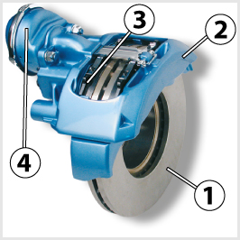
- 534. A képen látható fékszerkezet egy... #704625
- pneumatikus működtetésű, úszónyerges tárcsafék.
- pneumatikus működtetésű, fixnyerges tárcsafék.
- pneumatikus működtetésű dobfék.
- hidraulikus működtetésű, úszónyerges tárcsafék.
- 535. A képen látható 1-es jelű alkatrész... #704626
- a féktárcsa.
- a fékdob.
- a fékbetét.
- az örvényáramú tartósfék rotorja.
- 536. A képen látható 2-es jelű alkatrész a... #704627
- féknyereg.
- fékbetét.
- fékdob.
- fékpofa.
- 537. A képen látható 3-as jelű alkatrész... #704628
- a fékbetét.
- a féknyereg.
- a fékdob.
- az örvényáramú tartósfék tekercse.
- 538. A képen látható 4-es jelű alkatrész a... #704629
- tárcsafék üzemi fék funkcióját működtető fékkamra.
- tárcsafék üzemi és rögzítőfék funkcióját működtető kettős fékkamra.
- tárcsafék rögzítőfék funkcióját működtető fékkamra.
- dobfék üzemi fék funkcióját működtető fékkamra.
- 539. Melyik kerékfékszerkezet fékbetéteinek nagyobb a kopása? #704728
- A tárcsaféknek.
- A dobféknek.
- A tárcsaféknek és a dobféknek azonos a kopása.

- 540. Hogyan fejti ki fékhatását az ábrán látható dobfékszerkezet? #704891
- A 2-es fékpofák nekiszorulnak az 1-es fékdob belső felületének, amelyhez a kerék van rögzítve.
- A 2-es fékpofák megszorítják a 3-as tengelyt, amely a kerekeket hajtja meg.
- Az 1-es fékdob a 2-es fékpofák segítségével fékezi a 3-as tengelyt, amelyhez a kerék van rögzítve.
- 541. Légfékrendszerek esetén hogyan működtetik a dobfékeket? #704892
- A fékkamra, vagy fékmunkahenger a fékpofákat szétfeszítő fékkulcs tengelyét fordítja el fékkar közvetítésével, vagy feszítőéket tol a fékpofák közé.
- A kettős működésű légfékhenger a fékszerkezet belsejében közvetlenül feszíti szét a fékpofákat.
- A légfékhenger csavarorsós feszítőszerkezetet fordít el, amely szétfeszíti a fékpofákat.
- 542. Melyik kerékfékszerkezetnek jobb a hűtése (hőleadása)? #704893
- A tárcsaféknek jobb a hűtése.
- A dobféknek jobb a hűtése.
- A tárcsaféknek és a dobféknek azonos a hűtés intenzitása.
- 543. Tárcsafékkel ellátott gépjármű fékfolyadéktartályában a folyadékszint az üzemelés során lassan, folyamatosan csökken, de nem éri el a minimumot. Szükséges-e utántölteni a fékfolyadékot? #704894
- Nem, mert az természetes jelenség, mivel a fékrendszer térfogata nő a fékbetétek kopása és folyamatos utánállítása miatt.
- Igen, mert a fékhatás csökken a fékfolyadék szintjének csökkenésével.
- 544. Milyen dobfékszerkezeteknél kell ellenőrizni és szükség esetén utánállítani a fékbetétek és a fékdob közötti hézag nagyságát? #704896
- Azoknál, amelyek nincsenek ellátva automatikus utánállító szerkezettel.
- Hidraulikus működtetésű dobfékszerkezeteknél kell ellenőrizni.
- Sűrített levegővel működtetett dobfékszerkezeteknél kell ellenőrizni.
- Mechanikus működtetésű dobfékszerkezeteknél kell ellenőrizni.
- 545. Szükséges-e tárcsaféknél időnként utánállítani a fékbetétek hézagát? #704897
- Nem, mert a fékbetét kopásakor automatikusan utánállítódik.
- Igen, mert a fékbetét kopása miatt a fékhézag megnő.
- Csak abban az esetben, ha a tárcsaféket nem szerelték fel automatikus utánállító szerkezettel.
- Fix nyerges tárcsafékeknél igen, uszónyergeseknél nem, mert utóbbiaknál automatikus az utánállítás.
- 546. A dobfékszerkezetek melyik alkatrésze kopik gyorsabban? #714537
- A fékpofák 2-es jelű fékbetétei.
- Az 1-es jelű fékdob.
- A 3-as jelű kerékfékhenger.
- 547. A tárcsa- vagy a dobfék fékhatása jobb hosszan tartó, illetve gyakori fékezéskor? #714614
- A tárcsaféké.
- A dobféké.
- 548. Lehet-e ellenőrizni a jármű üzemelése alatt a kerékfékszerkezetek betéteinek kopását? #714662
- Igen, ha a műszerfalon található olyan visszajelző lámpa, amely a fékbetéteknek a megengedett értéket meghaladó kopására figyelmeztet.
- Nem, csak közvetve, fékpróbával lehet következtetni a fékbetétek kopására.
- Nem, ezt minden esetben csak szakszervizben lehet ellenőrizni.
- 549. A dobfékszerkezet melyik alkatrésze kopik a legjobban? #721107
- A fékpofák fékbetétei.
- A fékdob belső felülete.
- A fékkulcs felülete.
- A fékpofának a fékbetéttel érintkező felülete.
- 550. A tárcsa- vagy a dobféknél kell a fékbetétek vastagságát gyakrabban ellenőrizni? #721182
- A tárcsaféknél, mert ennek betétei gyorsabban kopnak.
- A dobféknél, mert ennek betétei gyorsabban kopnak.
- 551. Hogyan lehet állítani a légfékes járművek fékkulcsos dobfékszerkezeteinek hézagát kézi utánállítás esetén? #721186
- A fékkulcsba épített állítószerkezettel lehet elfordítani a fékkulcstengelyt a fékkarhoz képest.
- A féktartó lemezen található állító csavarral (excenter) lehet állítani a fékpofa alaphelyzetét.
- A fékmunkahenger előfeszítésével lehet állítani.
- A fékmunkahenger, vagy fékkamra tolórúdja hosszúságának változtatásával.
- 552. Mikor szükséges a légfékberendezés kerékfékhengerein a dugattyúlöketet állítani (kézi állítású fékkar esetén)? #724205
- Ha a dugattyúlöket teljes fékezéskor eléri vagy meghaladja a lehetséges lökethossz felét, akkor azt a teljes lökethossz kb. egynegyedére kell visszaállítani.
- Ha a dugattyúlöket teljes fékezéskor eléri vagy meghaladja a lehetséges lökethossz 80%-át, akkor azt a teljes lökethossz kb. 20%-ára kell visszaállítani.
- Ha a dugattyúlöket teljes fékezéskor eléri vagy meghaladja a lehetséges lökethossz egyharmadát, akkor azt a teljes lökethossz kb. egytizedére kell visszaállítani.
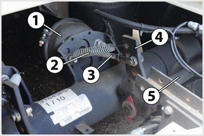
- 553. A képen látható 2-es jelű alkatrész... #724208
- a fékkar visszahúzó rugója.
- a rugóerőtárolós rögzítőfék henger rugója.
- a fékpofa visszahúzó rugója.
- a fékbetét kopásérzékelőjének elektromos vezetéke.
- 554. Mi működteti a dobfékszerkezet fékpofáit? #724209
- Fékkulcs, feszítőék vagy hidraulikus munkahenger működteti.
- Rugó feszíti szét a fékpofákat.
- A fékpofák között található pneumatikus munkahenger működteti.
- Hidraulikus munkahenger vagy elektromágnes működteti.
Elektronikus fék- és menetdinamikai rendszerek (ABS, ASR, ESP, EBS) (1 db., 1 pont)
- 555. Milyen járművek fékrendszere szerelhető fel blokkolásgátló rendszerrel (ABS)? #704460
- A hidraulikus és légfékes gépjárműveké és pótkocsiké is.
- Csak a hidraulikus fékrendszerrel felszerelt személygépkocsiké és könnyű haszonjárműveké.
- Csak a hidraulikus fékrendszerrel felszerelt személy- és tehergépkocsiké.
- Csak a személygépkocsik fékrendszerei.
- 556. Ha a vontató és a pótkocsi blokkolásgátló (ABS) rendszere és annak visszajelző lámpája is működőképes, az indítókulcs elfordítása után... #704733
- sárga fénnyel világít, majd legkésőbb az elindulást követően elalszik.
- nem világít, majd az elindulás után vörös fénnyel világít.
- sárga fénnyel, folyamatosan világít a jármű leállításáig.
- nem világít, majd csak akkor világít sárga fénnyel, ha a blokkolásgátló beavatkozik a fékezési folyamatba.
- 557. A menetdinamikai szabályozó rendszer, más néven elektronikus stabilizálóprogram (ESP)... #704735
- a jármű keresztirányú dinamikájába avatkozik be stabilizáló céllal.
- a jármű hosszirányú dinamikájába avatkozik be stabilizáló céllal.
- egyesíti a blokkolásgátló és a kipörgésgátló rendszer feladatait.
- a blokkolásgátló rendszer másik elnevezései.
- 558. Mi a blokkolásgátló berendezés (ABS) alkalmazásának célja? #704929
- A kerekek gördülve fékezésének biztosításával a stabilitás és a kormányozhatóság megőrzése.
- A fékpedálon kifejtett erőnél nagyobb mértékű fékezettség kialakulásának megakadályozása a kerékfékszerkezetekben.
- Annak lehetővé tétele, hogy a fékhatás vészfékezéskor a lehető leggyorsabban és a legnagyobb mértékben létrejöjjön.
- Az utasok testi épségét veszélyeztető mértékű vészfékezések megakadályozása.
- 559. Mihez igazodik a blokkolásgátlóval ellátott fék fékereje a kerekek megcsúszásának elkerülése érdekében? #704930
- A talaj és a kerék között kialakuló tapadóerő nagyságához.
- A jármű vagy járműszerelvény statikus tömegéhez.
- A jármű fékezése során a dinamikus tengelyterhelés változásához.
- A kerekek forgási sebességéhez.
- 560. Mikor világít folyamatosan a gépkocsi műszerfalán levő blokkolásgátló (ABS) ellenőrző lámpa? #704931
- Ha a blokkolásgátló (ABS) rendszer meghibásodott.
- Ha a blokkolásgátló (ABS) rendszer működésbe lépett intenzív fékezéskor.
- Ha a blokkolásgátló (ABS) rendszer működőképes.
- 561. Mi a kipörgésgátló (ASR) rendszer feladata? #704932
- Hirtelen, nagy gázadáskor vagy síkos úton a túl nagy vonóerő miatt bekövetkező kerékkipörgés megakadályozása.
- A motor túl nagy fordulatszámának megakadályozása.
- Elakadt vagy síkos úton álló jármű egy tengelyen levő kerekeinek összekapcsolása, és ezáltal a jobb vonóerőátadás biztosítása.
- A motor lefulladásának megakadályozása.
- 562. Mit akadályoz meg a gépjárműbe szerelt menetdinamikai szabályozó rendszer, más néven elektronikus stabilizálóprogram (ESP)? #704934
- A jármű kisodródását és megpördülését.
- A hajtott kerekek kipörgését csúszós útfelületen.
- A kerekek blokkolását intenzív fékezés során.
- 563. Az elektronikus légfékrendszer (EBS) a vontató és a pótkocsi közötti fékerőarányokat... #704935
- a lehető legjobban összehangolja, ezáltal nő a menetstabilitás.
- nem tudja megváltoztatni, a vontató és a pótkocsi fékezése egymástól teljesen függetlenül történik.
- a vezető által beállított terhelésjelek alapján állítja be.
- 564. Az elektronikus légfékrendszer (EBS) alkalmazásával a késedelmi idő a hagyományos légfékrendszerhez képest... #704936
- 0,2-0,4 másodperccel csökkenhető.
- nem változik.
- 1-2 másodperccel csökkenthető.
- teljesen megszűnik.
- 565. Milyen funkciója van a blokkolásgátló rendszernek (ABS)? #707535
- A kerék és a talaj közti tapadás függvényében szabályozza a fékerőt, és ezzel megakadályozza a kerekek megcsúszását.
- A tengelyterhelés függvényében módosítja a fékerőt.
- Csúszós útfelületen megakadályozza a hajtott kerekek kipörgését.
- A jármű haladási sebességéhez igazítja a kerékfékerőket.
- 566. Milyen funkciója van a kipörgésgátlónak (ASR) a gépjárműveken? #707536
- Ha a vonóerő nagyobb a tapadás által megengedett értéknél, akkor megakadályozza a gépkocsi hajtott kerekeinek kipörgését.
- Megakadályozza a gépjármű által vontatott pótkocsi becsuklását.
- A differenciálmű blokkolásával megakadályozza a kétoldali hajtott kerekek különböző sebességű forgását.
- 567. Kötelező felszerelés-e tehergépkocsikon és autóbuszokon a sebességkorlátozó? #707537
- Néhány esetet (pl. kommunális járművek) kivéve igen.
- Nem, de ajánlott.
- Csak, ha pótkocsit is vontatnak.
- 568. Általában kikapcsolhatja-e a gépjárművezető a kipörgésgátló (ASR) rendszert (illetve növelheti-e annak csúszáshatárát)? #707538
- Igen.
- Nem.
- 569. Mi alapján dönti el a menetdinamikai szabályozó rendszer, más néven elektronikus stabilizálóprogram (ESP), hogy szükséges-e beavatkoznia a jármű üzeme során? #707539
- Az érzékelők jelei alapján megállapítja a járművezető szándéka szerinti mozgásállapotot és ezt összehasonlítja a jármű tényleges mozgásállapotával.
- A GPS adatait összehasonlítja az érzékelők jeleivel.
- A blokkolásgátló (ABS) vagy a kipörgésgátló (ASR) rendszerek működése esetén az ESP rendszer is automatikusan beavatkozik.
- 570. Kikapcsolható-e a gépjárművek ABS, ASR és ESP rendszere (vagy növelhető-e a csúszáshatáruk)? #707540
- Az ABS - terepjáró tehergépkocsik kivételével - nem, az ASR és az ESP átlalában igen.
- Mindhárom rendszer esetében igen.
- Egyik rendszer esetében sem.
- 571. Milyen módokon avatkozik be a kipörgésgátló (ASR) rendszer a jármű üzeme során? #707542
- A kipörgő kereket fékezi és/vagy a motorteljesítményt csökkenti.
- Kizárólag a kipörgő kerekek fékezésével avatkozik be.
- Az üzemanyag-adagolás változtatásával szabályozza a motor teljesítményét.
- 572. Hogyan biztosítja az elektronikus légfékrendszer (EBS), hogy a fékbetétek élettartama lehetőleg azonos legyen? #714544
- Korrigálja a fékerőfelosztást a kerékfékszerkezetektől folyamatosan érkező kopásjelek alapján.
- Felváltva fékezi a különböző tengelyeket a beérkező kopásjelek alapján.
- A kerékfordulatszám változásából érzékeli a fékszerkezetek állapotát, és a lassabban kopó féket időnként rövid impulzusokkal működteti.
- A fedélzeti számítógépen keresztül jelzi, hogy a tengelyek között a fékbetéteket át kell cserélni.
- 573. Amikor a blokkolásgátló rendszer (ABS) megfelelően működik, akkor a műszerfalon található visszajelző lámpa... #724177
- legkésőbb röviddel az elindulást követően (maximum 7 km/h sebesség elérését követően) elalszik.
- menet közben folyamatosan világít.
- fékezéskor világít.
- abban az esetben világít, ha a blokkolásgátló rendszer beavatkozik a fékezési folyamatba.

- 574. Mire figyelmeztet a képen a bekeretezett visszajelző lámpa? #724178
- A blokkolásgátló rendszer hibájára.
- A blokkolásgátló rendszer beavatkozására.
- A blokkolásgátló rendszer hibájára vagy beavatkozására.
- Arra, hogy a vontatóhoz blokkolásgátló nélküli pótkocsit csatlakoztattak, vagy nem csatlakoztatták a felkapcsolt pótkocsi ABS kábelét.
- 575. Mire figyelmeztet a képen a bekeretezett visszajelző lámpa? #724179
- A menetdinamikai szabályozórendszer (ESP) hibájára vagy beavatkozására.
- A blokkolásgátló (ABS) hibájára vagy beavatkozására..
- A blokkolásgátló (ABS) beavatkozására.
- A blokkolásgátló (ABS) hibájára.
Ellenőrzés, üzemeltetés, karbantartás (1 db., 1 pont)
- 576. A kormányszerkezet megfelelő holtjátéka... #704405
- a kormánykerék kerületén mérhető.
- a kormányzott kerekeken mérhető.
- a kormánykeréken és a kormányzott kerekeken meghatározott értékek összege.
- a kormányrudazatban mérhető.
- 577. Ellenőriznie kell-e a gépjárművezetőnek - jogszabály szerint - a kötelezően előírt világító-, illetve jelzőberendezések állapotát és működését? #704420
- Igen, a napi első elindulás előtt kötelező ezt megtenni.
- Nem kötelező, de célszerű.

- 578. Amikor az ábrán látható nívópálca két jelölése között van a motorolaj szintje, akkor az olajszint... #704441
- megfelelő.
- magasabb az előírtnál.
- alacsonyabb az előírtnál.
- 579. Ha a gépjárművet hidraulikus kormányszervóval szerelték fel, akkor a holtjáték ellenőrzésekor... #704487
- a motort alapjáraton kell üzemeltetni.
- a motort magas fordulatszámon kell járatni.
- a motornak nem szabad járnia.
- a motor járhat, de állhat is.
- 580. Milyen hűtőfolyadékkal kell feltölteni a zárt rendszerű, kiegyenlítő tartályos hűtőrendszert? #704510
- Vízzel hígított fagyálló koncentrátummal vagy bekevert hűtőfolyadékkal, amely télen-nyáron egyformán használható.
- Lágy vízzel, mert ennek a legjobb a hűtőképessége.
- Desztillált vízzel, hogy a hűtőrendszerben elkerülhető legyen a vízkő kiválása.
- 581. Tovább közlekedhet-e gépjárművével, ha a hidraulikus kormányszervóban megszűnt az olajnyomás, de a hidraulikaolaj nem folyt el? #704517
- Igen, a legközelebbi javítóműhelyig közlekedhet.
- Igen, hiszen a kormányszerkezet ilyenkor is üzemképes.
- Nem, a hibát azonnal el kell hárítani, vagy a gépkocsit el kell vontatni.
- Igen, de ajánlatos csökkentett sebességgel közlekedni.
- 582. Gépjárművének generátora nem tölti az akkumulátort. Közlekedhet-e tovább a gépkocsijával? #704518
- Igen, azonban célszerű a meghibásodott generátort mielőbb kijavíttatni, mert ellenkező esetben az akkumulátor nagyon rövid idő alatt lemerül.
- Nem, mert a villamos berendezések ilyenkor egyáltalán nem működnek.
- Nem, mert az a villamos rendszer súlyos károsodását okozhatja.
- Igen, mert az akkumulátor hosszú ideig képes önállóan is táplálni a fogyasztókat.
- 583. Kötelező-e a gépkocsi vezetőjének ellenőrizni a kormányberendezést (kormányholtjáték, szervokormány megfelelő működése, rendellenes zajok észlelése)? #704523
- Igen, a napi első elindulást megelőzően minden esetben.
- Nem kötelező, de célszerű.
- Igen, minden kerékcserét követően.
- Igen, hetente legalább egyszer.
- 584. Közlekedhet-e tovább gépjárművével, ha elromlott annak üzemi fékberendezése? #704525
- Nem, mert ez jelentős baleseti kockázattal jár.
- Igen, csökkentett sebességgel, a legközelebbi szakműhelyig.
- Igen, feltéve, hogy a rögzítőfékkel hatásosan lehet fékezni a gépjárművet.
- Igen, ha kétkörös fékberendezés esetén csak az egyik fékkör romlott el.
- 585. Mennyi a tengelykapcsoló holtjátéka megfelelő beállítás esetén? #704528
- A tengelykapcsoló pedál elmozdulásában megadva körülbelül 2-4 cm.
- A tengelykapcsoló pedál elmozdulásában megadva körülbelül 6-8 cm.
- A tengelykapcsoló pedál elmozdulásában megadva körülbelül 8-10 cm.
- A tengelykapcsoló pedál elmozdulásában megadva körülbelül 10-15 cm.
- 586. Mikor kell ellenőrizni a gépjármű fékberendezését? #704535
- Mindennap, az első elindulás előtt.
- Mielőtt a járművel lakott területen kívüli útszakaszra hajt.
- A fékrendszer megbontásos javítását követően.
- Ha a fékrendszer rendellenes működését tapasztalja.
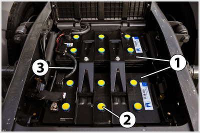
- 587. A képen látható akkumulátor folyadékszintjét... #704550
- a 2-es jelű zárókupakok eltávolításával lehet ellenőrizni és szükség szerint utántölteni.
- nem kell ellenőrizni.
- a cellafeszültség mérésével lehet ellőrizni.
- a tápfeszültség mérésével lehet ellenőrizni.
- 588. A képen látható gondozásmentes akkumulátor 1-es jelű ’varázsszemének’ zöld színe azt jelenti, hogy... #704582
- az akkumulátor megfelelően fel van töltve.
- a folyadékszintet ellenőrizni kell.
- az akkumulátor nincs megfelelően feltöltve.
- az akkumulátort ki kell cserélni.
- 589. Mire kell ügyelni a képen látható 1-es jelű kiegyenlítő tartály fedelével kapcsolatban? #704641
- Ne csavarjuk le üzemmeleg, vagy különösen túlhevült motor esetén, mert a kilépő hűtőfolyadék, vagy annak gőzei égési sérüléseket okozhatnak.
- Ne csavarjuk le hideg motor esetén, mert a hirtelen nyomáskiegyenlítődés hatására összeroppanhat a hűtő.
- 590. Milyen karbantartást igényel a száraz papírbetétes levegőszűrő? #704757
- A papírbetétet az előírt időközönként, illetve ha az eltömődöttségjelző jelez, ki kell cserélni és a szűrőházat ki kell tisztítani.
- A szűrőházat félévente az előírt szintig fel kell tölteni olajjal és a szűrőbetétet ki kell mosni.
- A szűrőbetétet az előírt időközönként szét kell szerelni és minden részét ki kell mosni, majd magasnyomású levegővel át kell fúvatni.
- 591. Mi a gépjárművezető teendője abban az esetben, ha a rugóerőtárolós rögzítőfék visszajelzője menet közben működésbe lép? #704878
- A járművel meg kell állni, mert ha a levegő nyomása egy bizonyos szint alá csökken a rugóerőtárolós munkahengerekben, akkor a rögzítőfék fékezi a járművet.
- Továbbfolytathatja az utat, mert a visszajelző a rendszer működőképességét jelzi.
- Az első javítóműhelyig továbbközlekedhet.
- 592. Általában milyen színüek az üzemzavarra utaló, a megváltozott menettulajdonságokra figyelmeztető és a működésről tájékoztató visszajelző lámpák? #704947
- Piros, sárga, zöld.
- Kék, zöld, sárga.
- Piros, kék, sárga.
- Piros, fehér, zöld.

- 593. Mi a gépjárművezető teendője, ha a jármű üzemeltetése során azt tapasztalja, hogy felgyullad a képen látható sárga színű figyelmeztető lámpa, amely a motorolaj alacsony szintjére utal? #704948
- Nem kell azonnal megállnia, de a lehető legrövidebb időn belül ellenőriznie kell az olajszintet a nívópálcával is és - szükség szerint - gondoskodnia kell az utántöltésről.
- Azonnal meg kell állnia, mert a motor alkatrészei rövid időn belül károsodnak.
- Jeleznie kell a lámpa kigyulladását a következő karbantartás során a szakszervizben.
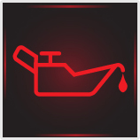
- 594. Mi a gépjárművezető teendője, ha a jármű üzemeltetése során azt tapasztalja, hogy felgyullad a képen látható piros színű figyelmeztető lámpa, amely az alacsony motorolaj nyomásra utal? #704949
- Meg kell állnia a járművel és le kell állítania a motort, majd ellenőriznie a motorolaj szintet. Csak akkor haladhat tovább a járművel, ha a megfelelő olajnyomás az olaj utántöltésével, vagy szükség szerinti javításával helyreállítható.
- Továbbhaladhat az első javítóműhelyig, ahol meg kell javíttatni a gépjárművet.
- Továbbhaladhat, ha a lámpa magas motorfordulatszámon elalszik.
- Továbbhaladhat, ha ellenőrizte a motorolaj szintjét és azt rendben találta.
- 595. Mi a gépjárművezető teendője, ha a légfékes jármű üzemeltetése során azt tapasztalja, hogy csökken a levegő nyomása a légtartályokban és kigyullad az erre figyelmeztető lámpa is? #704950
- A járművel meg kell állnia és csak a hiba elhárítása után haladhat tovább.
- Az első javítóműhelyig csökkentett sebességgel továbbhaladhat.
- Továbbhaladhat, mert akkor is tud fékezni a rögzítőfékkel, ha kiürül a légtartály.
- Továbbhaladhat, ha a jármű rögzítőfékje képes az előírt biztonsági fékhatás kifejtésére.
- 596. Mire kell ügyelnie a hűtőfolyadék utántöltésénél, ha a motor hűtőrendszere a hűtőközeg lecsökkent szintje miatt jelentősen túlmelegedett? #714546
- A leállítást követően körülbelül 45-50 Celsius fok alá hűtött motort újra beindítva, alapjáraton pótolja a folyadékhiányt.
- A motor leállítása után azonnal el kell végezni a folyadékpótlást, így hamarabb lehűl a motor.
- Az utántöltést minél előbb el kell végezni, a motort maximális fordulatszámon járatva.
- Az utántöltést akkor kell elvégezni álló motor mellett, ha a motor már teljesen lehűlt.
- 597. Részt vehet-e gépkocsijával a közúti forgalomban, ha a kormányberendezésének a kormánykeréken - az elfordulás szögében - mért holtjátéka a 20 fokot jelentősen túllépi? #714547
- Nem, mert ezzel már veszélyezteti a közlekedésbiztonságot.
- Igen, de a kormányberendezést mielőbb alaposan át kell vizsgálni.
- Igen, mert ez a holtjáték még megengedhető.
- Igen, de csak csökkentett sebességgel közlekedhet.
- 598. Üzemmeleg motor esetén szabad-e eltávolítani a zárt rendszerű hűtő-, illetve kiegyenlítő tartály zárósapkáját? #714548
- Nem, mert a hűtőrendszerben uralkodó túlnyomás miatt forró folyadék, illetve gőz csaphat ki, ami égési sérülést okozhat.
- Nem, mert hirtelen nyomásesés következik be, és a hűtő összeroppanhat.
- Igen, előbb a kiegyenlítő tartály, majd a hűtő zárósapkáját.
- 599. Vontatható-e hosszabb távolságon keresztül a meghibásodott jármű, amelynek nyomás alatti olajzású a sebességváltóműve? #714549
- Kizárólag a kardántengelyek kiiktatását követően.
- Igen, de csak maximum 30 km/h-s sebességgel.
- Csak üresbe kapcsolt sebességváltóval.
- 600. Meg kell-e tisztítani a gumiabroncsot a felületére került ásványolaj-termékektől? #714550
- Igen, mert károsítják a gumiabroncs anyagát.
- Nem, mert nincs káros hatásuk a gumiabroncs anyagára.
- 601. A hagyományos (gondozást igénylő) akkumulátorban milyen folyadékszint ítélhető megfelelőnek? #714551
- Amikor a folyadék szintje az akkumulátor lemezeit 10-15 mm-rel ellepi.
- Amikor a folyadékszint eléri a beöntőnyílás felső peremét.
- Ha a folyadék szintje éppen az akkumulátor lemezeinek felső széléig ér.
- Ha a folyadék szintje éppen az akkumulátor lemezeinek alsó széléig ér.
- 602. A járművek alvázmosása... #714552
- akár nagynyomású vízsugárral, géppel vagy kézi eszközökkel is végezhető.
- kisnyomású vízsugárral, kézzel végezhető.
- kisnyomású vízsugárral, géppel végezhető.
- nagynyomású vízsugárral, de csak kézzel végezhető.
- 603. Ha lecsökken a hagyományos akkumulátor folyadékszintje, milyen folyadékkal végezhető az utántöltése? #714553
- Tiszta desztillált vagy ioncserélt vízzel.
- Tömény sósavval.
- Csapvízzel.
- Tömény kénsavval.
- 604. Hogyan lehet a motorolajszintet ellenőrizni a motorban? #714554
- Az olajteknőbe benyúló nívópálcával.
- Az olajteknő oldalán elhelyezett szintjelző csavar kicsavarásával.
- Az olajszűrőn elhelyezett vizsgálóablakban.
- Csak szakszervizben tudják ellenőrizni a megfelelő műszerrel.
- 605. Hol lehet ellenőrizni a zárt rendszerű, kiegyenlítő tartályos hűtőrendszer folyadékszintjét? #714555
- Kizárólag a kiegyenlítő tartályban.
- Csak a hűtőben.
- A vízszivattyúnál.
- 606. Amikor a generátor megfelelően tölti az akkumulátort, akkor a műszerfalon elhelyezett ellenőrző lámpa... #714557
- egyáltalán nem világít.
- folyamatos vörös fénnyel világít.
- vörösen villog.
- folyamatos sárga fénnyel világít.
- 607. Milyen módon tölthető a lemerült akkumulátor? #714558
- Egyenárammal úgy, hogy a töltőáram erőssége ne haladja meg az akkumulátor névleges kapacitásának 1/10-ét.
- 220 V-os hálózati feszültségű váltakozó árammal.
- Egyenárammal úgy, hogy a töltőáram erőssége érje el az akkumulátor névleges kapacitásának 50%-át.
- Egyenárammal úgy, hogy a töltőáram erőssége ne haladja meg az akkumulátor névleges kapacitásának számértékét.
- 608. Tovább lehet-e üzemeltetni a szivattyús olajozású motort, amikor abban az olajnyomás valamilyen meghibásodás miatt megszűnt? #714559
- Nem.
- Igen.
- 609. Alvázmosás után szükséges-e a jármű fékhatását ellenőrizni? #714560
- Igen, mert a kerékfékszerkezetekbe bejutó víz átmenetileg érezhetően csökkentheti a fékhatást.
- Nem, mert a a kerékfékekbe jutó víz nem befolyásolja a fékhatást.
- Nem, mert a kerékfékek teljesen tömítettek, nem juthat a belsejükbe víz.
- Csak télen, mert hideg időben nehezebben párolog el a kerékfékszerkezetekbe bejutó víz.
- 610. Miről ismerhető fel, hogy egy henger nem működik a többhengeres motorban? #714562
- Egyenetlenné válik az üresjárat és a motor teljesítménye is lecsökken.
- A motor lefullad.
- A motor erős, kopogó zajt bocsát ki.
- 611. Kell-e meghatározott időközönként motorolajcserét végezni? #714564
- Igen, az előírt futás-, esetleg munkaóra-teljesítmény után.
- Igen, a téli és nyári időszakok váltakozásának megfelelően.
- Nem, elegendő az elfogyasztott kenőolaj-mennyiség rendszeres pótlása tiszta kenőanyaggal.
- 612. A képen látható légszárító patron... #714565
- cseréjét a szennyezettségtől függően egy-két évente el kell végezni.
- nem igényel karbantartást.
- cseréjét 10.000 km-enként el kell végezni.
- 613. A képen látható 1-es jelű akkumulátorokba a 2-es jelű zárókupakok eltávolítása után az előírt folyadékszintig szükség szerint... #714566
- desztillált vizet kell tölteni.
- kénsavat kell tölteni.
- csapvizet kell tölteni.
- sósavat kell tölteni.
- 614. A képen látható módon, megemelt mellső futóművel kell vontatni a gépjárművet, ha... #714567
- kormányszerkezete működésképtelen, vagy szervókormányából elfolyt az olaj.
- motorja működésképtelen.
- sebességváltója működésképtelen.
- elektromos rendszere nem működik.
- 615. A képen látható 1-es jelű olajszintjelző pálcával a motor kenőolajszintje... #714568
- álló motoron ellenőrizhető, a motor leállítását követően kellő időt hagyva arra, hogy a kenőolaj visszafolyjon az olajteknőbe.
- járó motoron ellenőrizhető, a motor beindítását követően kellő időt hagyva arra, hogy a kenőolaj elérje az üzemmeleg állapotot.
- álló és járó motoron egyaránt ellenőrizhető.
- 616. A képen látható 1-es jelű generátort hajtó 2-es jelű ékszíj feszessége akkor megfelelő, ha annak behajlása kézzel benyomva... #714570
- 10-20 mm.
- 0-10 mm.
- 20-40 mm.
- 40-60 mm.
- 617. Mire figyelmeztet a képen a bekeretezett visszajelző lámpa? #714574
- A sebességváltóval kapcsolatos hibára, vagy rendellenességre.
- A differenciálművel kapcsolatos hibára, vagy rendellenességre.
- A differenciálzár bekapcsolt állapotára.
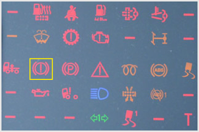
- 618. Mire figyelmeztet a képen a bekeretezett visszajelző lámpa? #714575
- A fékrendszerrel kapcsolatos hibára vagy rendellenességre.
- A sebességváltóval kapcsolatos hibára, vagy rendellenességre.
- A differenciálművel kapcsolatos hibára, vagy rendellenességre.
- A differenciálzár bekapcsolt állapotára.
- 619. Tovább közlekedhet-e járművével (járműszerelvényével), ha menet közben kigyullad a képen bekeretezett visszajelző lámpa? #714576
- Nem.
- Igen.
- Igen, csökkentett sebességgel.
- Igen, a legközelebbi szakműhelyig.
- 620. Mikor kell a motorolajat utántölteni? #714578
- Ha a motorolaj szintje felülről megközelíti, vagy eléri a mérőpálca minimum jelzését.
- Mindig, ha a motorolaj szintje nem éri el a mérőpálca maximum jelzését.
- Havonta egyszer mindig után kell tölteni.
- 621. Korszerű, zárt rendszerű, gondozásmentes akkumulátornál az állapotjelző (varázsszem) milyen színnel jelzi a töltött és töltetlen állapotot? #714579
- A töltött állapotot zöld, a töltetlen állapotot fekete színnel jelzi.
- A töltött állapotot sárga, a töltetlen állapotot fekete színnel jelzi.
- A töltött állapotot kék, a töltetlen állapotot piros színnel jelzi.
- A töltött állapotot piros, a töltetlen állapotot kék színnel jelzi.
- 622. Az egytárcsás, száraz súrlódású, hidraulikus működtetésű tengelykapcsoló folyadéktartályába a szint csökkenése esetén milyen folyadékot szabad utántölteni? #714580
- Fékfolyadékot.
- Hidraulika olajat.
- Tengelykapcsoló olajat.
- Fagyálló folyadékot.
- 623. Hidraulikus szervokormánnyal ellátott járműnél hogyan lehet ellenőrizni a kormánykerék holtjátékát? #714581
- Járó motornál kell ellenőrizni, mert álló motornál a szerkezet működéséből adódóan nagyobb holtjátékot mérhetünk.
- Csak álló motornál lehet ellenőrizni, mert járó motornál a szerkezet működéséből adódóan nagyobb holtjátékot kapnánk.
- Járó és álló motornál is lehet ellenőrizni, mert nincs különbség a holtjáték nagyságában.
- 624. Lehet-e ellenőrizni a légfékrendszer kompresszorának szállítási teljesítményét? #714583
- Igen, a műszerfalon található légnyomásmérő-műszereken figyelve az üres rendszer feltöltési idejét.
- Csak szakműhelyben lehet ellenőrizni a megfelelő műszerrel.
- Csak közvetetten lehet ellenőrizni, a jármű lassulásmérővel végzett fékhatásvizsgálata során.
- 625. Ha a motorolaj szintje a mérőpálcán levő jelölések között látható, akkor a szint magassága... #714585
- ez előírtnak megfelelő.
- az előírtnál kisebb.
- az előírtnál nagyobb.
- 626. Szükség van-e a sebességváltómű, illetve a differenciálmű karbantartására? #721111
- Igen, előírt időközönként, illetve futásteljesítményt követően az olajszintet kell ellenőrizni, illetve cserélni az elhasználódott kenőolajat.
- Nem, ezek a berendezések egyáltalán nem igényelnek karbantartást.
- Igen, ezekben a berendezésekben télen és nyáron eltérő olajtípust használnak, ezért ennek megfelelően kell olajat cserélni.
- 627. Természetes-e normál igénybevétel esetén, hogy az ablaktörlő gumilapátja idővel veszít a törlőképességéből, ezért szükséges a cseréje? #721113
- Igen, az ablaktörlő lapátok gumiéle kopik, illetve öregszik, ezért azokat időközönként cserélni kell.
- Nem, mert az ablaktörlő lapátok csak durva külső behatástól károsodhatnak.
- Nem, mert az ablaktörlő lapátokat teljesen kopásmentes kivitelben készítik.
- 628. Hol végezhető el a folyadékszint ellenőrzése az ábrán látható hűtőrendszerben? #721114
- A hűtőrendszer kiegyenlítő tartályában.
- A termosztátnál.
- A vízszivattyúnál.
- 629. Mikor kötelező ellenőrizni, illetve szükség szerint utánhúzni a jármű kerekeit rögzítő csavarokat? #721115
- Az időszakos karbantartások során, illetve kerékcserét követően.
- Erre egyáltalán nincs szükség.
- Minden nap, az első elindulás előtt.
- Heti rendszerességgel.
- 630. Milyen kenőolaj tölthető be a sebességváltóműbe, illetve a differenciálműbe? #721116
- Kizárólag a gyári előírásnak megfelelő hajtóműolaj.
- A jármű motorjában alkalmazottal megegyező motorolaj.
- Tetszőleges típusú hajtóműolaj.
- 631. Milyen sűrűn kell ellenőrizni a hagyományos ólomakkumulátor folyadékszintjét? #721117
- Nyáron kéthetente, télen havonta.
- Évente egyszer.
- Naponta.
- Félévente.
- 632. A járművek felső mosása... #721118
- kisnyomású vízsugárral, géppel vagy kézzel történhet.
- csak kézzel végezhető.
- csak nagynyomású vízsugárral végezhető.
- csak géppel végezhető.
- 633. A segédberendezéseket (generátor, ventilátor, vízszivattyú, szervoszivattyú stb.) hajtó ékszíj feszessége akkor megfelelő, ha kézzel megnyomva a behajlása nem több, mint... #721119
- kb. 10-20 mm.
- kb. 0-5 mm.
- kb. 50-60 mm.
- 634. Hol kell a fékfolyadék szintjét rendszeresen ellenőrizni az ábrán látható hidraulikus fékberendezésen? #721120
- Az 1-es jelű műanyag fékfolyadéktartályban.
- A 3-as és 4-es jelű fékhengerek vizsgálócsatlakozóin.
- A 2-es jelű főfékhenger vizsgálónyílásában.
- Az 5-ös jelű fékpedál lenyomásával.
- 635. Mi a teendő, amikor az alvázmosás után lecsökken a fékhatás? #721121
- A vizet lassú haladás közben, gyengén fékezve el kell párologtatni a kerékfékszerkezetekből.
- Meleg levegőt kell fúvatni a kerékfékekre, hogy a víz elpárologhasson belőlük.
- Addig nem lehet elindulni, amíg a víz el nem párolog a kerékfékekből.
- A járművet az üzemi fékkel és a rögzítőfékkel együtt kell fékezni addig, amíg a fékhatás újra eléri a szokásos értéket.
- 636. Milyen hibára utal, ha a négyütemű motor kenőolajszintje folyamatosan csökken, és azt gyakran kell utántölteni? #721122
- Az olajfogyasztás megnövekedett, ami elhasználódott, erősen kopott, esetleg tömítetlen motorra utal. Célszerű a jelenség pontos okát feltárni és szükség szerint kiküszöbölni.
- Súlyos üzemzavarra utal, ezért a motort nem szabad tovább üzemeltetni.
- Nem utal hibára, a belső égésű motorok jelentős mennyiségű kenőolajat fogyasztanak.
- 637. Helytelen mellső futómű-beállítás esetén... #721123
- a gépjármű kormányozhatósága és stabilitása romlik, a gumiabroncskopás megnő, illetve rendellenessé válik.
- a gépjármű felfüggesztésének alkatrészei károsodhatnak.
- megnövekszik a gépjármű kormányberendezésének a holtjátéka.
- nagymértékben növekszik a gépjármű tüzelőanyagfogyasztása.
- 638. Miért nem szabad hosszabb távolságra vontatni a legtöbb tehergépkocsit a kardántengelyének kikötése nélkül? #721124
- Mert ilyenkor a sebességváltómű - a kenés kimaradása miatt - tönkremegy.
- Mert ilyenkor kenés hiányában károsodik a gépjármű motorja.
- Mert ez jelentős gumiabroncskopással jár.

- 639. A képen látható tehergépkocsi műszerfalon a 2-es jelű lámpa azt jelzi, hogy... #721127
- a mellette lévő nyomásmérő az egyes fékkör tartálynyomását mutatja.
- az egyes fékkör légnyomása nem éri el a minimálisan szükséges értéket.
- az egyes fékkör légnyomása eléri a minimálisan szükséges értéket.
- az egyes fékkör légnyomása meghaladja a minimálisan szükséges értéket.
- 640. A képen látható gondozásmentes akkumulátor 1-es jelű ’varázsszemének’ fekete színe azt jelenti, hogy... #721128
- az akkumulátor nincs megfelelően feltöltve.
- a folyadékszintet ellenőrizni kell.
- az akkumulátor megfelelően fel van töltve.
- az akkumulátort ki kell cserélni.
- 641. A képen látható gondozásmentes akkumulátor 1-es jelű ’varázsszemének’ fehér színe azt jelenti, hogy... #721129
- az akkumulátort ki kell cserélni.
- a folyadékszintet ellenőrizni kell.
- az akkumulátor megfelelően fel van töltve.
- az akkumulátor nincs megfelelően feltöltve.
- 642. Mire utal a tehergépkocsi fedélzeti számítógépe által küldött, képen látható üzenet? #721130
- A motor kenőolajszintjét a rendszer képes érzékelni, és az megfelelő.
- A motor kenőolajnyomását a rendszer képes érzékelni, és az megfelelő.
- A motor kenőolajszintjét a rendszer képes érzékelni, és az nem megfelelő.
- A motor kenőolajnyomását a rendszer képes érzékelni, és az nem megfelelő.

- 643. A képen látható visszajelző lámpa felgyulladása... #721131
- a motorvezérlés hibájára utal. Ha ez járó motor esetén világít, akkor a járművet a lehető leghamarabb szakszervizbe kell vinni.
- a motorvezérlés hibájára utal. Ha ez járó motor esetén világít, akkor a járművel továbbhaladni tilos, a motort azonnal le kell állítani.
- a motor kenőrendszerében uralkodó túl alacsony nyomást jelzi. Ha ez járó motor esetén világít, akkor a járművel továbbhaladni tilos, a motort azonnal le kell állítani.
- a motor túlságosan alacsony kenőolajszintjére utal, ezért a motorolaj mennyiségét ellenőrizni és szükség szerint pótolni kell.

- 644. Ha a képen látható 6-os jelű visszajelző lámpa járó motor esetén felgyullad, akkor... #721132
- a gépjármű generátora nem tölti az akkumulátor(oka)t, így az elektromos fogyasztók biztonságos működése már csak rövid időre biztosított. Ezért a hibát a lehető legrövidebb időn belül el kell hárítani.
- a gépjármű generátora nem tölti az akkumulátor(ok)at, így az elektromos fogyasztók biztonságos működése nem biztosított. Ezért a járművel azonnal meg kell állni, és a hibát el kell hárítani.
- a villamos hálózat tápfeszültsége a névleges szint alá csökkent. Ha ez az állapot hosszabb ideig fennáll, akkor a járművet szervizbe kell vinni, mert előfordulhat, hogy a generátor nem tölti megfelelően az akkumulátor(oka)t.
- 645. Hogyan célszerű végrehajtani a jármű alsó mosását? #721133
- Nagy nyomással, erős vízsugárral, kézzel vagy géppel.
- Kis nyomással, gyenge vízsugárral, kézzel.
- Kis nyomású, gyenge vízsugárral.
- Nagy nyomással, erős vízsugárral, kézzel.
- 646. Ha menet közben a gépjárművezető azt tapasztalja, hogy jelentősen megnőtt a kormányholtjáték, akkor tovább közlekedhet-e a járművel az első javítóműhelyig? #721134
- Nem, mert ez balesetveszélyes.
- Igen, de csak fokozott óvatossággal, csökkentett sebességgel.
- 647. Mire kell ügyelni a hűtő kiegyenlítőtartály zárósapkájának lecsavarásakor? #721135
- A hűtőrendszerben túlnyomás lehet, ezért magas hűtőfolyadék-hőmérséklet esetén ne nyissuk ki a zárósapkát, mert a kilépő forró hűtőfolyadék, vagy annak gőzei sérülést okozhatnak.
- Ha alacsony a folyadékszint, akkor a hűtő összeroppanhat.
- Ha magas a folyadékszint, akkor nagy mennyiségű hűtőfolyadék folyhat el.
- 648. A lemerült akkumulátort normál töltésnél mekkora töltőárammal kell tölteni? #721137
- A töltőáram erőssége (Amperben) az akkumulátor kapacitásának 1/10 része.
- A töltőáram erőssége (Amperben) az akkumulátor kapacitásának 1/100 része.
- A töltőáram erőssége (Amperben) megegyezik az akkumulátor kapacitásával.
- A töltőáram erőssége (Amperben) megegyezik az akkumulátor kapacitásának tízszeresével.
- 649. A karbantartást igénylő akkumulátort milyen folyadékkal kell utántölteni, ha lecsökkent a folyadékszintje? #721138
- Desztillált vagy ioncserélt vízzel.
- Kénsav és víz meghatározott keverékével.
- Sósav és víz meghatározott keverékével.
- Csapvízzel.
- 650. Hogyan lehet ellenőrizni üzem közben, hogy a generátor tölti-e az akkumulátort? #721139
- A műszerfalon található feszültségmérő-műszerrel vagy a töltés hiányára figyelmeztető visszajelző lámpával.
- Csak szakszervizben, diagnosztikai műszerrel lehet ellenőrizni a töltés megfelelőségét.
- A fényszóró fényerejéből lehet következtetni a generátor töltőképességére.
- A nem megfelelő töltést jelzi, ha az alárendelt szerepű fogyasztók (belső világítás, rádió stb.) már nem működnek.
- 651. Hogyan vontatható a nyomóolajozással ellátott sebességváltójú tehergépjármű meghibásodás esetén? #721140
- Csak a kardántengely kikötése után vontatható.
- A tengelykapcsolót a vontatás során folyamatosan kinyomva kell tartani.
- A motort és a sebességváltót összekötő nyomócső leszerelése után.
- 652. Mit kell a gépjárművezetőnek naponta indulás előtt ellenőriznie a kormányberendezésen? #721141
- A kormányberendezés holtjátékát.
- A kormányrudazat gömbcsuklóit.
- A kormánymű és a kormányrudazatok épségét.
- A kormánykerék körülfordulásainak a számát.
- 653. Milyen ellenőrzést igényel a hidraulikus szervokormány? #721142
- A tartályban az olajszintet, a csőkötések állapotát és - ékszíjhajtás esetén - a szervoszivattyút meghajtó ékszíj feszességét kell időnként ellenőrizni.
- A szervokormány rögzítettségét és a szivárgásmentességét kell időnként ellenőrizni.
- A tartályban a fékfolyadék előírt szintjét és a csőkötések állapotát kell időnként ellenőrizni.
- 654. Hogyan lehet a hidraulikus szervokormány folyadéktartályában ellenőrizni az olajszintet? #721143
- A tartályba nyúló olajszint-ellenőrző pálcával, vagy az áttetsző tartály oldalfalán át, esetleg elektromos visszajelző lámpa segítségével.
- Csak szakszervizben ellenőrizhető.
- Az olajszint-ellenőrző csavar kicsavarásával.
- A szervokormány nem megfelelő működéséből lehet következtetni a túlságosan alacsony olajszintre.
- 655. Milyen olajat szabad a hidraulikus szervokormány tartályába utántölteni? #721144
- Csak a kezelési utasításban meghatározott hajtómű/szervoolajat.
- Csak a kezelési utasításban meghatározott motorolajat.
- Csak a hidraulilkus lengéscsillapítóban használttal azonos olajat.
- Csak a kezelési utasításban meghatározott fékfolyadékot.
- 656. Mikor kell fékpróbát végrehajtani a gépjárművel? #721150
- Közvetlenül a napi első elindulás után.
- Az üzemeltetés során többször is végre kell hajtani, hogy meggyőződhessünk a fék működőképességéről.
- Csak akkor kell végrehajtani, ha a fékszerkezeten előtte karbantartást, beszabályozást vagy javítást végeztek.
- Csak akkor, ha fékredszer hibájára utaló visszajelző lámpa világít.
- 657. A jármű ellenőrzésekor az alábbiak közül mi az, amit csak a motor beindítása után tud a gépjárművezető ellenőrizni? #721151
- Az olajnyomást.
- A hűtőfolyadék megfelelő szintjét.
- A gumiabroncsok állapotát.
- A hidraulikus fékrendszer folyadékszintjét.
- 658. Szükséges-e a járművet tisztán tartani? #721152
- Igen, mert a szennyződések korlátozhatják az előírt jelzések láthatóságát, károsíthatják a védőbevonatokat és korróziót is okozhatnak.
- Nem szükséges, de ajánlott. A tisztításnak csak esztétikai jelentősége van.
- 659. Miért kell tisztán tartani a hűtőtömböt? #721153
- Azért, hogy megfelelő legyen a hűtőcsövek és hűtőbordák hőleadó-képessége.
- Azért, hogy a hűtőtömbre lerakódott szennyeződés ne akadályozza a ventilátor forgását.
- Azért, mert a hűtőbordákra lerakódott szennyeződés korróziót okoz.
- 660. Mekkora lehet a ventilátort meghajtó ékszíj behajlása, ha a leghosszabb ágon nyomjuk be? #721154
- 10-20 mm.
- 3-5 mm.
- 30-40 mm.
- 661. Mikor kell olajszűrőt cserélni egy gépjárművön? #721155
- Az olajcserével együtt kell elvégezni.
- Amikor a visszajelző lámpa jelzi a meghibásodását.
- Minden téli felkészülés során ki kell cserélni.
- 662. Hogyan kell a száraz, papírbetétes légszűrőt karbantartani? #724183
- A papír szűrőbetétet a járműgyártó által megadott futásteljesítményt követően, illetve a szűrő eltömődését jelző műszer jelzése alapján kell cserélni.
- A papírbetétet kb. 5000 km-enként ki kell mosni és olajjal kell átitatni.
- A szűrőházat időnként tiszta olajjal kell feltölteni.
- 663. Mekkora holtjáték engedhető meg általában a kormánykerék elfordulási szögében mérve hibátlan kormányberendezés esetén? #724184
- Legfeljebb 5-15 fok.
- Hozzávetőlegesen 15-25 fok.
- Legfeljebb 25-30 fok.
- Legfeljebb 0-1 fok.
- 664. Milyen esetben világít a légfékrendszer piros színű figyelmeztető lámpája? #724185
- Amikor valamelyik üzemi fékkörben a levegőnyomás a minimálisan megengedett érték alá esik.
- Ha a fékbetétek vastagsága a megengedett minimális érték alá csökken.
- Ha a fékrendszer tartályaiban a nyomás meghaladja a maximálisan megengedett értéket.
- Ha a rugóerőtárolós rögzítőfék körben a levegőnyomás a minimálisan megengedett érték alá esik.

- 665. Mire figyelmeztet a képen a bekeretezett visszajelző lámpa? #724186
- Ha pirosan világít, vagy villog, az olyan hibára, rendellenességre utal, amelyet haladéktalanul el kell hárítani és ehhez a járművel általában meg is kell állni.
- Ezt a lámpát kizárólag az ütközés veszélyére történő figyelmeztetésre használják.
- A jármű veszélyes helyen áll, ezért ki kell rakni az elakadásjelző háromszöget.
- A vészvillogó bekapcsolt állapotára.
- 666. Milyen karbantartást igényel a differenciálmű? #724187
- Előírt időközönként ellenőrizni kell az olajszintet és ki kell cserélni az olajat.
- Előírt időközönként a differenciálmű csapágyait meg kell zsírozni.
- Előírt időközönként be kell állítani a csapágyak holtjátékát.
- 667. Mit okoz az első kerekek nem megfelelő beállítása? #724188
- A jármű irányíthatósága romlik, stabilitása csökken és a gumiabroncsok rendellenesen kophatnak.
- Hátramenetben nehezen irányíthatóvá válik a jármű.
- A megváltozott menettulajdonságok miatt a jármű pótkocsi vontatására alkalmatlanná válik.
- A lengéscsillapítók viszonylag kis futásteljesítmény után meghibásodnak.
- 668. Hogyan kell végrehajtani a jármű felső mosását? #724190
- Bő vízzel, kis nyomással, kézzel vagy géppel.
- Kevés vízzel, géppel.
- Bő vízzel, erős nagynyomású vízsugárral, kézzel.
- Bő vízzel, erős nagynyomású vízsugárral, géppel.
- 669. A zárt rendszerű hűtőrendszerben hol kell ellenőrizni a folyadékszintet? #724191
- A kiegyenlítőtartályban.
- A termosztátházban.
- A hűtőtömbben.
Téli üzemeltetés (1 db., 1 pont)
- 670. Szükséges-e - a tél beállta előtt - fagyálló ablakmosó folyadékkal feltölteni az ablakmosó tartályát? #704463
- Igen, mert a berendezés lefagyhat, így működésképtelenné válhat.
- Nem, mert az ablakmosó rendszer külön fűtéssel rendelkezik.
- Nem, mert télen egyébként sem célszerű az ablakmosót használni.
- 671. Hatással van-e a téli, hideg időjárás a gázolaj használhatóságára? #704489
- Igen, a paraffin nagy hidegben kiválhat, emiatt a szűrők is eltömődhetnek.
- Nem, mert ez csak egészen extrém időjárási viszonyok mellett fordulhatna elő.
- Igen, mert a gázolaj befagy a rendszerbe.
- Igen, mert egy bizonyos hőmérséklet alatt a gázolaj már nem éghető anyag.
- 672. Milyen hosszan és milyen időközönként célszerű indítózni, amikor a motor (pl. télen) nehezen indítható? #704509
- Indítózás 10 másodpercig, majd 20 másodpercet követően lehet ismét próbálkozni.
- Maximum egy percig, majd két perc szünet után célszerű ismét próbálkozni.
- 30 másodpercig, majd 5 másodperc szünet után lehet ismét próbálkozni.
- 673. Szabad-e hideg téli időben a szélvédőn lefagyott ablaktörlő lapátot működésbe hozni? #704745
- Nem, mivel a lefagyott ablaktörlő lapátot nem tudja megmozdítani az ablaktörlő motorja, ezért az könnyen leéghet, és ezáltal működésképtelenné válhat.
- Nem, mert működés közben a jég megkarcolja a szélvédőt.
- Igen, mert így könnyebben el tudja távolítani az összes jeget a szélvédőről.
- 674. Milyen hatása van a hidegben összesűrűsödött kenőolajnak a motor indíthatóságára? #704829
- Megnehezíti a motor beindítását.
- A motor indíthatósága nem változik.
- Könnyebb lesz a motor beindítása.
- 675. Hogyan hat a hideg külső hőmérséklet a dízelmotor indíthatóságára? #704830
- Hidegben kisebb lesz a sűrítési véghőmérséklet és ezáltal a hőfelesleg, ami csökkenti az indíthatóságot.
- A hideg levegő sűrűbb, ezért a dugattyú több levegőt tud beszívni az égéstérbe így nő a légfelesleg, vagyis javul az indíthatóság.
- A hideg levegőt jobban össze tudja sűríteni a dugattyú, ezáltal javul a motor indíthatósága.
- 676. Milyen karbantartást igényel a hűtőberendezés a téli üzemeltetésre történő felkészítés során? #704831
- Meg kell mérni és szükség szerint be kell állítani a hűtőfolyadék fagyáspontját, ellenőrizni kell a csőkötéseket és meg kell tisztítani a hűtőtömböt.
- Az általános tisztításon kívül más karbantartási feladatot nem kell végrehajtani.
- A csőkötéseket ellenőrizni kell és a kigyenlítő tartály folyadékszintjét a maximumig fel kell tölteni.
- 677. Létezik-e téli és nyári gázolaj? #704832
- Igen, a töltőállomások az évszakok, illetve az időjárás változásának függvényében állnak át a megfelelő gázolaj kiszolgálására.
- Nem, a töltőállomásokon évszaktól függetlenül csak azonos gázolajat lehet tankolni.
- igen, mindig a járművezetőnek kell kiválasztania, hogy milyen gázolajat akar tankolni.
- 678. A téli igénybevétel előtt miért célszerű a nyári gumiabroncsot télire cserélni? #704833
- Mert plusz 7 Celsius-fok alatt a nyári abroncs veszít rugalmasságából, és nem biztosít megfelelő tapadást.
- Mert a téli abroncs sokkal keményebb, és jeges úton könnyebb vele közlekedni.
- Mert télen a nyári abroncs túlzottan kopna, és megnövekedne a jármű tüzelőanyagfogyasztása.
- 679. Miért nem szabad a gázolajba télen sem benzint bekeverni? #704836
- Mert a benzinnek nem megfelelő a kenőképessége és a befecskendező rendszer alkatrészei tönkremehetnek.
- Mert kicsi lesz a sűrítési véghőmérséklet és nehezebben fog beindulni a motor.
- Mert csökken a befecskendezési nyomás és ezzel a motor teljesítménye.
- 680. A korszerű dízelmotorok lángizzító berendezése... #704837
- hideg időben, illetve hideg motornál automatikusan működik és visszajelző lámpájával tájékoztatja a vezetőt, hogy a megfelelő hőmérséklet elérése után indíthatja a motort.
- kézi működtetésű, a vezetőnek kell eldöntenie, hogy a motor és a környezet hőmérsékletének függvényében szükség van-e a működtetésére.
- automatikus működésű, hideg motor esetében az indítózás idejére kapcsol be.
- 681. Téli üzemelés során a hűtőfolyadék hőmérséklete... #704838
- megfelelő működés esetén ugyanúgy eléri az előírt üzemi hőmérsékletet, mint nyáron.
- csak akkor éri el az előírt üzemi hőmérsékletet, ha a vezetőfülke fűtését nem hasznájuk.
- 10-20 Celsius-fokkal alacsonyabb értéket vesz fel, mint nyáron.
- 682. Télen milyen folyadékkal kell feltölteni az ablakmosófolyadék tartályát? #714663
- Fagyálló ablakmosó-folyadékkal.
- Desztillált vagy ioncserélt vízzel.
- A motor hűtőrendszerében is használt fagyálló folyadékkal.
- 683. Miért kell télen, hidegben megakadályozni a gázolaj megdermedését? #721223
- Mert a nagy hidegben a paraffinkiválás miatt eltömődhetnek a gázolajszűrők.
- Mert ekkor nem tudna megfelelő nyomást előállítani a befecskendezőszivattyú.
- Mert a megdermedt gázolajat a porlasztó nem tudná kellő finomságban befecskendezni az égéstérbe.